Placed Horses
Pride of Paris, 2008 15.3h bay mare
This very pretty and athletic mare, known to her connections as Peaches, has been a winning machine on the track, with 10 wins, and 15 placings, but she is running out of eligibility conditions for further racing so her owners want move her on to a new career. Her riders say she is a good girl and really nice to ride. Her trainer says she is very attentive, brave and bold and feels she is game to try anything. She really impressed us with her great topline, good shoulder and strong hindquarters. Her trainer feels she would be a great eventing or jumper prospect, and after watching her agile cat like movement, we couldn't agree more. Her trainer says she is sound with no vices. An experienced rider can go far with this mare!
Note: the video was taken last year, right after she had just had her shoes pulled at the end of the meet and she was a little foot tender. But we watched the video of her winning race on 11/7/2014, and we saw beautiful movement, with a fluid balanced gallop and a big lofty flat kneed trot.
Contact Megan Lucas- 585-766-4380
Price $2500
Race Record and pedigree: http://www.equibase.com/profiles/Results.cfm?type=Horse&refno=8260902®istry=T
As always, a pre-purchase veterinary exam is recommended.
Hookdonchurchpunch, 2009 bay gelding, 15.3 h
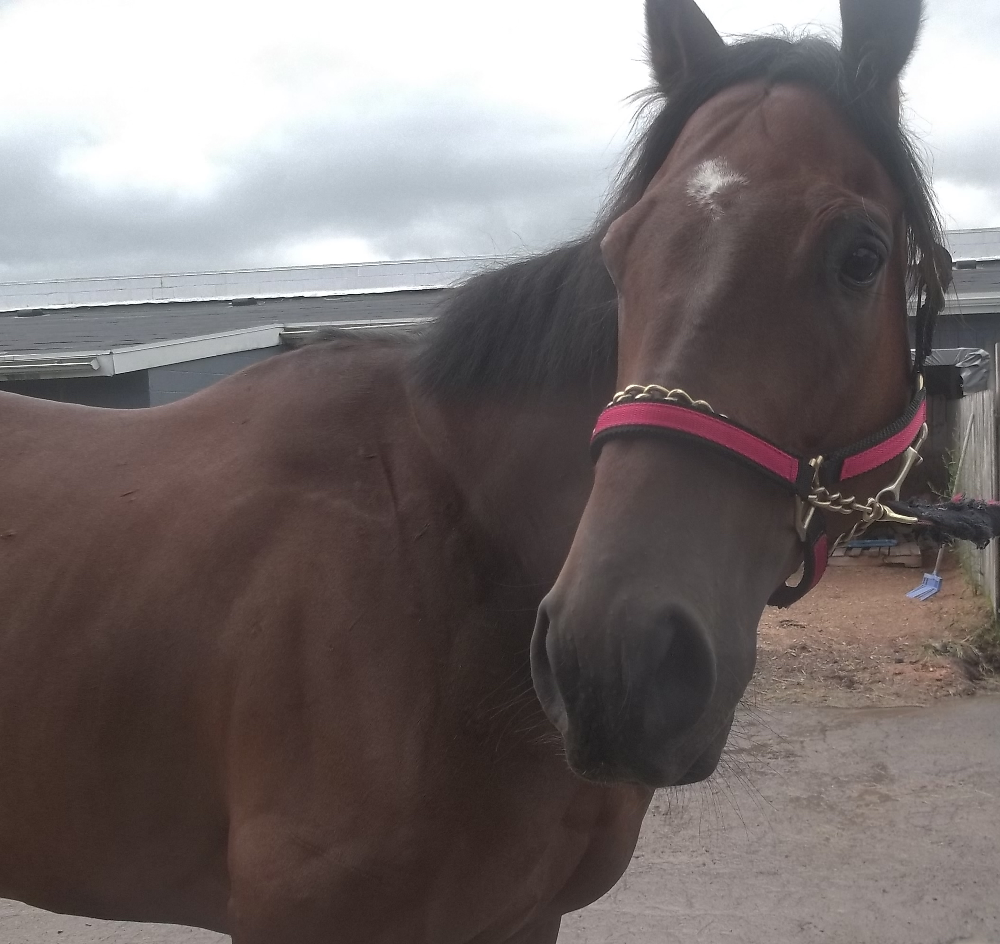
This adorably cute guy is a trainer favorite, and she admits he is her spoiled pet who loves candy and cuddles. He's not all that interested in racing anymore, so she has played around with riding him English and western, and even retraining him as a track pony... all of which he handled just fine, which shows his good nature, good brain, and adaptability for many new disciplines. But she does not have time or need for another track pony horse, so she would like to find him a great new home where someone can love him and give him the time and attention he deserves. He has a solid balanced build, and is a good mover. She says he is sound, very quiet and easy to handle and ride, and she thinks he would be suitable as a kid's horse. He has good breeding for jumping/sport disciplines, as his sire is Hook and Ladder, who is from Dixieland Band and Cox's Ridge lines and has sired several horses who are doing well as show hunters, pony clubbers or eventers. His dam is by Two Punch, a sire much coveted by eventers. This horse is the sort of all around good solid friendly guy that will be worth his weight in gold! Contact: Adrianne D'Alessandro 585-281-1810 Price: $2,000 negotiable
Race Record and pedigree: http://www.equibase.com/profiles/Results.cfm?
http://www.pedigreequery.com/hookdonchurchpunch
http://www.equibase.com/profiles/Results.cfm?type=Horse&refno=8579354®istry=T
As always, a pre-purchase veterinary exam is recommended.
Updated Photos 6/2015
Updated video 6/2015
Bad Boy Bubby, 2006 16h bay gelding
There's nothing bad about the beautiful Bubby -- he's a barn favorite with a great personality, and a beautiful solid body with balanced correct conformation. His trainer describes him as quiet, calm, sound, and a horse who does everything right. Bubby is one of those horses that is known to a lot of people on the backside, partly because he is something of a fixture here, but also because he such a cool horse who draws fans easily. Bubby is a love, a sweet been-there-done-that hunk of a horse who, we have a hunch, will be a devoted partner to his next person. He has a remarkable race record with 14 wins out of 83 starts, a testament to his work ethic and durability. He has a beautiful shoulder and kind, intelligent eyes. He moves quite lightly for his body size, with cadence, suspension, and reach. He looks like a willing sport mount to carry you across the hunt field, cross country course or dressage ring. We were also informed that earlier in his life, while in Florida, he had some training for polo, which further shows his versatility and good brain and suitability for many new careers. Horses like this who hold up to racing over several years, and retire sound with clean legs and a happy attitude are real gems, durable, smart, good to be around. Race record and Pedigree: http://www.equibase.com/profiles/Results.cfm?type=Horse&refno=7777546®istry=T
Price: $1000 Contact: Marianne 585-491-2391 As always, a pre-purchase veterinary exam is recommended.
11/2014 video http://youtu.be/mg3ttm3O2iw
Smokin Racer, 2004 15.3h bay mare
A long time barn favorite, this beautifully conformed solid bodied mare has been a durable, sound, hard knocking race horse, and she surely deserves the very best of new homes where she can put her athletic talents and big heart to a new endeavor. She has won 16 races in her 107 starts, with 54 in the money finishes. Indeed, this year has been one of her most successful racing years, with three wins. Her owner/trainer says she is a nice quiet horse and a sweetheart who always gives her best. Every time we have visited this shed row, we have stopped to hand out with "Smokey" and we have always been struck by her beauty and friendly intelligent personality. And when we photographed her she was very friendly and really enjoyed having her pictures taken, and was curious, alert, and very well behaved for everything we asked. She is well balanced, has a nice shoulder, great feet and her trainer says she is sound with no vices. Indeed, when a horse has held up so well for so many races, with clean legs, and a bright happy attitude, you know you have a durable and very sound horse, with a great brain. Her trainer feels she should transition well to a new career away from the track. This is a very nice horse ready for a new career -- please give this mature girl a chance and we think you will be richly rewarded with a loyal friend! In our experience -- and in the experience of many others who regularly transition OTTBS to new careers -- the more mature horses who are still sound and clean legged after a long racing career are THE BEST! They are sound, durable, have great work ethics, are good to be around, intelligent, and have many more good years to give a new person.
Contact: Deb Breed 585 289-3467 Price: $1,000 negotiable. The best of homes is essential for this wonderful mare and references will be required and checked.
Race Record and Pedigree: http://www.equibase.com/profiles/Results.cfm?type=Horse&refno=7133020®istry=T
As always, a pre-purchase veterinary exam is recommended.
Il Salvattore, 2008 year old, 14.2 dark bay gelding: update trail trained!
Il Salvattore, known as "Boo" or "Boobie", is small and stocky, with a great top line. He looks like a Quarter horse and even though he's small, he takes up leg. Indeed, he has already been retrained as a great trail horse, and he loves it, forging through woods and water, and he has even been ridden by a very young child. He also has great potential as a barrel horse or pony hunter/jumper and maybe even a reiner. As the video shows, he has quite the western jog. He is now retired from racing and is awaiting his new owner at a farm in Dansville. Last year he had a hairline fracture and was given several months off and the injury fully healed and he is described as completely sound. The owner and handler says she has ridden him bareback. She also said that merely a week after Il Salvattore came off the track, she put western tack on him and he went around barrels like an old pro. He loves attention and wants to please. She describes him as a "major lover" and wants to secure the best of homes for him.
http://www.equibase.com/profiles/Results.cfm?type=Horse&refno=8328750®istry=T http://www.pedigreequery.com/il+salvattore
PRICE $1,500, negotiable to a good home. Contact Hannah at- (607) 661-3212 if interested.
Pressure Point, 8 year old,16.1h+ chestnut gelding
Classy, gorgeous, a lovely mover, this elegant guy should shine in the show ring. He has been the pampered pet of the trainer's son, who would keep him forever if he could. But he has earned a well deserved retirement from racing, and the very best of homes is essential. he has spent the winter on their farm, so he is all let down and ready to begin his new career. This absolutely gorgeous thoroughbred is by the champion sire Point Given and was purchased as a yearling for $200,000. He is described as a "clown" with a great personality, and the entire family has been invested in treasuring his time in their shedrow. He is described as sound and will apparently share your lunch with you if you're willing to give him a bite of your ham sandwich!
http://www.pedigreequery.com/pressure+point2
http://www.equibase.com/profiles/Results.cfm?type=Horse&refno=7744187®istry=T
Contact: Paul Ubbink-585-739-8606 If number does not work try 585-738-3159 or 585-749-3159
Price: $1000
Hit Your Stride, 2008 15.3 chestnut mare with chrome
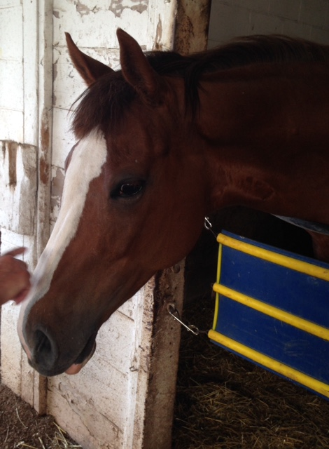
This flashy and beautiful mare is built like a tank with an enormous hind quarter and huge shoulder. You don't see many mares built like her and she is absolutely gorgeous in the flesh. Her trainer states that she is 100% sound. She is being retired from racing because she has gone through all of her conditions and it is difficult for her to be competitive in tougher racing spots. One of her trainer's favorites, she is described as a "sweetheart" and very easy to work with. She was such a quiet and well behaved girl for her photo session. She jogged slowly and patiently, suggesting potential as a western pleasure horse. When she did stride out at the trot, we also saw movement that will command attention in the hunter ring as well. Don't hesitate to call because she won't last long. An excellent home is essential for this much loved mare. Race record and pedigree:
http://www.equibase.com/profiles/Results.cfm?type=Horse&refno=8305838®istry=T
Contact: Donna Bireta-585-281-3058
Price: $2,000 negotiable
As always, a pre-purchase veterinary exam is recommended.
Sweet Argument, 2007 16.3 h dark bay mare
No argument here --this really big elegant bay girl is so pretty she doesn't need any white to prove how fancy she is! With her uphill build, athleticism, and lovely movement Sweet Argument would make a sweet eventer for the experienced rider looking to move up the levels. If you are looking for a jumper or dressage horse she no doubt could do that too. Even standing still she exudes class and athleticism! She has been a durable and successful race horse, with 6 wins and 50% top three finishes in her 65 starts. She is ready to move on to a new career sound and clean legged, which is a testament to her durability. She prefers a synthetic track to the dirt surface at Finger Lakes, and she has few racing conditions left, so her trainer has decided that it is time to let this hard trying mare move on to new endeavors. If you are looking for a big and seriously athletic horse with good energy, this mare is for you. The trainer says she can get a bit antsy in the track environment, but that she settles down once away from the track. She comes from a great sire line for sport/jumping: she is by Closing Argument, who is from the In Reality sire line from a dam by Mr. Greeley, a son of Gone West. http://www.equibase.com/profiles/Results.cfm?type=Horse&refno=8115187®istry=T http://www.pedigreequery.com/sweet+argument
Price: $2000 negotiable Contact: Michelle Tasso 585-472-2804
As always, a pre-purchase veterinary exam is recommended.
Goodguysontop, 2010 16h bay gelding
A good guy indeed -- young, sound, solid boned nice mover with unlimited potential for a sport career! This handsome guy is known as "Mikey," and he has demonstrated that he is too slow for a racing career, but that is your gain. Mikey is described as quiet and very nice to ride, and as completely sound. We admired his sturdy solid boned balanced build and his friendly personality and beautiful face with flashy markings. He showed nice movement for his jog video, with cadence and suspension that demonstrates potential for eventing, dressage and hunters. Mikey is a light cribber, but the trainer says it is completely controlled by a collar. He is likely to grow a bit more and has the substance and quality to deserve serious consideration if you are looking for an event prospect or a show hunter. Mikey is also well bred, by Pulpit's son Ecclesiastsic who is a half brother to the hot young leading sire War Front. A lot to like here!
Race record and Pedigree: http://www.equibase.com/profiles/Results.cfm?type=Horse&refno=8909300®istry=T
Price: $2,000 Contact: Wayne Sparling Cell: 607-434-7213 or H: 607-865-4083 Note: This horse trains off the owner/trainer's farm near Oneonta NY, and he comes to the Finger Lakes Racetrack when entered for a race, or for an appointment with an interested potential purchaser. So it is essential that you call to make an appointment, either to go to the farm or to have the horse brought to the track. And please keep that appointment!
As always, a pre-purchase exam is recommended.
Justgivemeasecond, 2007 year old, 16h chestnut mare
This beautiful and very well bred girl walked into the sunlight gleaming like a newly minted copper penny! She has a beautiful, sloping shoulder and powerful engine, which suggest athleticism and jumping ability, and shows very nice movement with good suspension. Her owner obviously has a soft spot in his heart for this successful and sweet girl, and he thinks that she has earned a retirement from racing into a great new home. He describes her as a sweetheart, and a delight to work around who never does anything wrong. He also states that she is sound, has no vices and has been an easy keeper. With her compact balanced build , we can see polo potential but we also can see her as a stunning show horse. With her pedigree she is an excellent broodmare prospect. Her dam is a NY stakes winner from a strong female family with a lot of quality black type, and she has already produced a NY stakes placed filly, and her Malibu Moon yearling colt got bids of over $100,000 at the 2014 Saratoga yearling sale. So breeders should give this mare very serious consideration as a broodmare prospect.
http://www.equibase.com/profiles/Results.cfm?type=Horse&refno=8025153®istry=T
http://www.pedigreequery.com/justgivemeasecond
Contact: Chris Roncone: 585-303-0335
Price: $2000 negotiable
As always, a pre-purchase veterinary exam is recommended.
Ready Victory, 2007 16.3h, chestnut gelding
We have been drooling over this flashy boy since the first time our volunteers saw him 2 years ago. His owner/trainer loves him dearly, but she is reluctantly willing to part with her very special horse because he has done enough on the track, and it is time to move him on to a new career. And consider the possibilities with such a tall, flashy, great moving horse! His trainer states that he is sound and is a joy to work with, with a sweet and affectionate temperament. He has held up sound over a career with 77 starts and 9 wins. But he does have an occasional flare up of cellulitis in a hind leg (perhaps due to sensitive skinned white legs and the excessive moisture and sandy grit horses on the track are exposed to). She says it seems to flare up more when the weather turns cold, so she might prefer that he go to a new home in a warmer climate. But her overall most important consideration is that he go to a home where the people have the experience and knowledge to treat the cellulitis flares when they happen. She will be very selective about the right home, and references will be required. We think "Vic" has great sport horse potential, and the pedigree to match: he is a son of Belmont winner Victory Gallop out of a mare by Halo, which is a renowned sport horse line.
Contact: Nancy McCabe 585-315-0719
Price: TBD by trainer based on suitability of home
http://www.pedigreequery.com/ready+victory2
http://www.equibase.com/profiles/Results.cfm?type=Horse&refno=8049373®istry=T
As always, a pre-purchase veterinary exam is recommended.
Hurricane Heat 9yo drk bay 16.2h gelding
Another beautiful, elegant boy looking to retire from racing this year after a fantastic career. Nice topline, great shoulder, lovely mover and clean legs. Did we mention well balanced, handsome, friendly and easy to handle. Trainer is listing him early to find him a good home and start him in a new career. We're thinking jumper,dressage or even eventing for this boy. He has proven himself on the track winning over $214,000 and staying sound. A true war horse who has what it takes to continue to excel at whatever he does. If you're looking for a horse to start the season with now come see for yourself what an impressive guy he is. He's got it all.
http://www.pedigreequery.com/hurricane+heat
http://www.equibase.com/profiles/Results.cfm?type=Horse&refno=7631336®istry=T
Asking:$1,500 Contact: Adrienne D'Alessandro 585-281-1810
As always, a pre-purchase veterinary exam is recommended.
Fotografia 2006 16.3-17 h bay gelding
After retiring from his racing career that included 25 starts with 2 wins, 2 seconds and 5 thirds, Fotografia aka "Scar" began his transition to working as a racetrack pony and has excelled at that for four years. Scar's temperament is clearly that of a well-cared for and loved pony: he stood quietly while we photographed and fussed over him and, in his super friendly way, showed us how much he loves peppermints. Scar has already been started over jumps and has done some greenie shows, so he has quite a wide variety of experiences and skills in his 8 years. Scar's connections are leaving for the NYRA circuit and are dispersing many of their horses and it is with a heavy heart that they seek an excellent new home for him.
http://www.equibase.com/profiles/Results.cfm?type=Horse&refno=7694570®istry=T
http://www.pedigreequery.com/fotografia2
Price: $2000 or best offer
Contact Ronnie Breed 585-749-7443
As always, a pre-purchase veterinary exam is recommended.
Wildcat Drive, 2009 16h+ dark bay gelding
This young guy is such a beauty, with his refined head, well balanced uphill build, and nice topline and neck. The photos do not fully do him justice. He recently bowed his tendon after a workout, so he will need some time and proper care for it to heal and rehab, but then he should be fine for any discipline. We think this one will greatly reward the right, patient person. He is by Friendly Island, who tends to sire very nice movers and good jumpers with quiet good brains. We know of several who are excelling in the hunter ring. We can see this guy going in that direction as well, after his tendon heals. We did not take a video due to the recent bow.
Update September 28, 2014: He is now at a farm in Albion NY turned out and getting R & R. If you call his trainer, who is the listed contact person, he can make arrangements for you to go to the farm to see this beautiful horse.
http://www.equibase.com/profiles/Results.cfm?type=Horse&refno=8551187®istry=T
Price: $500 negotiable to a good home Contact Jose Cabrera 315-521-3920
Quiet and Able, 2010, 16h dark bay filly
The beautiful and lightly raced daughter of champion Real Quiet is indeed quiet, but just not able as a race horse. But we think she will be quite able as a very fancy show hunter or sport horse! After only three starts she just has not shown any racing ability, so her owner/trainer wants to find her a new home and career. We loved her uphill build, great shoulder, solid boned and well balanced build. And she really impressed us with her lovely movement, light on her feet, with good reach and suspension, and she tracked up well from behind. She was very friendly, loved our attention and mints. Her trainer says she is very sound, quiet to handle, and has no vices. As you can see, she was posing without a nose chain, surely an indication that she is indeed quiet and good to handle. Since she is only four, she is likely to still grow more. This one is an exceptional prospect!
http://www.pedigreequery.com/quiet+and+able
http://www.equibase.com/profiles/Results.cfm?type=Horse&refno=9061014®istry=T
Price: $2,000
Contact Wayne Sparling 607-434-7213. Note: she lives at her owner/trainer's farm when not at the track for a race, so if you would like to see her, it is essential that you call and make an appointment. He will be happy to bring her to the track with an appointment, or to make arrangements for you to go to the farm near Binghamton to see her there.
As always, a pre-purchase veterinary exam is recommended.
Down to Me, 2009, 16.1h Bay Mare
This nice looking mare has the build and bone of a warmblood sporthorse instead of a thoroughbred racehorse. Unfortunately for her trainer, she's started to show that in her training and they've decided to retire her sound to move on to her next career. She has half siblings that have gone on to success in the hunter ring and could very well prove to have the same ability! This girl has no stall vices and while we spent the rainy morning on the track, she happily stood with a friend on the walker-- no interest in walking, just happily soaking in the outdoors.
Update September 28, 2014: She is now at her owner's farm in Liberty NY, in the Catskills near Monticello. You can make arrangements to go see her there. The owner is now the new contact person.
http://www.equibase.com/profiles/Results.cfm?type=Horse&refno=8600644®istry=T
Price: $500 Negotiable Contact Eddie 718-625-1300
As always, a pre-purchase veterinary exam is recommended.
Perry Lane, 2006 16h dark bay gelding
This nice looking solid bodied gelding has been a successful race horse, but this season he is letting his owner know that he would prefer a new career. He is an all around good soul, described as an intelligent and friendly horse who likes having his own person who will pay special attention to him. He stood quietly for his photo shoot despite the pouring down rain, and jogged politely and showed nice movement. He has a great shoulder and a balanced build, and is obviously athletic and durable to have held up so well on the track for many seasons. His current owner has had him since he was three and reports that he solid citizen with great personality--he loves water and playing with the hose!! No stall vices. It is very important to her to find Perry a great post-racing home. This gem of a horse could go in many directions for a new career, and if you are looking for a horse with a lot of heart who is eager to please, has a great work ethic, and will make a great partner, he is your guy.
http://www.equibase.com/profiles/Results.cfm?type=Horse&refno=7706984®istry=T
Price $1,000 negotiable
Contact Jan (315) 651 5065
Warrior From Above, 2008 16 h blood bay gelding
Quality horses command attention and this horse ticks all the boxes! Wow! One of his trainer's favorites, she has nothing but high praise for this classy and gorgeous boy who is by A.P.Warrior out of a Conquistador Cielo mare. He has the breeding to be an exciting sport mount to tear up a cross country course and collect into a dressage mount, or to dazzle in the hunter ring with his solid bodied warmblood appearance and lovely movement. His trainer enthuses about his classy personality, soundness, movement and generally all-around stellar everything. She states that he is sound, easy to ride, and has "everything going for him". We agree! Out of his stall he was quiet and composed. For his jog video we observed straight tracking with suspension and loft. Lovely mover, excellent temperament, classy and correct! And he comes form a barn known for its excellent care and quality horses that have gone on to many successful post racing careers. AN excellent home is a must for this barn favorite.
Price $2000 negotiable
Contact Donna Bireta 585-281-3058
Race record and pedigree: http://www.equibase.com/profiles/Results.cfm?type=Horse&refno=8288731®istry=T
As always, a pre-purchase veterinary exam is recommended.
Strong Enough, 2011 16 h chestnut filly
From one of our favorite connections, this gorgeous young filly is a feast for the eyes! She has a beautiful uphill build with a powerful engine and gorgeous conformation. She still has some growing in her future and will probably top out a bit bigger. She is described as easy to work with and has no vices. She has an impressive race record (not all with the current owner/trainer) with 16 starts, 3 wins and 4 seconds. Her trainer states that she has an old minor osselets that are fully set on one ankle and that she is racing perfectly sound on it -- indeed she ran second last week! This should not present any limitations for any new discipline! She further reports that she has a nice, forward way of going when galloped. We loved her beautiful movement at the walk and at the jog and can envision her in the hunter ring or as a dressage mount.
The bandages are standard procedure in this shedrow and we took these pictures late in the morning after all of her horses had been done up.
Contact: Terry Genecco 585-820-2575
Price: $ 500
http://www.equibase.com/profiles/Results.cfm?type=Horse&refno=9108738®istry=T
Mr. Hollywood 2010 16.1 chestnut gelding
We admired this handsome boy's dark chestnut, dappled coat, and we could still see the dapples under a budding winter coat.. He had just run the day before we photographed him and he was light on his feet and sound. His connections report that he is a happy horse with a good personality who is very well behaved both on and off the track. They also state that he never gets bandages because he is very sound and has no leg issues and doesn't need them. They are confident he will succeed in any sport, and we agree -- he has the athleticism, soundness, and honest hard trying brain to be a great sport horse. He is a good and honest racehorse, with two wins this year; overall, out of his 40 lifetime starts he has managed to hit the board 50% of the time, which is the hallmark of a consistent, hardy horse who goes out and does their job and comes home safe and sound. He has now truly run out of conditions and is ready to move on. He boasts a pretty head with a kind eye and, indeed, he was very quiet and polite during his interview. He also showed off well balanced light movement. Big, sound, bargain priced, handsome gelding with great sporting potential -- he ticks a lot of boxes. Don't wait to call on this bargain beauty.
Price $750 negotiable
Contact Jamie Schubert 585-943-4298
Race Record and pedigree: http://www.equibase.com/profiles/Results.cfm?type=Horse&refno=8922852®istry=T
11/2015 Video
As always, a pre-purchase veterinary exam is recommended.
Rocky Field, 2009 16h bay mare
Rocky Field may be one of those proverbial diamonds in the rough. She has a plain bay wrapping but we think she has some athleticism that isn't brought out on the racetrack. Her sire, Legion Field, is known to produce excellent jumpers and that seems to be born out in the use of her hind end when we watched her jog. She is reported to be sound, without vices and easy to work with. She will have one more race this race meet and then will be ready to be molded into the sporting, jumping athlete she is meant to be. Her trainer reports that she has a big "go" button and is a very forward girl. Eventing anyone?
Race record and pedigree: http://www.equibase.com/profiles/Results.cfm?type=Horse&refno=8601036®istry=T
Contact Jimmy Kettell 585-313-1998
Price $500
As always, a pre-purchase veterinary exam is recommended.
FLF Windy, 2009 15.2h chestnut mare: Placed
Rescued, Rehabbed, and Ready for Adoption!!! This beautiful, sweet young mare is already restarted in her training, quietly w/t/c under saddle and on the lunge, and going out on trails with others and alone, and proving to be unflappable, willing, a quick learner, and a lovely, light mover. And if you are lucky enough to become her forever person, she will be forever grateful and you can take heart in knowing you will provide the happy ending to complete her rescue and rehabilitation from a harrowing situation. Windy was already in thin condition from underfeeding when she came off the track last fall, and she was taken in by what had seemed to be a reputable place that had previously done well with an FLF OTTB. But that place's trainer, who had also been providing most of the care for the horses, left the facility sometime over the winter, and by late spring the FLF volunteers were tipped off that Windy was in dire straits. We went to investigate, and were horrified to find her dangerously thin, showing signs of severe starvation, covered in rain rot, festering sores, and scratches. We swooped in and took the mare, hoping we could pull her through and restore her to the beautiful horse we knew she could be. FLF has been fostering her since May at considerable expense, at a superb equestrian facility, with an excellent trainer, checking regularly to watch her recovery. As you can see from these photos, taken in September, Windy has indeed flourished. She started lunging work in August, and proved a quick and kind pupil. She is now being ridden in both the indoor arena and on trails, and is unflappable and quiet and a very nice mover, with light balanced gaits. She is even being used to give lessons to less confident riders, because she is so good and quiet. While going out on trails she has shown that barking and chasing dogs, farm equipment, and horses running and playing in the paddocks alongside her do not bother her in the slightest. We think she has potential as a show hunter, or would be great for someone looking to do pleasure and trail riding and hunter paces and pony club, and could also fit into a lesson program. The videos are from August, very early in her lunging retraining, so you can indeed see how quickly she learns and how well behaved she is. She is up to date on all vaccinations, worming, coggins, teeth, and farrier care, and she has such good feet that she has remained barefoot. She is a cribber, a habit she picked up while being starved, but it is controlled with a collar. She will be adopted out by FLF with a no auction/no slaughter/right of first refusal contract, and references will be required and checked. It is very important to FLF that this lovely mare be placed into the best of homes where she will be cherished and will never again be at risk of falling into the misery we have rescued her from. She is located at an equestrian center near Buffalo, NY, and can be seen and tried only by appointment. FLF will take calls and screen potential serious adopters, and facilitate arrangements to go see her. Adoption fee: $1,000 negotiable to the perfect home Contact: Lucinda Finley 716-803-4202
As always, a pre-purchase veterinary exam is recommended.
Vicariouslyutopian, 2009 16.1h+ Bay Gelding
Beautiful, stunning, gleaming-pick your adjective! Don’t get left living vicariously through this horse’s future success!!! This solid, clean legged, gelding screams sporthorse and has the looks and work ethic to make him hugely successful in his future endeavors. This tall gelding has gorgeous, correct conformation. A combination of his height and big barrel makes us confident he will accomodate a very tall rider. His trainer reports that “Vick” needs a confident handler and rider because he occasionally lets his good looks go to his head. He states Vick is excellent to handle on the ground and loves to be groomed (especially if you have peppermints), but can be strong to ride, so he is recommended only for an experienced rider. In the appropriate experienced hands, this horse has limitless potential. He was very well behaved for his jog video, and showed beautiful movement. Vick has no vices and is very sound. We can’t wait to follow his future career as a sport horse! This horse comes from a shedrow with connections known for selling quality horses that are a product of their excellent care taking and training. This is an opportunity to own a gorgeous, sound, big gelding who comes from loving caretakers with a keen interest on keeping tabs on their horses’ future careers. We suggest calling quickly as he will likely sell fast.
http://www.equibase.com/profiles/Results.cfm?type=Horse&refno=8569384®istry=T
Asking $3000, References will be checked. Contact Dan Conway 585-329-7803
As always, a pre-purchase veterinary exam is recommended.
All Quiet, 2008 15.3h Dark Bay Mare.
Looking for Quiet??? Here she is!! After earning over $60,000 on the track, All Quiet is ready for a new career. We loved her floaty, balanced trot (and our volunteer who jogged her in slightly heeled boots appreciated her impeccable manners). Her trainer states she is a joy to work around with no vices. She has a well balanced and correct build that will work in her favor as she transitions to any discipline. We think she could make a lovely hunter or dressage horse. She does have an old ankle injury that she is sound on and has never had any problems with. Her trainer also feels her pedigree is very desirable for breeding. She is by Henny Hughes, a son of champion Hennessy, and her dam is a stakes producer. Her second dam is a leading broodmare Queens Only, a multiple graded stakes producer. There is a lot of quality black type in this female family, so she is indeed an intriguing broodmare prospect.
http://www.equibase.com/profiles/Results.cfm?type=Horse&refno=8383383®istry=T
Asking $2000 Contact Gino Gabrielli 585-721-1141
As always, a pre-purchase veterinary exam is recommended.
Arrhythmic, 2010, 16h Bay mare: retained for racing
This regal young girl has the athletic uphill build and clean legs of a very desirable sport horse prospect. Arrhythmic has made it clear to her connections that race track life is not for her. Her trainer states she is not showing the aptitude to continue training and would like to see her succeed in a new discipline. Although she can be a bit feisty at the track, and her extra energy was evident on such a cold, windy, and snowy day, her trainer states she is much quieter and a sweetheart at the farm. Whoever buys this filly is sure to have a sound and athletic horse. We see her excelling as an eventer or jumper, as her build and confidence screams sport and performance horse. She also has a pedigree full of excellent spot horse lines. She is by Lion Heart, out of a Grand Slam mare, and Gone West, Hail Reason, Alleged, and Hoist the Flag are all close up in her pedigree. Although we could not get a video on such a cold blustery day, we did watch some race videos, and saw a very fluid mover.
http://www.equibase.com/profiles/Results.cfm?type=Horse&refno=9012530®istry=T
Price: $2500 negotiable
Contact: Kathleen Babcock 585-698-9364
As always, a pre-purchase veterinary exam is recommended.
Call Me Sis, 2007, 16.2h Chestnut Mare
For everyone wanting a horse that is 100% competitive athlete and 100% cuddle friend-you really can have the best of both worlds! The old warning about “chestnut mares” definitely does not describe this sweet girl. She stood perfectly for her interview and photographs, despite a freezing, snowy day that had many horses feeling extra happy with their back legs. This big girl has a permanent home in the hearts of her current connections, but her talent on the race track is waning and they have decided to let her move on to a new career, if the right home with a new job for her comes along. This gorgeous girl raced the day before her photo session and jogged sound for our volunteers the next morning -- a testament to her soundness. We have seen her trot while walking around the backside on a few other occasions and each time we have been impressed by her! Her racing videos also demonstrate her excellent, well balanced, gaits. That alone is proof of a durable athlete. She has perfectly clean legs and no vices. Her trainer states she is excellent with children and would be great for a excellent young rider to bring along with a trainer in a sport horse discipline. Big, sound, with a perfect demeanor is highly sought after, so please consider calling quickly if she appeals to you.
http://www.equibase.com/profiles/Results.cfm?type=Horse&refno=8180197®istry=T
Asking $5000, Serious Inquiries only please. Contact Marianne Manning 603-475-6938
Race record and pedigree: http://www.equibase.com/profiles/Results.cfm?type=Horse&refno=8180197®istry=T
As always, a pre-purchase veterinary exam is recommended.
Quickest Temper, 2008 15.2h Chestnut Gelding
This handsome chestnut gentleman showed nothing like his name suggests!! He was quiet and patient for his photo shoot and his trainer states that he is great to work around and an all around nice horse with no vices, clean legs and a willing attitude. This small statured gentleman has had some success on the racetrack and is very sound, but his trainer has decided that it’s time to let him find a career in which he can be more consistent. He has the “highly coveted” clean legs and no vices. Despite his small size, he has a big stride and covers ground in a beautiful, well balanced fashion. He could easily transition to many disciplines and has the manners and habits from proper handling that will help him quickly adapt to his new home. We think he would look handsome in a western saddle, but with his athleticism and compact build, think he would be a competitive polo horse as well, or a great children's hunter or pony club mount. His trainer will ask for references, as finding good homes is essential for her beloved race horses. We think Quickest Temper is a real bargain!
http://www.equibase.com/profiles/Results.cfm?type=Horse&refno=8323194®istry=T
Asking $1000 Contact Phyllis Shetron 585-317-8892
As always, a pre-purchase veterinary exam is recommended.
Real Wonder, 2008, 16h Bay Gelding.
This lovely gelding has shown a fairly low aptitude for racing, as he has not yet had a win and at six years old is running out of conditions for which he is able to run. But with his good looks, quiet demeanor, and soundness, he sure looks like he could shine in the show ring! His connections call him “Junior” and he is definitely a barn favorite. His connections are known for their great caretaking and deep bonds they form with their race horses, and Junior has been no exception. His trainer will keep him as long as necessary to ensure the perfect home is found for this “people horse”. “Junior” has good manners and was on his best behavior for his glamor shots, despite the cold, blustery day which had many horses feeling frisky. he jogged very quietly and showed nice balanced light movement. His trainer reports that he can have “younger brother” behaviour sometimes, meaning that he isn’t naughty-but can be a little bit annoying. He has no vices and nice clean legs! Horses with these attributes have been selling very quickly. If you have had your eyes out for big, young, clean legged and sound, geldings, you will need to call very quickly for this guy. A perfect home is an absolute must.
http://www.equibase.com/profiles/Results.cfm?type=Horse&refno=8346002®istry=T
Asking $1500 negotiable, References will be checked. Contact Eileen Muller 585-748-5261
--
As always, a pre-purchase veterinary exam is recommended.
She’s Off the Hook, 2010, 16.1, Dk Bay mare
This mare was listed by us last year and was sold for racing and, once again, she shows up at the end of the meet, no less intriguing as a sporting prospect. "Hooker" is a year older but still retains the feminine good looks that she showed last year. She has an athletic build and is tucked up now from racing, but we can envision a beautifully muscled girl when she starts retraining with a different discipline. She is an honest and productive racehorse with 6 wins, 6 seconds and 4 thirds from 44 lifetime starts, a really decent record that is testament to her heart and hardiness. She is also reported to be a quiet ride under tack. As a daughter of Hook and Ladder, she is desirable for his propensity to throw babies with good brains and athleticism and jumping ability. We know several alumna that have gone on to successful sporting careers. Her dam is by Seattle Slew, a line also popular with jumping/sporting/hunting disciplines. The trainer who had She's Off the Hook last year comes form a hunter/jumper background, and she thought this filly has great potential for those disciplines. At the jog, "Hooker" displays a nice, balanced trot with nice reaching movement, which we noted last year when she was initially listed. This beautiful, feminine mare is a steal at $500. Price: $500 negotiable to a good home Contact Johnny Loiaza 585-545-5970
Race Record and Pedigree: http://www.equibase.com/profiles/Results.cfm?type=Horse&refno=8911817®istry=T
Video from November 2014:
Video from November 2015:
As always, a pre-purchase veterinary exam is recommended.
Sincity Eddie, 2010 15.3 h chestnut gelding
Chrome and Cuteness alert!!! Eddie, aka Special Ed, got the trophy for cutest horse of the day! Oh my! Where to begin?! Ed is a well bred son of Freud out of a Cure the Blues mare and, on the day they got together, they produced a flashy son with a dramatic blaze, fun personality and some attitude! Ed is reported to be great to gallop, has a sweet personality and is a barn favorite. Who could resist that cute face?? He earned his third win this year, and since then he has not fared as well in tougher race conditions. He is ready to find a new career while still sound and happy. He does occasionally tie up and needs a low sugar diet which should not impact disciplines less rigorous than racing. He is reported to be a playful guy with a sense of humor and has been turned out well with other horses. His pedigree is ideal for sport/jumping; we have placed several Freud offspring who are now doing well in eventing and as show hunters. Who wouldn't love to see Ed's adorable countenance greeting them every morning?
Contact Christie Attwood 585-478-8349
Price $ 1500 neg.
October 2015 Photos
Video from Nov. 2014:
Video from Oct. 2015:
As always, a pre-purchase veterinary exam is recommended.
Stripes 2011 16.1 h dk bay gelding
The gorgeous Stripes is a beautifully bred and very lightly raced young man. Unfortunately, while breaking out of the starting gate during his first race recently, he banged his right hind leg and has a curb. He was still ouchy on it on the day of his interview so we could not get any video on footing that was already on the slick side. His owner says he is a beautiful mover. She also reported that the vet says a winter off will heal him enough to return to racing, yet his connections are so smitten with him that they prefer to find another vocation for their handsome boy. What we could see is a very well conformed horse with size and good bone, a regal presence, and a great brain borne out by his nice breeding. He is a son of the young sire Colonel John, a son of champion Tiznow. His dam is It's Personal, a multiple graded stakes winner and stake producer by Personal Flag. This breeding means he has the Relaunch/In Reality line on top, and the Private Account/Damascus line on his maternal side -- both lines are excellent for jumping and sport. We loved his pretty head and kind eye that topped a well balanced body that is still growing and maturing. Given the tincture of time to heal a minor injury, this lovely horse could be something special.
Contact Alex Hillegass 484-896-8754
Price $1500 negotiable to good home-- owner wants a perfect forever home; does not want to sell to someone who seeks to quickly resell her beloved boy
Race record and pedigree: http://www.equibase.com/profiles/Results.cfm?type=Horse&refno=9118953®istry=T
As always, a pre-purchase veterinary purchase is recommended.
Rustify, 2010 16h bay filly
She's a very pretty girl, and a pretty mover too! This young, sound, solid boned and clean legged filly has outstanding potential for all the sport disciplines. We can see her excelling as a jumper, eventer, or show hunter. Her trainer reports that she has trained on a farm with steeplechase horses, so she has been ridden often out in the fields, woods, along roads, and nothing bothers her -- she just happily goes right along. Cross country should be a breeze for her! Although the conditions were slushy, slick, and not ideal for letting a horse freely jog out, for her video we observed very nice movement, balanced, with a good cadence. Her trainer reports that she can be a mild cribber in her stall, easily controlled with a collar. He says she never cribs when she is turned out and does not go out with the collar, so he thinks that once she is out of the confined atmosphere at the track, she will be fine. In addition to her balanced conformation and strong shoulder, her pedigree also suggests excellent jumping and sport potential. She is from the Deputy Minister sire line, and on her dam side, Hoist the Flag, Turn-to and Princequillo are all prominent. Price: $1,000 negotiable Contact: Bill Bartlett 585-749-6446
http://www.equibase.com/profiles/Results.cfm?type=Horse&refno=8888874®istry=T
As always, a pre-purchase veterinary exam is recommended.
Colleen's Angel, 2011 16h bay filly
This still growing sweet faced homebred filly is described as very athletic and very sound. She is a half sister to Clean Jean, a stakes winning mare who is a virtual winning machine. While Colleen has not inherited the racing ability of her illustrious sister, she has great potential for sporting disciplines. Her trainer says she gets stressed about racing, and uses up enough nervous energy before the start that she shows early speed and then tires out. He says when she is at their farm and gets turned out, she settles right down and is a different horse than on the track. Her legs are very clean, and she has well balanced conformation. While she was too "up" for her video to get much appreciation for her trot, her trainer says she is actually a beautiful mover, and he is an astute and very reliable horseman who knows his stuff. As he worked to settle Colleen down to get her to walk and jog for us (it was very cold, and she had just been walking since her most recent race 5 days before we photographed her), we got to observe how attentive and responsive she was to her handler. It was obvious that she wants to be a really good girl. She has had the best of care, and you will be able to learn her entire history since she is still with her breeders. This young girl has unlimited potential for a sporting career in our opinion. She will be at her owner's farm very close to the Finger Lakes Race track where you can inspect her.
Price: $800 negotiable
Contact: Fran or Bob Ubbink 585-749-3159
Race Record and pedigree: http://www.equibase.com/profiles/Results.cfm?type=Horse&refno=9093468®istry=T
As always, a pre-purchase veterinary exam is recommended.
Term Loan 2009 16.1+ h bay gelding: retained for racing
Term Loan is the owner/trainers "big horse", the one he has trusted to consistently turn in an honest effort and help support his stablemates. He has been to post 19 times this year and remains sound, an endorsement for his stamina and good conformation. He is described as an all-around solid citizen with excellent manners and great work ethic. We liked his soft eye, quiet demeanor and broad chest. We think he would be an exciting project for eventing or hunter/jumper disciplines.
Contact Johnny Loiaza 585-545-5970
Price $2500
Race Record and pedigree: http://www.equibase.com/profiles/Results.cfm?type=Horse&refno=8585194®istry=T
As always, a pre-purchase veterinary exam is recommended.
Thunder Isle, 2011 16.1 h chestnut filly: Placed
This beautiful unraced filly was in race training and showing great ability when she recently bowed her tendon. Although she would be able to race once the tendon heals, her people would rather find her a great new home where her excellent potential can be brought out in a less strenuous career. Her trainer describes her as solid bodied, with a great personality, very brave, and "an attitude that will take her far." She says that after 4 months of rest for the tendon to finish healing, Thunder Isle will be ready to start turn out and retraining, with no limitations. She is currently being hand walked, and is currently located at Belmont Park on Long Island. (Her trainer will be returning to Finger Lakes in April). Thunder Isle is very well bred for either racing or jumping, by Giant's Causeway's young son Stonesider, out of a stakes placed mare who has produced a graded stakes winner , Weathered, who won over $500,000, as well as two NY-bred stakes winners. Her second dam is also a multiple stakes producer. Giant's Causeway is well known as a jump sire, and we have placed several Stonesider offspring who are all beautiful movers and showing jumping aptitude as well. With her pedigree, breeding for racing or for sport horses is also an option. For the right person who is patient and has the experience to finish her rehab, Thunder Isle presents a golden opportunity to get a young horse with unlimited potential. The photos were provided by the trainer; it has been too cold and icy to take her outside of the barn for a full photo set. Once the weather moderates, they will try to provide us with more photos. They are also able to ship her to her new home. Equibase listing and pedigree: http://www.equibase.com/profiles/Results.cfm?type=Horse&refno=9117256®istry=T
Perfect Dancing, 2011 15.3 h bay gelding: Placed!
While he may not be a perfect racehorse, we think this handsome, sound, lightly raced, still growing young boy is indeed a perfect prospect for many new disciplines. Perfect Dancing has shown no racing ability in his 8 lifetime starts, preferring to gallop along behind the field after a few bumpy starts, so his trainer wants to find him a good new home where his athletic potential can shine. He is described as sound, and his legs are clean. The assistant trainer also told us that in the few weeks she has had him, he has already worked his way into her heart as one of the sweetest horses she has worked with. He is kind, good to handle, has a good appetite. He is also still growing into his leggy frame, since he just turned four, and we think he will top out at 16h or even a bit more. With his uphill build and great shoulder, he is an enticing prospect for eventing or H/J disciplines. For his jog video he was a bit excited to be out in the cold sunshine after a couple weeks confined to hand walking inside the barn, but we saw hints of light balanced movement. Young sound lightly raced geldings like this go fast, so do not hesitate to call on this one!
Pedigree and racing record: http://www.equibase.com/profiles/Results.cfm?type=Horse&refno=9104689®istry=T
BAILEY, 13 year old 16.2h liver chestnut QH gelding: Placed!
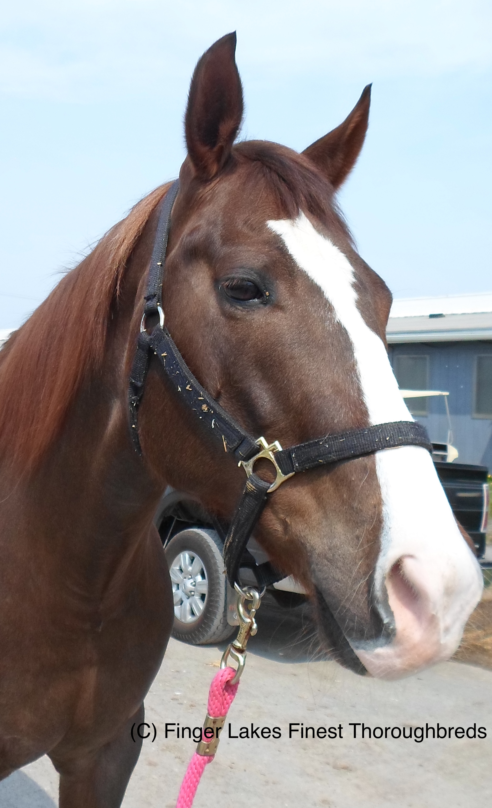
Update: Bailey has found his new home!
Chrome alert! Horses don't come much more flashy and gorgeous than this big solid and sound QH track pony who is ready for a new career. Although Bailey is not a TB, he has been a hard working part of the Finger Lakes Racetrack community as a track pony who accompanies the racehorses to their morning training and afternoon races. He has also been an outrider's horse at another track. While Bailey is very laid back and relaxed around the stable area, at the training track, and on the farm, lately he has been getting anxious in the afternoons on the main racing track, so his owner has decided it is time to find him a new career off the track. She says he is a great all around riding horse, including on trails, and that he can go in a hackamore. He is also quick on his feet, with the instant acceleration and speed that outrider horses need, so she thinks he would make a great barrel horse. She reports that at feeding time he can be a bit aggressive in his stall, but outside of the stall he is an affectionate ham. He enjoys turnout as well. We observed a well mannered, friendly and relaxed gentleman both in and out of his stall, as he obviously enjoyed getting groomed and soaked up the attention. Price: $2500 negotiable Contact: Tammi Lord 585-337-8661
As always, a pre-purchase veterinary exam is recommended.
Ivanovna, 2010 15.3h Liver Chestnut Mare
Ivanovna is a true diamond in the rough! This nicely put together girl is well bred with popular sport horse names close up in her pedigree: she's a granddaughter of Giant's Causeway on her sire's side, and from her dam, who is by Derby winner Monarchos, there are Maria's Mon, St. Ballado, Halo, and Icecapade close up in her pedigree. She is a pretty caramel colored liver chestnut with the promise of dapples under her not yet fully shed out winter coat. She is turned out at a farm very close to the track, where she has been let down since her last race in early December 2014 (which she won!). At this farm she was quietly hanging out in a pasture alone and was very happy to have some attention from our volunteers. She was very friendly and polite with us, and loved having her face rubbed. Her trainer states that she is sound, but over the winter she banged her leg and developed a lump on her knee, and although x-rays were not done, he does not want to try to bring her back to the races, since he feels she has been good to them with her consistent in the money finishes in her 35 start career, so it is time to let her find a good new home. And they care very much about finding her a truly good new home. (We felt the knee, and the lump was hard, the knee was cold, and there were no areas of soft swelling to the touch.) He also states that she may have been mistreated in the past, and sometimes takes a minute to trust strangers, but we found a polite and friendly mare who was easy to catch and handle in the pasture and who was happy to have some company and face rubs, even if that company neglected to bring mints. Ivanovna had thrown a front shoe , so we did not want to take her out to try to jog her on pavement. So our volunteer walked and jogged her on the uneven but soft ground in the paddock, and not only was the mare oh so well behaved, but she jogged soundly, and despite the missing shoe and uneven ground, showed tantalizing hints of light, toe pointing movement. After a good career on the track Ivanovna certainly deserves a chance at an new opportunity as a riding horse, sport horse broodmare, or someone's new best friend! Price $500 Contact-Harold Alvarez 914-882-1994 (preferred) or Olga Alvarez 585-919-4173
Race record and pedigree: http://www.equibase.com/profiles/Results.cfm?type=Horse&refno=8865293®istry=T
As always, a pre-purchase veterinary exam is recommended.
Ess Shape, 2008 16.2h+ Bay Gelding
This big solid bay impressed us with his kind and intelligent eye, and then he marched out of his stall like a perfect gentleman and stood like a statue posing for his listing along side a busy road. He was very well behaved and possessed an elegant and wise presence that made the volunteers think he would be a stunner in the show ring. His natural overtrack at the walk, and his suspension filled trot made us immediately think of him as a dressage horse, but his thick build, great shoulder, and athletic ability make him suitable for many disciplines! Ess Shape has raced 61 times with over $114,000 in winnings, showing his athletic ability, as well as his physical and mental toughness and durability! This war horse came back to the track this year and although his connections state he is sound and feel that he is physically capable of racing this year, he has shown them that he just isn't in the game any more, and they have decided that he has earned his retirement to a riding home. They described Ess Shape as having a great personality, easy to handle and to work with. He certainly seemed that way to us. This gem of a horse is going to be quite the bargain for some lucky person.
Price- $800 negotiable Contact Jamie Schubert 585-943-4298
Race Record and Pedigree: http://www.equibase.com/profiles/Results.cfm?type=Horse&refno=8353564®istry=T
As always, a pre-purchase veterinary exam is recommended.
Mango Mayah, 2012 15.3h Chestnut Filly
This pretty feminine girl is very well bred, sired by Discreet Cat and out of a young AP Indy mare who sold as a broodmare for $800,000, and her second and third dams are graded stakes winners. Unfortunately Mango Mayah has not lived up to her pedigree on the racetrack and in 6 lifetime starts has more than proven that racing is not her game. We saw her the day after she raced and she moved very athletically and soundly. This very feminine girl has plenty of time left to grow and fill out but looks like she will always have an elegant grace about her. She is built uphill, with a solid shoulder and a big foot. With her pedigree and conformation Mango Mayah would be an asset to any breeding program, racing or sport. Mango Mayah is reported to be sound and with her light toe pointing grace would be gorgeous in the hunter ring. Her connections told us that she can be a bit sassy or territorial in her stall, but was very well behaved out of the stall, in the wash bay, for the farrier, and that she acts professionally on the track, walking politely and calmly the track to work or race. Give this young filly some time to mature, and you will have a lovely horse who can go in many directions. Price $800 negotiable Contact- Jamie Schubert 585-943-4298
Race Record and pedigree: http://www.equibase.com/profiles/Results.cfm?type=Horse&refno=9338755®istry=T
As always, a pre-purchase veterinary exam is recommended.
Distinct Attitude 2010 16.3 dark bay gelding: Placed
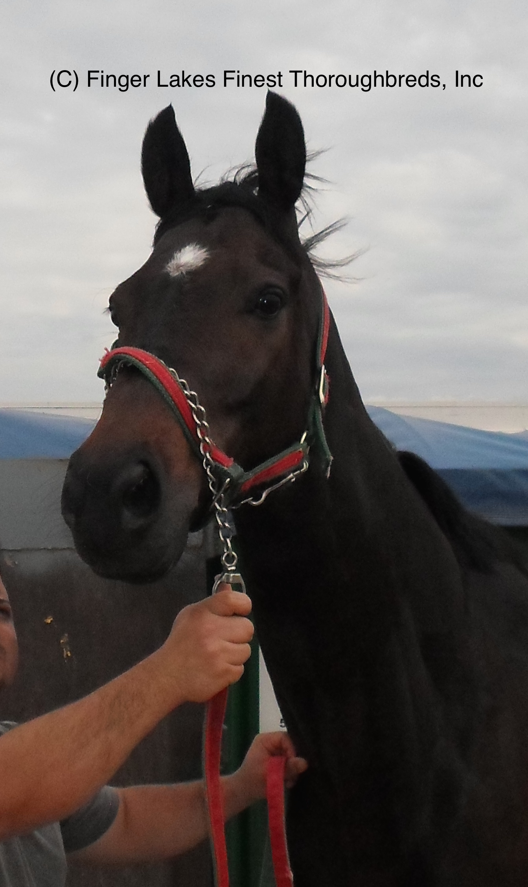
This well bred son of champion sire Aptitude was meant to be a good racehorse but he never got the memo! What he lacks in racing acumen he makes up for in balanced, correct conformation and stunning good looks. Look at that gorgeous shoulder and powerful engine, surely attributes that point him in the direction of sporting disciplines.
In 2014 alone, his 19 starts failed to produce a win and he is being retired from racing as a maiden, a sound one at that. His trainer states that he is sound, easy to work around and has no vices.
http://www.equibase.com/profiles/Results.cfm?type=Horse&refno=8886168®istry=T
Lovefindsaway, 2011, 16h, Dark Bay Colt: sold for racing
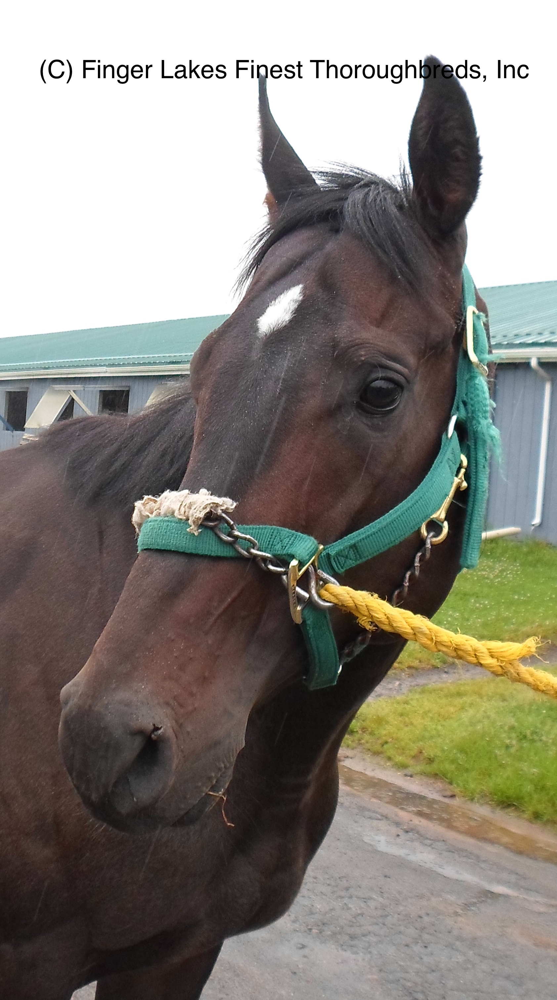
This classy young four year old dark bay colt has exceptional roaning that will make him stand out in the sport horse ranks! He has tried to be a race horse and has just not been fast enough, but is retiring with clean legs, no vices and a kind personality that will help him to make his way in any discipline. His trainer/owner reports that he is occasionally colt-like in his stall, but is kind and easy to handle outside. He showed nothing but impeccable manners for our volunteers today, despite drastically cold temperatures and rainy weather! This Kentucky bred by Giant's Causeway sold for $120,000 as a two year old! His great conformation has helped him maintain impeccable soundness-- he raced yesterday for the fifth time this month and jogged sound for our volunteers today. This durable young horse has the heart to find success in any discipline. His connections say that he is done racing and ready to move on to his next career today! Don't miss out on this neat young prospect!!
http://www.equibase.com/profiles/Results.cfm?type=Horse&refno=9149115®istry=T
$1500 negotiable. Contact Nairo 787-598-2769
As always, a pre-purchase veterinary exam is recommended.
Thatsatruestory, 2009 16.2+ chestnut gelding: Placed
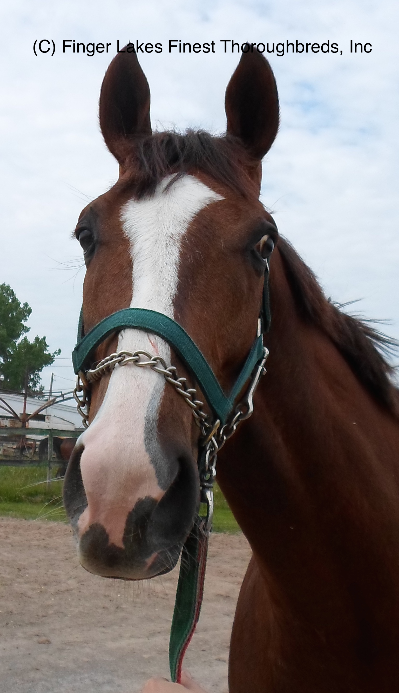
Prime Timber lovers, take a look at this oh-so-handsome boy. He doesn't have the PT distinctive head but he does have the attitude and brain that PT offspring have. He was patient and kind during his photo shoot and bore no ill-will because we took him away from his lunch! A solid 16.2+ fellow, True impressed us with his cool and quiet demeanor, kind eye and balanced conformation. With time and groceries we think he will be quite the elegant diamond in the rough, turning heads in the show ring or on the cross-country course. True sports a decent race record of 38 starts and hit the board in 14 of those starts. His trainer states that he is sound and we saw no evidence to the contrary.
http://www.equibase.com/profiles/Results.cfm?type=Horse&refno=8568966®istry=T
As always, a pre-purchase veterinary exam is recommended.
Sneakin the Gold 2006 16.3+h Bay Gelding: Placed
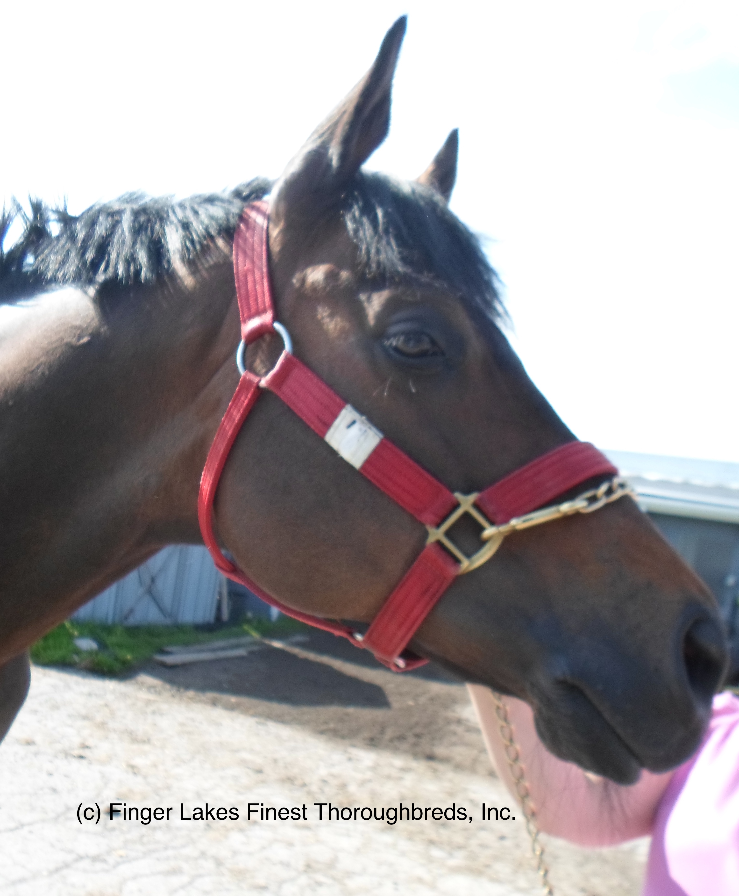
This big war horse is a long time barn favorite and a finding a good home for him is very important to his connections. With 33 starts, Sneakin the Gold has hit the board in over 50% of his races. He has earned over $129,000 in his career! He is sound with some ankle rounding. Still racing sound at 9 years old is a great indication of durability, big heart, and future soundness. We were really impressed with this guy’s gorgeous build. With his height and stocky build, he will easily fill up a taller rider’s leg. We loved his poofy mane and tail-he looked a bit like an oversized pony! Sneakin the Gold was incredibly well behaved while being groomed loose in his stall and during his photo shoot. He seemed to enjoy basking in the sun and showing off his good looks. He was very quiet during his jog video. His trainer states this is reflective of his normal behavior and that he is an all around good guy. She stated he does prefer to come in first from outside when he is done enjoying the walker. He has no stall vices. With his correct, uphill build, we could see him excelling in a H/J, dressage, or eventing career but with his laid back personality, he may also enjoy the life of leisure as a pleasure/trail mount.
http://www.equibase.com/profiles/Results.cfm?type=Horse&refno=7789870®istry=T
Price: $1,000 Contact: Jamie 585-943-4298
As always, a pre-purchase veterinary exam is recommended.
Dexter, 13 yo 15.2h paint QH gelding
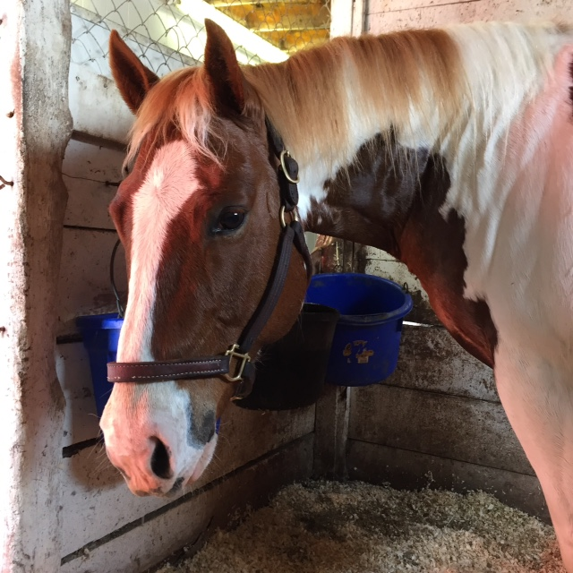
The adorable and kid friendly Dexter is an aspiring track pony, but his owner has not been able to get a stall for him at the track, which leaves her with insufficient time to ride him, and leaves him looking for a new job. But that can be your gain, since we know so many people covet beautiful paint steady- eddie type horses! Dexter's owner tells us he is a great trail horse, and was once used as a lesson horse, so he is an excellent children's horse prospect. She said he has no vices, is very kind and friendly (as you can see from the photos) and is kid safe. Her special needs son has ridden him and been taken care of. He is 15.2 h and WIDE bodied! Contact: Marianne Manning 585-491-2391 Price: $2500
Johnny's Galaxy, 2009 16h liver chestnut gelding
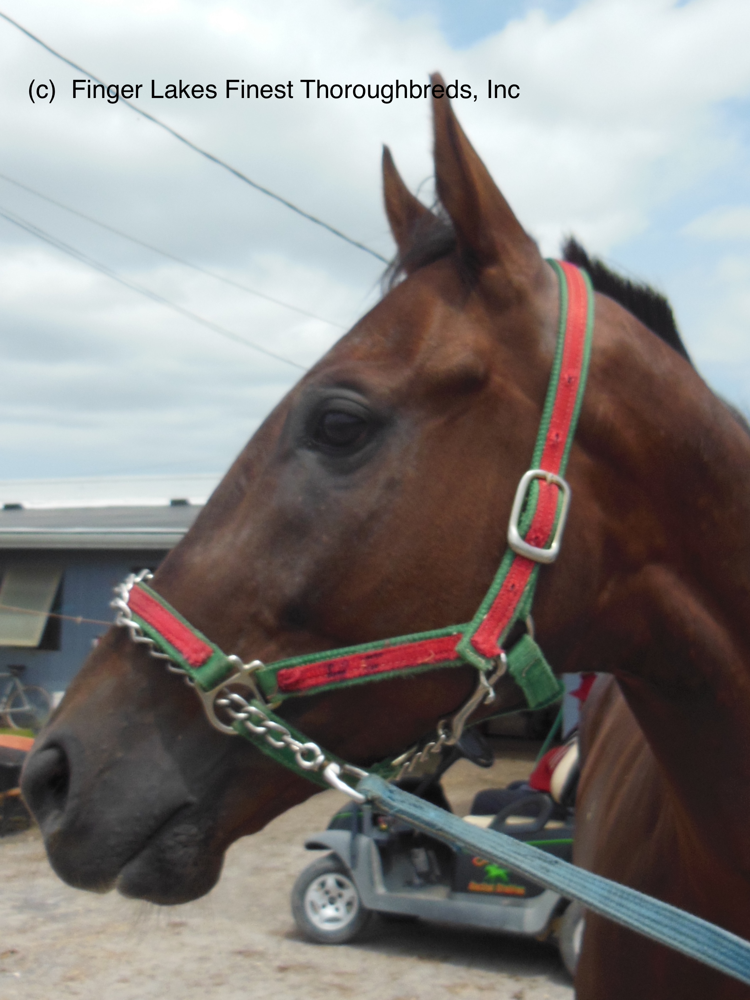
Our second true liver chestnut of the day was the capper after a very long, but fulfilling, morning of listing horses. Johnny is a lightly raced horse with 4 wins out of 14 starts on the track and getting that next win is going to be a challenge, so on he goes! This trainer states that Johnny is sound and he offers a warranty on it! He has very decent conformation with a short couple, which may make him desirable for barrels or western pleasure but he could go in any direction. He impressed us as being a general good egg with a winning, sweet personality and a kind eye. He also has a solid body and seems bigger than he looks when standing next to him.
Johnny's owner/trainer generally likes his listed horses to move quickly so don't dilly dally calling about this cute fellow.
Contact Jose Cabrera 315-521-3920
Price: $1500
http://www.equibase.com/profiles/Results.cfm?type=Horse&refno=6477415®istry=T
Woke Up Praying, 2008 16.3+ dk bay mare
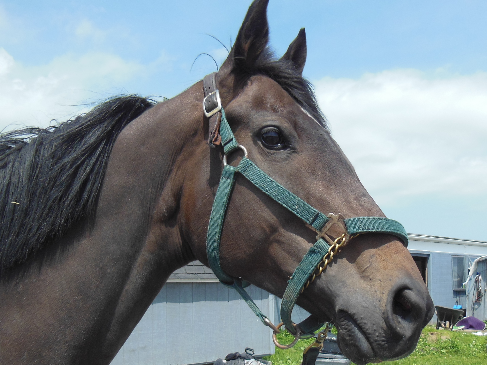
This lovely racemare's half owner recently passed away and the remaining partner is committed to giving her a well-deserved retirement from the track. Wow! What a nice mare by the Holy Bull son Woke Up Dreamin. She has size and she has presence and the heart of a true Thoroughbred. Out of 47 starts, she has hit the board 28 times, almost 60% of her races. That is a remarkable race record and despite lumpy knees she has remained sound. She is described as full of personality and spunk and we saw a bit of that but she was polite and composed for her jog videos and truly posed quietly for her pictures.
Her jog passes were a pleasant surprise, demonstrating lofty movement with great suspension, as well as balance. This mare also has exciting potential as a broodmare prospect with her solid sport horse pedigree.
Her owner/trainer will vet any potential homes.
http://www.equibase.com/profiles/Results.cfm?type=Horse&refno=8305719®istry=T
MISS LUX 2011 15.2-15.3 Gr/roan filly
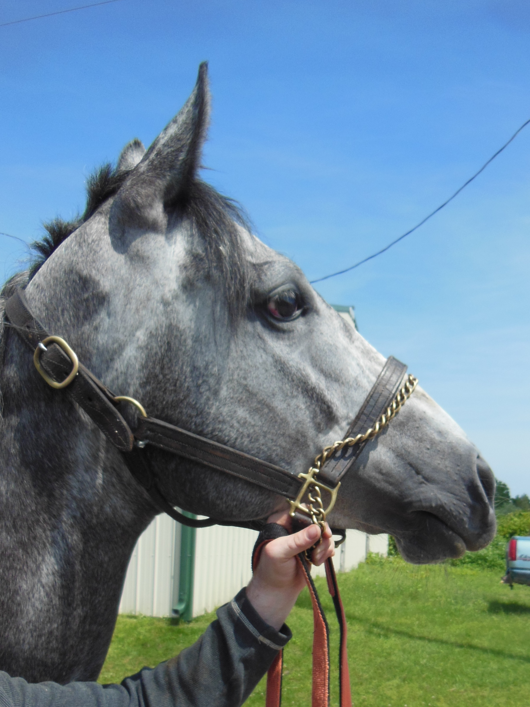
Luxy's owner/trainer introduced us to her by stating that he literally picked her out of a field and started working with her intending to get her to the races. He has put a lot of time into her and it is important to him that his pampered pet find a soft landing. As we stood her up for pictures she had her eye on the lush grass surrounding her and had other ideas about her time outside, but we did get some nice pictures of this very pretty youngster. She is quiet and sensible enough that the owner's young children can-and do-ride her. He also states that she is a fast learner and easily picks up everything that he has taught her, both as he broke her and brought her along on the track
She doesn't have a lot of height but she is quite solid bodied and will take up a lot of leg on taller riders and still has some growing to do. She is described as an easy keeper who enjoys her meals and easily maintains weight.
Contact Marisa Monserrate 315-719-9665 Price: $1000
http://www.equibase.com/profiles/Results.cfm?type=Horse&refno=9112937®istry=T
Polan, 2010 16.2 dark bay mare
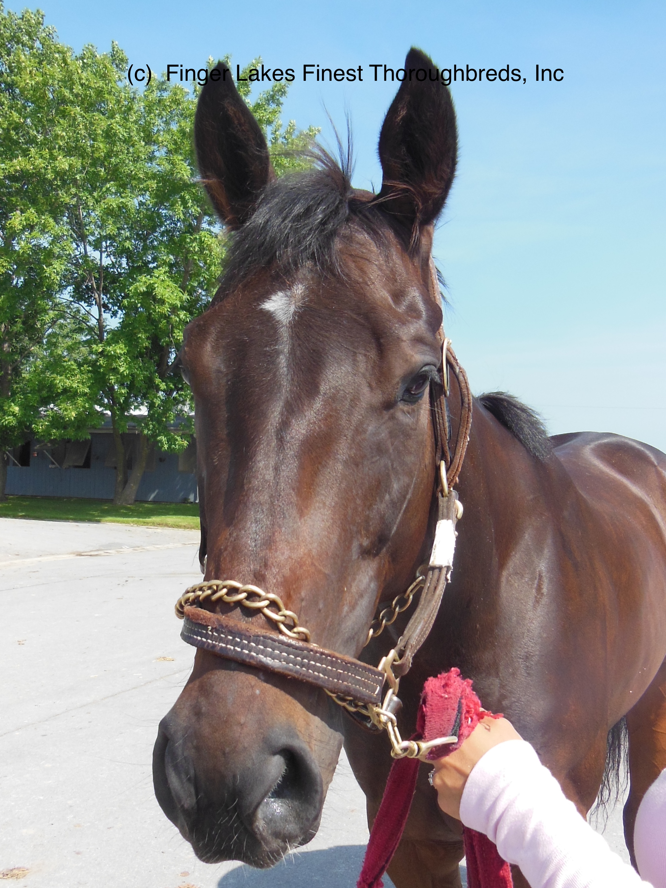
Polan is in the same shedrow with Crystal Market and we walked away from their photo shoot commenting what nice mares they are! Polan is described as being very sweet, quiet and sound. She even received an endorsement from one of the State vets who corroborated that she is a "really good girl". She has also run out of conditions but has racked up a respectable race record with 4 wins, 1 second and 2 thirds out of 19 starts.
She has correct conformation with a deep barrel and lovely, muscled hindquarters and muscular shoulders. At the jog she is balanced with nice cadence and suspension. Her trainer attests that she is ready to retire sound from racing.
Contact Adrianne D'Alessandro 585-2811810 Price: $2000
http://www.equibase.com/profiles/Results.cfm?type=Horse&refno=8860954®istry=T
Unnamed filly by Giant's Surprise, 2013 16.1h bay: retained by owner
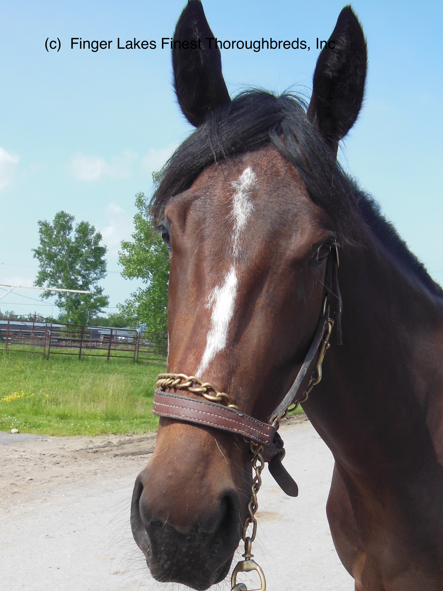
Give her a name and give her a chance!! This pretty bay filly has started her race training but is being stopped on because her trainer has decided it's best not to push her on the track. She has crooked front legs that, unfortunately, were not braced when she was a foal. Despite her angles, she has breezed 5 times, including 3 days prior, once going 3/8ths in 36.2, and has remained sound. She would best be directed to riding that is not too strenuous on her front legs and would hold up fine to trail and w/t/c light riding. The trainer would also like to consider her as a broodmare prospect, given her good pedigree and solid body and great shoulder. Her sire, Giant's Surprise, is a young son of champion sire Giant's Causeway, whose first foals are now 2 year olds. Her dam, Classy Concern, was a successful racemare who won at the allowance level on the top NY circuit, and earned over $250,000. This filly, although unnamed, is registered, and her papers will be available. Of note, her dam has excellent conformation, is not crooked and her younger brother is also correctly conformed and not crooked, so it is highly likely that her problem stems from how she was folded in the uterus. Other than that conformation flaw, she is a very nicely conformed filly with a pretty head and sweet eye. Her connections report that she is very quiet and loves attention and scritches. At the jog she demonstrates soundness and fluid, balanced movement. Recent x-rays of her ankles are available.
Contact Amber Cobb 518-316-0089 Price: $1500 OBO
Crystal Market, 2010 16.2h gray/roan mare
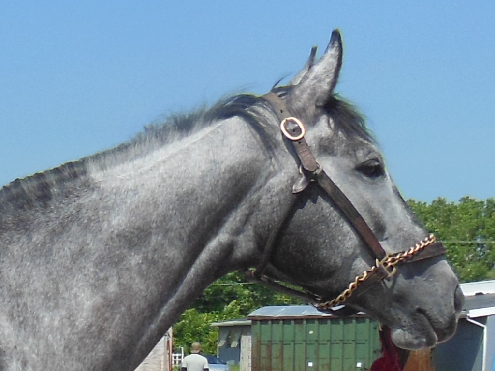
This was the day for pretty grays and pretty girls! Crystal Market is a big, classy mare who had raced the day prior but she has run out of conditions on the racetrack and her trainer knows that she has potential for great things beyond the track. Walking out of her stall we commented on her notable size and calm demeanor. She is described as sound and we witnessed soundness at the jog the day after racing. The trainer states that she is wonderful to work around and never puts a foot wrong. She was quiet and cooperative while posing for the camera. She has a deep chest, nice shoulder and powerful engine with very nice movement.
Her breeding will excite Holy Bull fans as well as her dam is by Holy Bull. Crystal Market is relatively lightly raced and accumulated 12 in the money finished out of 29 starts. With 5 wins, 2 seconds and 5 thirds, she has nothing left to prove here and is an exciting project for the right person.
Contact Adrianne D"Alessandro 585-281-1810
http://www.equibase.com/profiles/Results.cfm?type=Horse&refno=8898997®istry=T
As always, a pre-purchase veterinary exam is recommended.
Lemon Peel, 2008 16.2+ h dk bay gelding
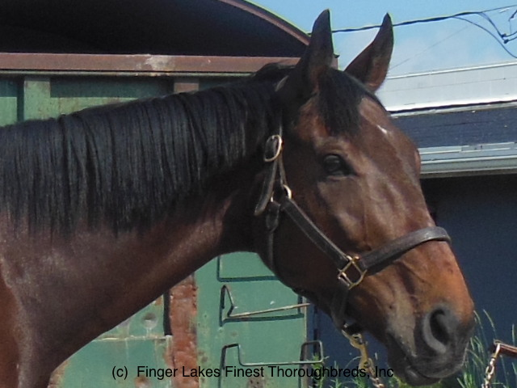
Lemon. Peel. Mr. Peel. This fella has many monikers, not all suitable for print, and he is a well loved boy whose connections are moving him on in a sound condition ready to excel in many sporting disciplines. Lemon had notable success on the track, and last year he was sent for retraining in jumping with an eventing trainer, who vouches that he can "jump anything", and that he likes jumping and is quite good at it. His track owner/trainer has such a bond with Lemon that she decided to try once again to race him this year, but he is showing no interest after tasting a new sweeter life! His interesting journey from racing and back to it is testimony that he is DONE on the track and ready to give eventing or H/J a serious go. Lemon is being retired sound and won't require much, if any, letdown, and with the retraining he already has under his girth, you could start showing him this season. He was turned out all winter and he is a horse who thrives on a routine and loves to train. A powerful horse to be sure, he is excellent to gallop and likes to have his head without being silly. He knows his job and does it well but would prefer to train and skip the races altogether. This solid bodied guy has a powerful engine, big, sculpted shoulder and clean legs that have held up well to racing. He also has a big personality and requires an experienced handler although his video demonstrates that he is easily handled with a shank hooked under his chin.
Contact Megan for details about his retraining.
Contact Megan Lucas 585-766-4380
Price: $4500
Jog video at track:
Jumping video:
Lupicaia 2011 15.3 h liver chestnut filly: Now at FLTAP
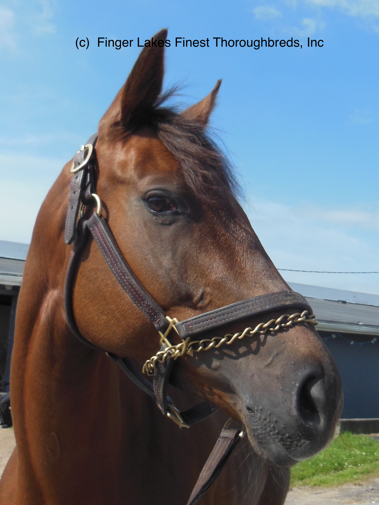
Update: As of July 27, 2015, Lupicaia has been moved into the Finger Lakes TB Adoption Program's Purple Haze Center, located on the grounds of the Finger Lakes Race Track in Farmington, NY. She is available for adoption through FLTAP to approved homes with references, and under the FLTAP adoption contract.
Affectionately named Lucy by her doting trainer, this very pretty, well balanced and still growing girl has earned a slew of superlatives from her owner/trainer with the notable exception of "great racehorse"! She has endorsements from her riders as a wonderful horse to gallop with easy lead changes and a willingness to please. She is a classic morning glory with great morning training success which doesn't transition to racing. After tweaking equipment, riders and raceday routine, Lucy"s trainer has decided that she is better suited to other disciplines.
In the morning sun Lucy was quiet and sweet. She loves attention from people in her barn and was noted to be an agreeable filly, just an all-around good egg. She has a very nice shoulder and clean, sound legs and a gleaming, true liver chestnut coat.
She turns out well with others and is very happy hanging out with the herd at the trainer's farm.
Lucy is by the exciting sport sire Raffie's Majesty out of a Fusaichi Pegasus mare and we can see her succeeding in just about any discipline.
Contact FLTAP at (585)924-9510 or (585)905-7457 or by email at fltapjulie@yahoo.com
Backstreet Blues, 2010 16 h chestnut colt
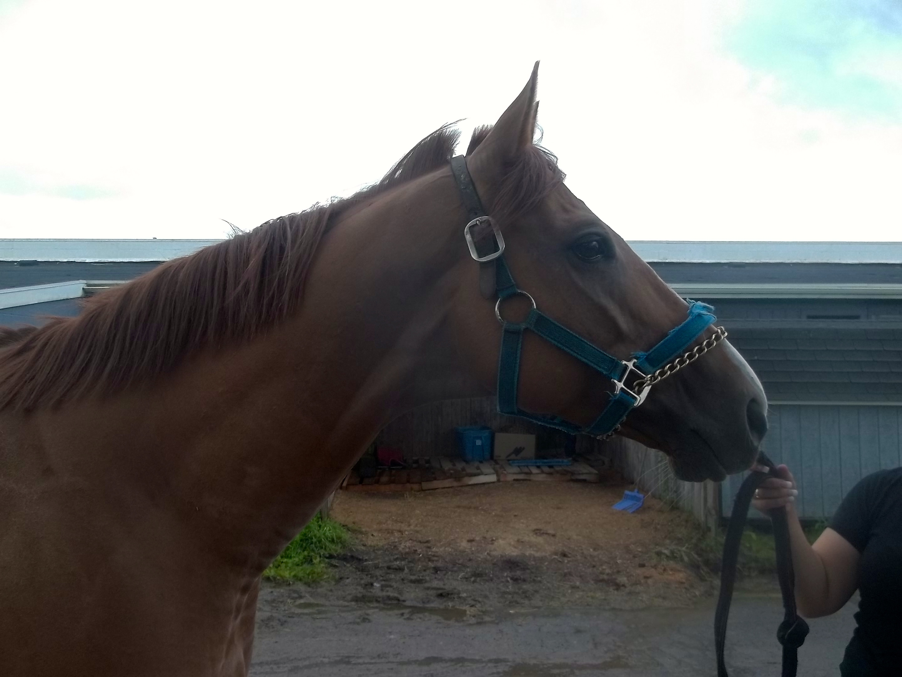
What a handsome, impressively solid bodied guy here! If you like TBs in QHs bodies, this guy is for you. He has a balanced strong boned body, with a nice strong sloping shoulder. Geld him, and you will have a great prospect for many new disciplines, from eventing, H/J, to barrels and western. Backstreet Blues has had only three starts, and his trainer says he just does not want to be a racehorse. She says he is sound, but too slow to be successful on the track. His trainer says he is good to handle, has no vices, is not at all studdish, although he does get vocal at feeding time, and as one can see, is an easy keeper. He has very good breeding for sport/jumping disciplines, as he is by AP Indy's son Golden Missile, out of a mare by Two Punch whose damsire is Dixieland Band... lines whose offspring are much coveted by eventers. Race record and pedigree: http://www.equibase.com/profiles/Results.cfm?type=Horse&refno=9048941®istry=T
As always, a pre-purchase veterinary exam is recommended.
Shelly's Cider, 2010 16h chestnut mare
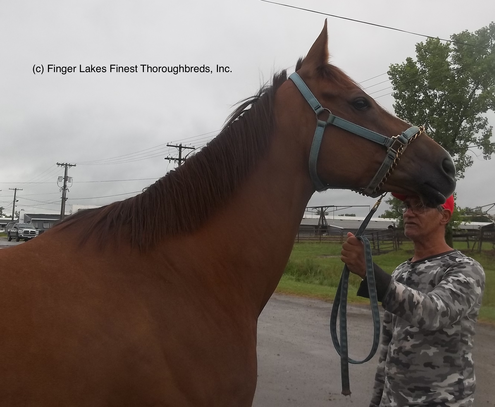
We were struck by this pretty mare's alert intelligent expression, and her striking unusual blaze. Shelly is a home bred who has been with her connections since she was born, and she has been a good race horse for them, placing in multiple state bred stakes races in Massachusetts at Suffolk Downs. There are few racing conditions for which she is eligible at Finger Lakes, and her owner/trainer is planning on going back to graduate school, so he would like to find a great new non-racing home for Shelly while she is still sound and with so much potential for new careers. He describes her as very easy to work with, and all around good girl. We admired her nice uphill build and strong shoulder, which speak of great potential for jumping and sport disciplines. When she jogged for her video, we were impressed by her very nice toe flicking movement. Then when we saw that she is a daughter of Stonesider, who is by Giant's Causeway, we could see why she is such a nice mover... every Stonesider offspring we have seen has been a great mover, and those we have placed are all quickly excelling in new careers including eventing, dressage, and hunter/jumper. This is a quality young mare with great potential, sound and clean legged, at a bargain price! Contact: Alan Lockhart 508-415-9022 Price: $1000 negotiable to a very good home
Race record and pedigree: http://www.equibase.com/profiles/Results.cfm?type=Horse&refno=8881612®istry=T
Trot video:
Walk video:
As always, a pre-purchase veterinary exam is recommended.
Incarcerated, 2012 16.2+h bay gelding
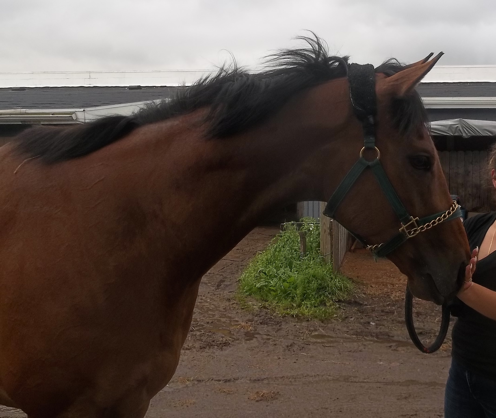
Set me free from the track and let my talent for another discipline blossom says this handsome big hunk of loveable young horse! After only two races and a some very slow workouts, it is obvious that racing is not where Incarcerated's talent lies. But this can be your gain, because we think that in light of his great solid bone, sound and clean legs, good balanced build, great movement with suspension, the sky's the limit for eventing, H/J or dressage. He is a still growing young boy, and he is likely to top out at over 16.3h. His trainer says he is a big baby with a lover boy personality... as you can see from the pictures where they are nose to nose. She says that because he is young, big, and still a bit pushy in an immature way, he needs an experienced horse person and rider to bring out his full potential. His legs are very clean, and he has a big strong looking foot -- what they call a "turf foot" in racing, which bodes well for relishing cross country courses. When Incarcerated jogged for his video, we were very impressed with his balance, suspension, cadence, and toe pointing reach. He seems light on his feet for such a big young horse, which bodes well for his overall balance. Better call fast on this boy; he is what everyone says they want -- a young, sound, big, nice moving gelding with a great personality and unlimited potential for sport disciplines. Contact: Adrianne D'Alessandro 585-281-1810 Price: $3,000
Race Record and Pedigree: http://www.equibase.com/profiles/Results.cfm?type=Horse&refno=9307103®istry=T
As always, a pre-purchase veterinary exam is recommended.
Buck's Wink, 2007 16h+ bay gelding
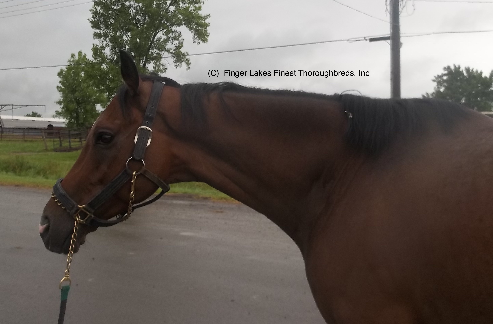
For those who love the durable, wise, big hearted, hard-trying war horses, Buck's Wink is for you. This much loved homebred boy is described by his trainer as "the sweetest horse in the barn." He loves treats, loves hanging out with people and getting attention, and is so well mannered that his trainer states he could be a kid's horse. We loved his friendly kind-eyed pretty face, and we got to see his great personality for ourselves, as he wanted to stay outside just hanging out with us after his photo session. He also kindly waited and jogged ever so politely and slowly when his groom, who had an injured leg, tried to jog him, showing how attuned he is to people. His trainer then took over the lead shank so we could see him trot out, and he kindly complied with that request as well. Buck has been a good consistent race horse, with ten wins and 50% on the board in his career. He has an old set bow, but has raced on it and stayed sound. We can see Buck enjoying many new disciplines, from trails and pleasure riding to hunter paces and lower level eventing.... but primarily we can see Buck enjoying having a doting new person bearing treats and pats in his life. Buck has been with the Lockharts since he was a baby, so only the very best of homes will do for this special horse. Price: $1,000 negotiable Contact: Alan Lockhart 508-415-9022
Race Record and pedigree: http://www.equibase.com/profiles/Results.cfm?type=Horse&refno=8080948®istry=T
As always, a pre-purchase veterinary exam is recommended.
Ocala Princess, 2012 16h dark bay filly
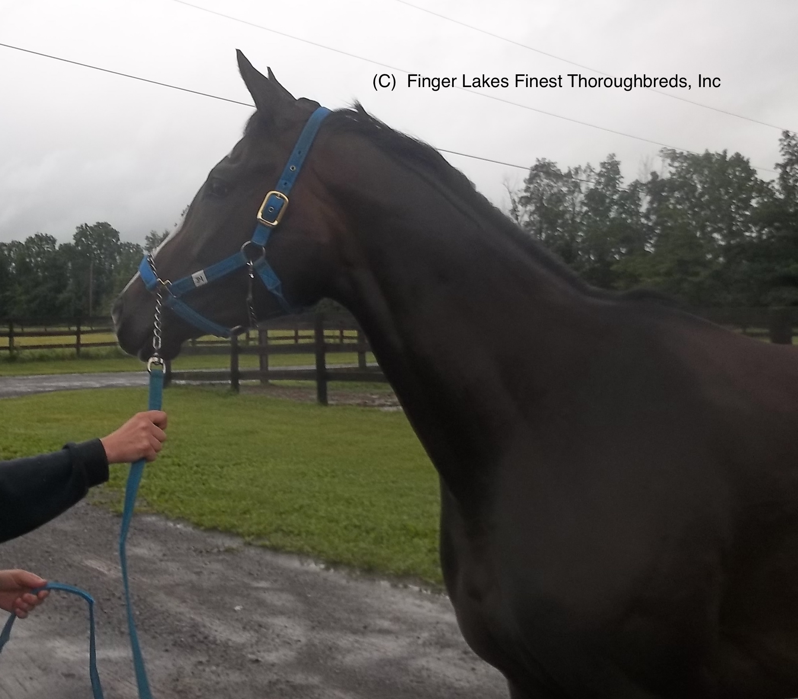
Update July 31, 2015: She has been taken in by an FLF volunteer who will now be the contact person for finding the perfect forever home for Ocala Princess. The filly is now located at a farm in Newark NY, not far from the Finger Lakes Race Track.
And what a pretty princess she is indeed! This striking dark beauty with a big blaze is lightly raced and sound, and letting her connections know that she just doesn't want to be a racehorse. With her lovely balanced and uphill build, strong sloping shoulder, and lofty movement, we can see her excelling in the show hunter ring or dressage arena. Since she is only three, she is likely to grow some more, and may well top out at 16.1 to 16.2h. We thought she was quite beautiful now, but imagine how stunning she will be when filled out and with new muscling. Our admiration of her good looks turned to true excitement at her sport potential when we watched her jog for her video. Wow, what a lovely mover... lofty, light suspension and cadence, with a toe flicking trot. The assistant trainer who showed her to us remarked that when others have seen her moving on the track in the morning, Ocala Princess has drawn many compliments for what a nice mover she is. This beautiful young filly with no wear and tear on her presents a rare opportunity to get a horse with huge star potential for another discipline. She is a granddaughter of Pulpit, who is a son of AP Indy, and her dam is from the Danzig line, from one of the famous Darby Dan Farm's best female families. Contact: Margie Linn 315-719-8739 Price: $2500 References will be required
Race Record and pedigree: http://www.equibase.com/profiles/Results.cfm?type=Horse&refno=9343432®istry=T
As always, a pre-purchase veterinary exam is recommended.
Time to Harlem, 2012 15.3h gray/roan filly
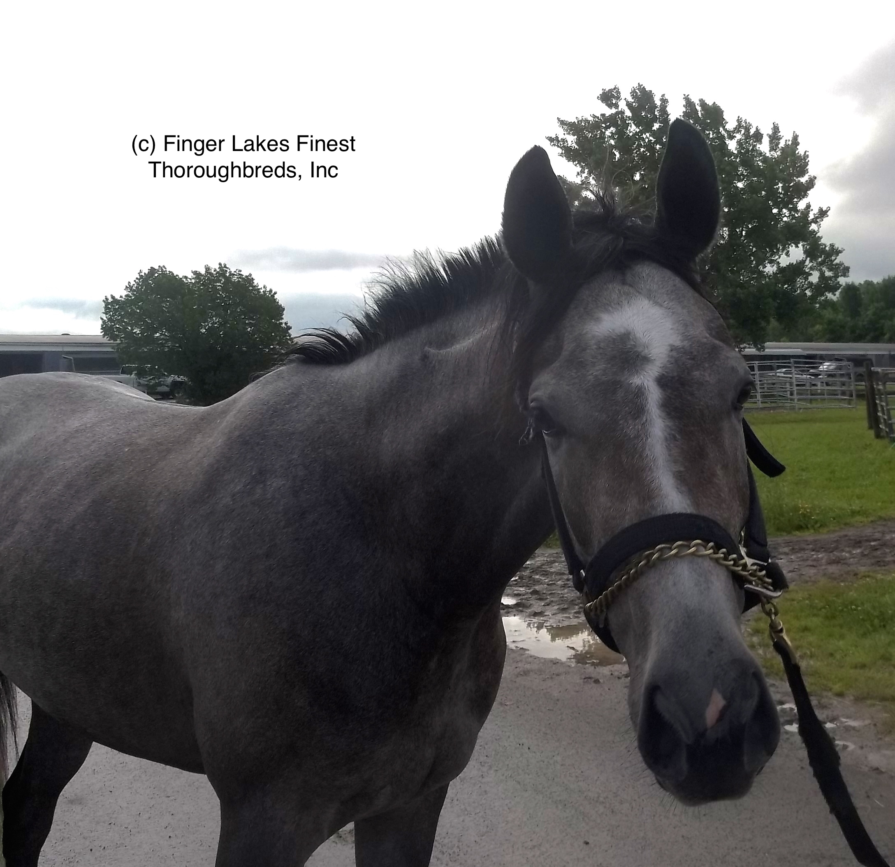
What a pretty, well balanced, and sweet gray girl! Even though young and still growing, she has a balanced uphill build, and she is a lovely light mover with a flowing stride. She is lightly raced, sound and clean legged. She is just not showing enough racing ability to continue with her, especially given her potential for other disciplines. Her trainer also broke her as a youngster, and says she is very nice to ride, well behaved, no vices, personable, and a lover who wants to be in your pocket. She says this filly is very agile, quick and light on her feet, so she thinks she might make an excellent polo horse. But those traits, and her nice movement, can also translate well into the hunter ring, or to eventing and dressage. She is by Harlem Rocker, who is a son of Macho Uno, who in turn is by Holy Bull... this is a sire line well known for producing great jumping horses with great brains and good movement. So much potential in this pretty young girl, so you had better call fast if you are seriously interested! Contact Amber Cobb 518-316-0089 Price: $3,000 negotiable
Race Record and pedigree: http://www.equibase.com/profiles/Results.cfm?type=Horse&refno=9597354®istry=T
As always, a pre-purchase veterinary exam is recommended.
Linesman, 2011 16h chestnut gelding
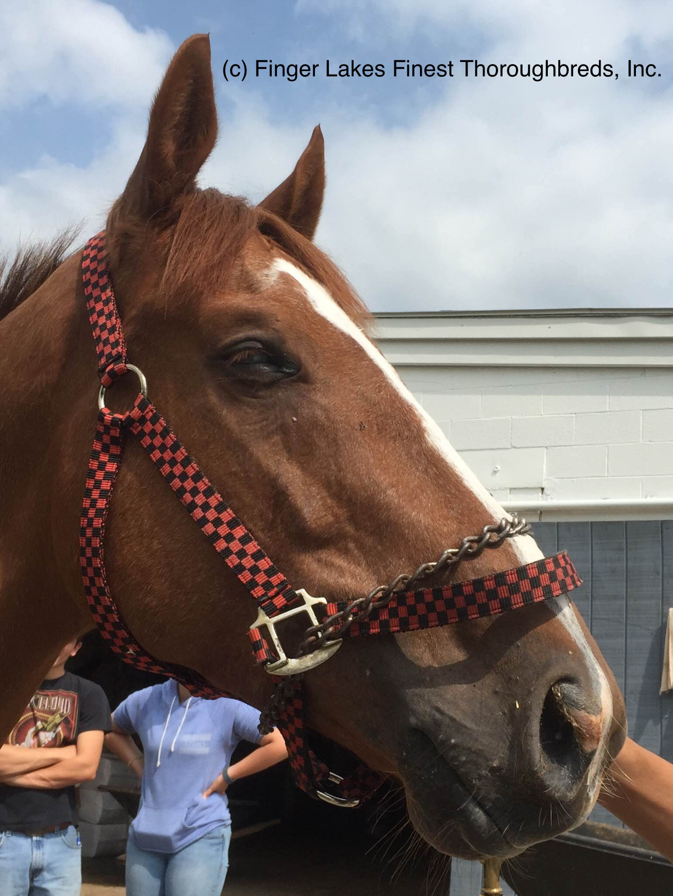
This now four year old makes his way back to our listings this year after being sold for additional racing last year. If you're looking for a diamond in the rough-- here is your superstar in the making. Linesman is a gentle, kind, honest, calm, old soul-type young thoroughbred whose lineage may say racing, but his personality says children's horse or amateur pleasure horse. He came back from his last race on June 29th with a dirt clod in his eye that has since become inflamed. His connections have been providing treatment, but this complication combined with his low aptitude for racing have lead them to make the decision to let him retire from racing and find his true calling. With a little TLC, this nice young horse will shine like a new copper penny! Take the chance today and make him your next adventure!
Asking $500 negotiable
Contact Sugar 585-412-3678
http://www.equibase.com/profiles/Results.cfm?type=Horse&refno=9088811®istry=T
As always, a pre-purchase veterinary exam is recommended.
Zio Stephan, 2010 15.3 Bay Gelding
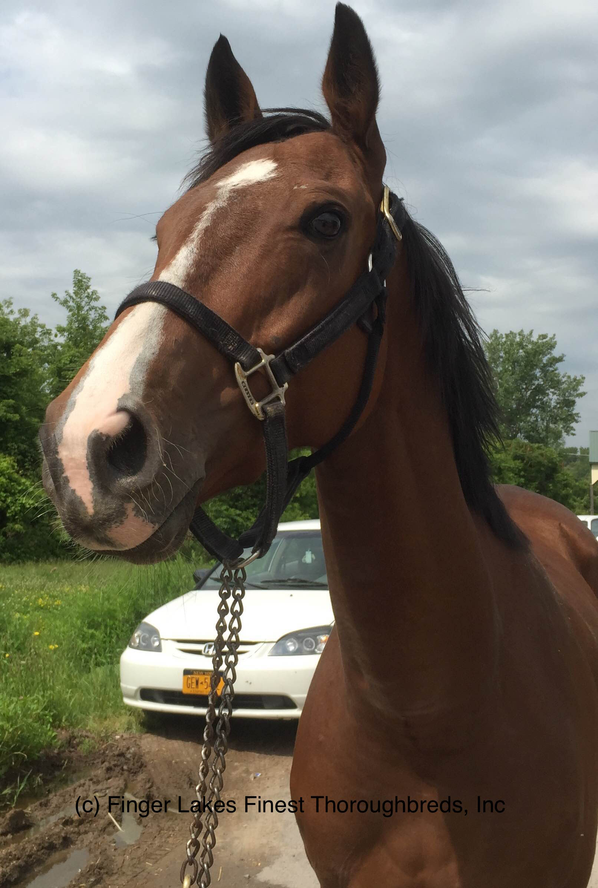
Looking for an eye-catching bay gelding with just enough white to make him stand out in a crowd? Here is your guy! This nicely built gelding had a knee injury last season and while his owners worked to rehab him this winter, they have decided not to pursue further race training. He jogged sound for our volunteers today and he is barefoot-- his shoes were pulled for the winter and he has not shown that needed them back! According to his connections, he is well mannered with no vices or stall habits, but will benefit from some turnout and letdown time, as he is much more content on the farm as opposed to the hectic environment of the track. A good home for this kind fellow is a must!
Asking $500, negotiable
Race record and pedigree: http://www.equibase.com/profiles/Results.cfm?type=Horse&refno=8884143®istry=T
Contact Sugar 585-412-3678
As always, a pre-purchase veterinary exam is recommended.
Miss Katts, 2011 16.+h dk b (black) filly
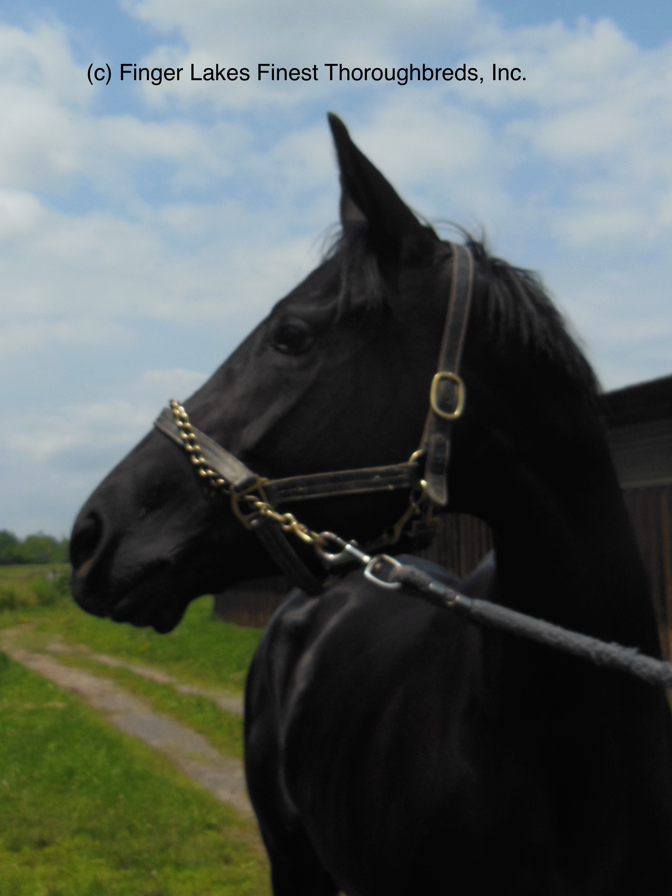
What a black beauty! Her freshly washed coat gleamed in the sun as Miss Katts posed for us. The trainer's daughter reports that Miss Katts is a sweet loveable girl, very well behaved both on the track and off, and that she is sound with no vices. She says the filly is just letting them know that she is not interested in racing anymore, but that's your gain since we see so much potential for many disciplines in this lovely young horse. With her uphill build, good shoulder, and nice suspension and reach at the trot, we can see her excelling in eventing or in H/J ring. She also has a good pedigree for sport disciplines, since she is a granddaughter of Devil His Due. Miss Katts is at a farm very close to the Finger Lakes Race Track, where she has also spent the last two winters, and the farm owner also raved about what a nice horse, lovely to work with, Miss Katts is. We got to see her good nature for ourselves, since as we asked her to pose, the horse flies were tormenting her, two young horses turned out next to here were romping, and two kids on a noisy 4 wheeler ATV were playing nearby. But Miss Katts took it all in stride, and did her best to stand for photos and jog quietly for her video. Better call quickly on this girl -- young, pretty, nice moving, flashy blacks with white markings at bargain prices go fast! Price: $800 negotiable Contact: Jamie Schubert 585-943-4298
Race Record and pedigree: http://www.equibase.com/profiles/Results.cfm?type=Horse&refno=9160856®istry=T
Sirtori, 2009, 16.1 Chestnut Gelding: sold for racing
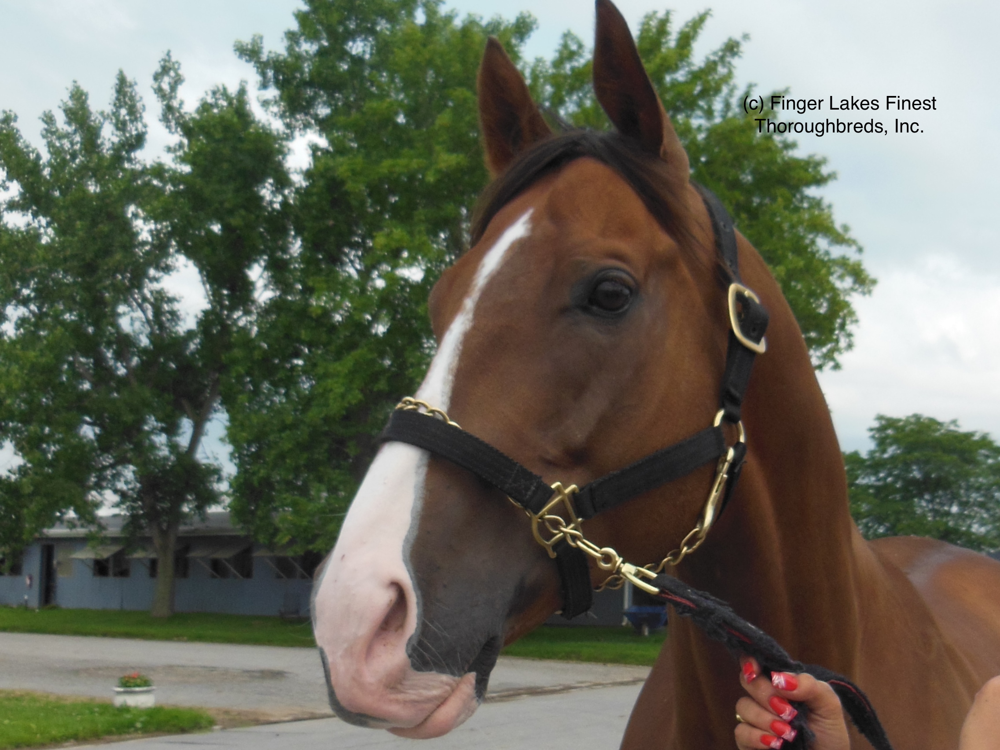
This well mannered adorable gelding has a big solid build that is sure to impress in any discipline!! He has a striking face with his big blaze and white and kind eye. His impeccable manners complement this boy's nice conformation that will help him to find success after the racetrack. Although he has an old osselet that is visible in the pictures, he has raced on it for several years with no issues and is retiring sound. He is described by his connections as quiet, friendly and easy with no vices. He showed very nice balanced movement for his jog video.
Asking $3,000
Contact Adrianne D'Alessandro 585-281-1810
Race record and pedigree: http://www.equibase.com/profiles/Results.cfm?type=Horse&refno=8695628®istry=T
As always, a pre-purchase veterinary exam is recommended.
Victoria Victoria, 2008 15.3h+ Chestnut Mare
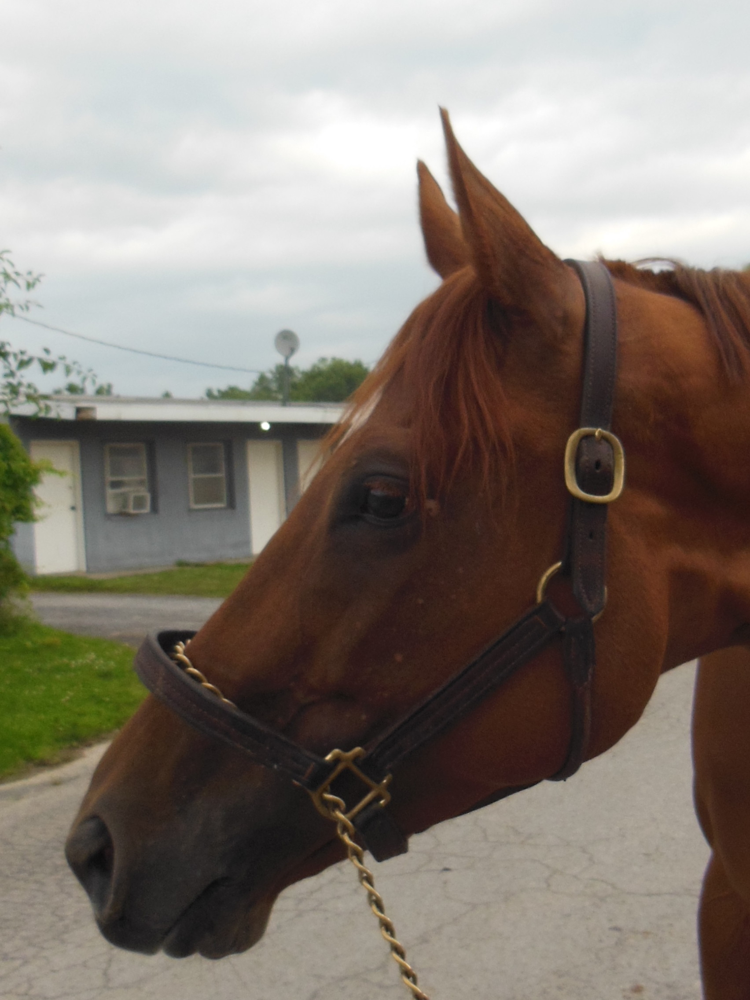
Looking for a sweetheart of a horse who is just looking for her next career? Look no further!! This mare holds a very special place in the hearts of her connections on the backside. She has been with her current trainer long enough to have a very special bond with her. Vicky is sound with no vices and a very sweet personality. She visited quietly and kindly with our volunteers and her trainer believes that she could make a fantastic children's mount for the hunter ring. We saw athleticism that could help her to be successful in any discipline! She has a good pedigree for sport, or as a sport horse broodmare. She is by Belmont winner Victory Gallop, who is a Fappiano grandson, and she is out of a mare by Belong to Me, who is a son of Danzig. Halo, Hail to Reason, Dr. Fager, Northern Dancer are other prominent names in her pedigree.This lovely little mare is ready to go any direction you may choose!! A good home is an absolute must-- references will be checked!!
$2000 or best offer.
http://www.equibase.com/profiles/Results.cfm?type=Horse&refno=8390589®istry=T
Contact Judy Turetsky 315-415-3550
As always, a veterinary pre-purchase exam is recommended.
Hellcat, 2010 16+h dark bay mare: sold for racing
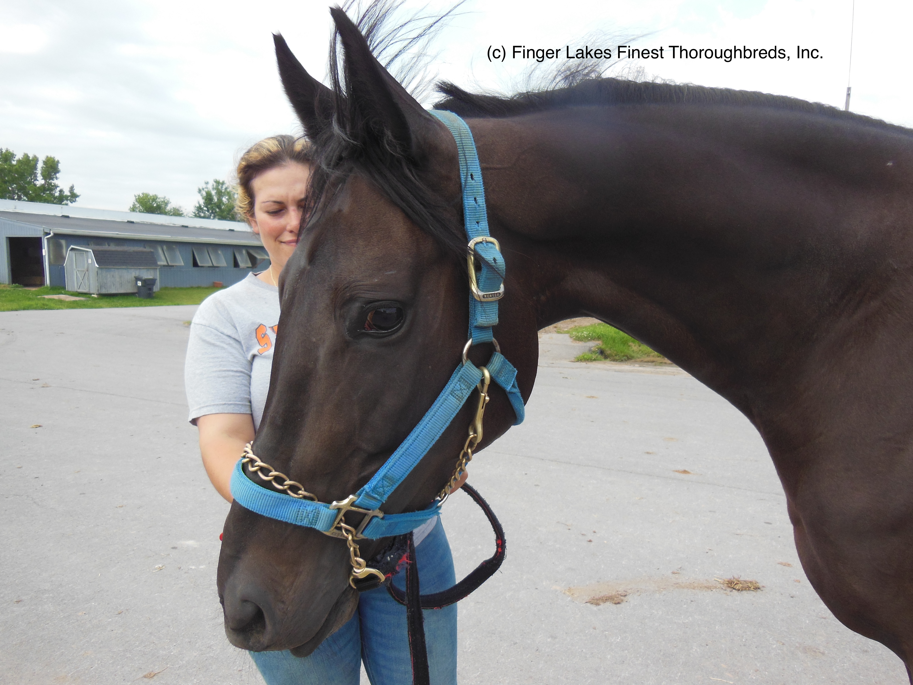
Don't let her name fool you-- there is not an ounce of hellion in this beautiful young mare. This clean legged, sound and well balanced mare has been a good race horse, with 5 wins in 21 starts. Her trainer says she could keep racing, but her owner needs to cut back, so that will be the gain of someone looking for an athlete who can excel in many new careers! She has balanced conformatoin, clean legs, and her solid body will take up plenty of leg but her feminine head will draw the crowd's attention in the show ring. Her dark coat is dappled with good health, although the cloudy day did not show them off. Hellcat was friendly, cuddled with her trainer, and was beautifully behaved for her photo session and jog video. She showed off lovely movement. Her trainer states that she settles right in at the farm and enjoys the laid back atmosphere as opposed to the hectic environment of the track. She has no vices, a beautiful flowing gait and is ready to start her new career!!
Price: $3,000
Contact: Adrianne D'Alessandro
Race record and pedigree: http://www.equibase.com/profiles/Results.cfm?type=Horse&refno=8915951®istry=T
Rockstar Mia, 5 yo 16+h chestnut gelding
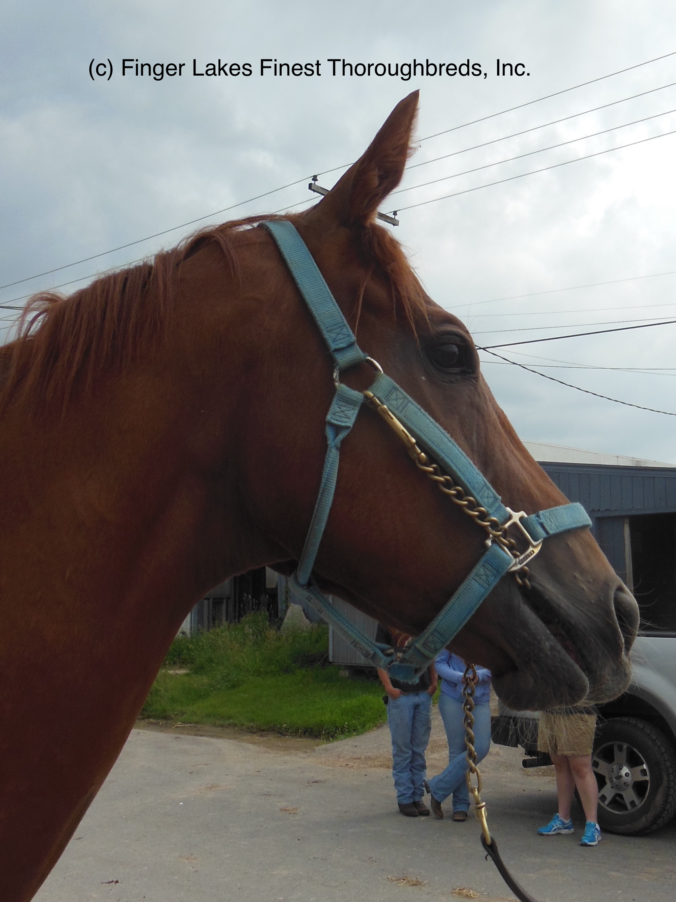
This handsome young gelding is by Grand Slam, whose offspring are known for having great brains and temperaments, and many are succeeding as eventers or H/Js. He is described as a sweet horse with a puppy dog personality, and a treat lover. He is described as sound with no vices. We did observe old ankle rounding. He showed very nice movement for his jog video. This kind guy has potential for many disciplines! Price: $1500 negotiable. Contact: Alex Hillegass 484-896-8754
As always, a pre-purchase veterinary exam is recommended.
Allertata, 2012, 15.3 bay filly
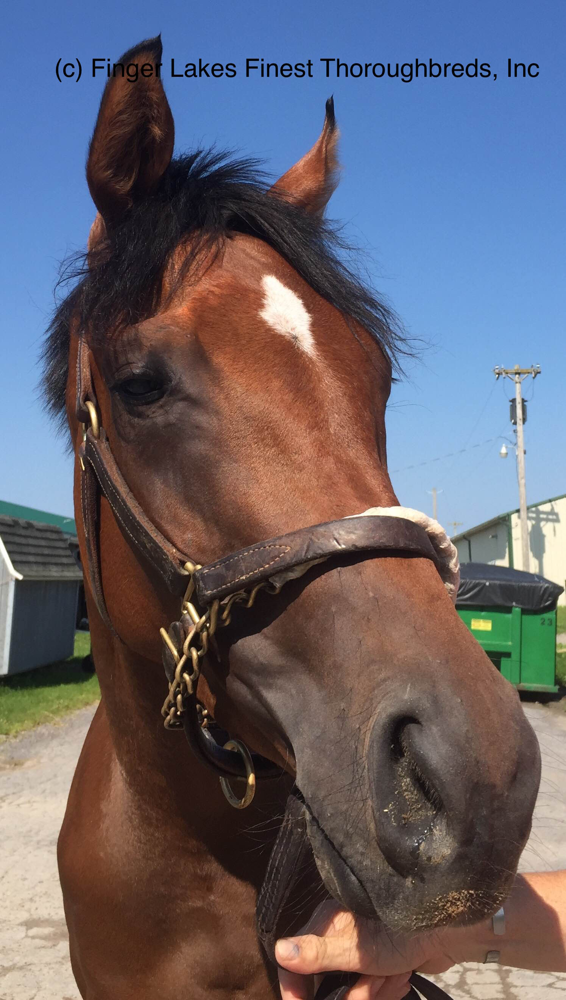
This cute filly came to her current connections over the winter in need of a few more pounds. Her current trainer has worked hard to improve her weight and overall “shine”. She reports Allercata has made significant improvements but feels she has a bit more to go. Allercata is described as very sound, but in only 8 starts, she has proven that she has no interest in racing. We think her heart is in a different discipline! It is reported that Allertata has no vices. Her trainer states she can make some mean faces in her stall and has her occasional 3 year old green moments, but she is overall a sweetheart who will make someone a great partner in her second career. We saw tight, clean legs and a beautiful coat. Her beautiful build will be even more obvious with a few extra pounds. Her trainer reports that Allertata enjoys time at the farm and is well behaved in turnout. She was even popped over a few cavalettis this winter! Even after racing yesterday, she showed a nice jog without any indication of soreness which is common post race. Three year old horses are highly sought after on our listings, so call quickly if you are looking for a well built, sound, and young filly.
http://www.equibase.com/profiles/Results.cfm?type=Horse&refno=9402792®istry=T
Asking $2500 Negotiable Contact Molly Hilderbrandt 585-259-6351
As always, a pre-purchase veterinary exam is recommended.
As always, a pre-purchase veterinary exam is recommended.
Millions in Motion, 2009, 15.3 Bay Mare
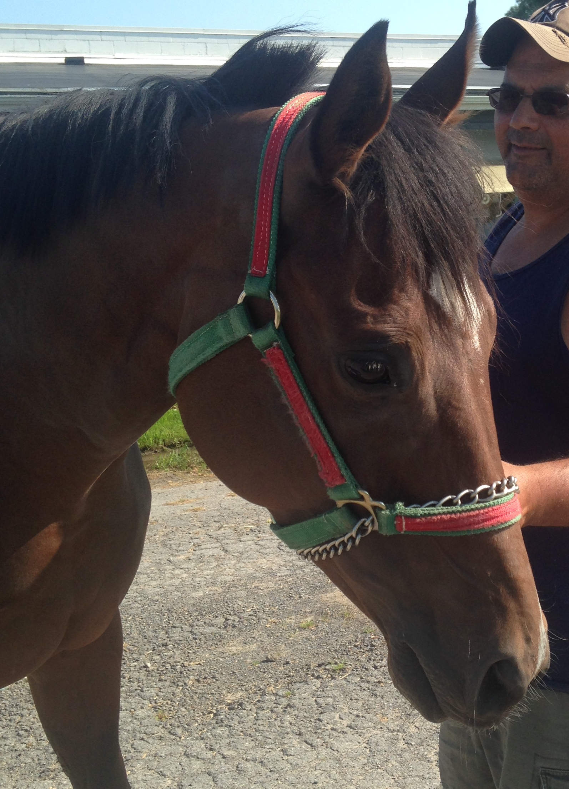
This adorable mare has a beautiful fine stature that could make her an outstanding sport horse prospect or even a wonderful mount for the polo field. She is retiring sound, after earning over $70,000 on the track, with no vices, clean legs and a keen look about her that will draw attention in any venue! She is reported by her connections to be sweet, easy to handle and a love. She has been with her current trainer for three years and he is anxious to find her a home where she will be loved. Millions in Motion had impeccable behavior during our meet and greet and seemed to enjoy basking in the sun and nibbling some grass after we were done. Millions in Motion is by Hook and Ladder who is known for producing successful sport horses with good brains and outstanding personalities. We loved her cute dishy face and good sense despite the hustle and bustle around her. This mare is a bargain and horses go quickly in this price range. We suggest calling quickly if you think Millions in Motion is the next horse of your dreams!
http://www.equibase.com/profiles/Results.cfm?type=Horse&refno=8558717®istry=T Asking $800 Contact Jose Cabrera 315 521 3920
As always, a pre-purchase veterinary exam is recommended.
Nothing But Power, 2008 16.3-17h bay gelding
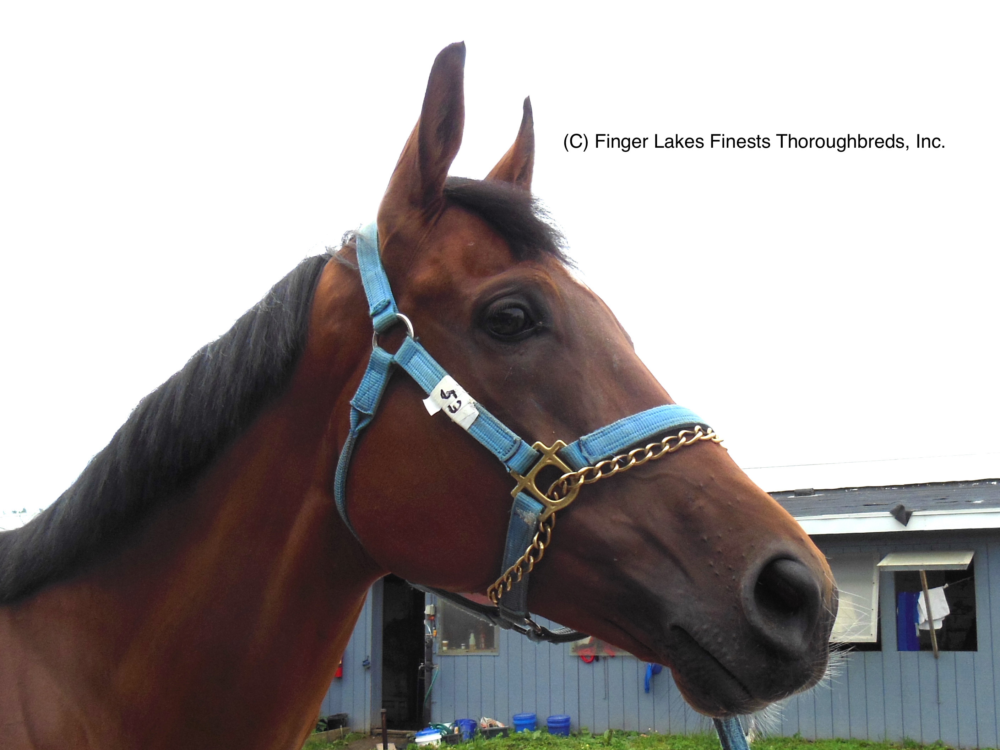
If you are looking for big, gorgeous, uphill build, solid bone, and beautiful movement, then pick up the phone... this stunning horse will not last long! Nothing But Power has been a good consistent race horse, with 7 wins in 27 starts, a long distance runner with lots of stamina, which bodes well for sporting disciplines. At the end of the racing season last year, he developed a slight strain in a tendon, so his trainer wants to move him on to a new career while he is sound. The tendon, which never bowed, has been fully rehabbed, and we felt his legs and can report that they were cold and tight. He is described as sound and ready to go in any discipline without known limitations. When he jogged for his video, we saw floaty, light balanced movement, with suspension, cadence, and a toe pointing reach. This suggests he could excel as a show hunter or in dressage. He is described as quiet, very good to handle, with no vices or bad habits... an all around great horse. He was certainly a perfect gentleman for his photo session, and he was alert and friendly. We admired his beautiful sculpted head and kind intelligent eye, as well as his great shoulder. He is so well balanced that one does not realize how big he is until you stand right next to him. His pedigree is excellent for sport, as he is from the Gone West sire line, with Danzig, Deputy Minister, and Secretariat in the third generation. Price: $3500 negotiable Contact: Tammi Lord 585-337-8661 Race Record: http://www.equibase.com/profiles/Results.cfm?type=Horse&refno=8447216®istry=T Pedigree: http://www.pedigreequery.com/nothing+but+power
As always, a pre-purchase veterinary exam is recommended.
White Legend, 2011 16h gray filly: Placed!!!
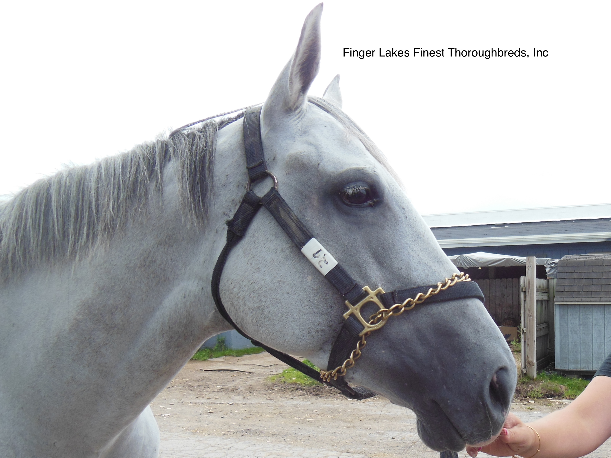
Gorgeous gray alert! This solid bodied filly sure looks ready to step right into the show ring. White Legend has been a very good racehorse, winning at the allowance level and competing well ins some stakes races. But she developed a bone spur in a knee, so her trainer wants to find her a new career. The knee has been x-rayed and evaluated by a vet, and we were informed that the joint is fine, and that White Legend will be fine for any discipline that does not involve quick acceleration and high speed, such as racing, barrels, and polo. Jumping, show hunter, dressage, lesson program, pleasure riding are all possible outlets for her. Surgical removal of the spur is also possible, which would open up any discipline without limitations after full recovery time. The lovely filly is described as very quiet and sweet, so kind to handle she is suitable for kids. She showed a well balanced toe pointing trot for her jog video. White Legend showed enough speed to sell for $75,000 as a two year old, and her pedigree also makes her suitable for race or sport breeding. She is by AP Indy's son Indygo Shiner, and her second dam is a stakes winner and stakes producer. Price: $500 Contact: Tammi Lord 585-337-8661 Race Record: http://www.equibase.com/profiles/Results.cfm?type=Horse&refno=9066487®istry=T Pedigree: http://www.pedigreequery.com/white+legend2
As always, a pre-purchase veterinary exam is recommended.
Williston Drive, 2011 15.3h bay filly: New Price!
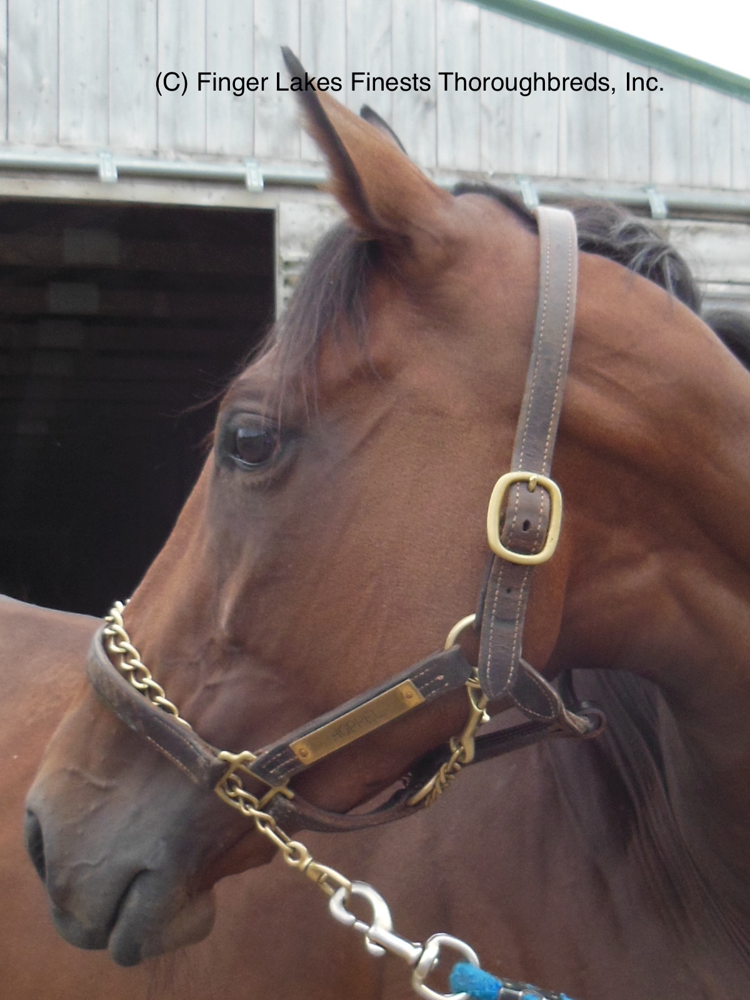
This lovely girl is described as an absolute sweetheart, and she also has a big heart and great work ethic. She has been a successful racehorse, with 4 wins, 5 seconds, and 3 thirds in her 15 starts. She recently won three races in a row, which means she must now face tougher race conditions at a level where her trainer does not think she will be as competitive. So he wants to find her a new non-racing home while she is sound where she can excel. The trainer vouches that Williston Drive is really quiet and trustworthy, never does a thing wrong, has no vices, is great to handle both on the track and in her stall, and is a great horse that some lucky person will adore. Williston Drive recently moved to a farm very close to the Finger Lakes Race Track, and the groom at the farm also raved about how sweet and good to handle she is. Her legs are clean, and even though the handler moved slowly for the jog video so the filly could not stride out, we saw tantalizing hints of lovely toe pointing movement. We then watched the videos of her recent races, and indeed saw a flowing big smooth stride and great toe pointing reach to her trot. We can see this sweetheart making a great children's hunter. But with her smaller build and soundness and heart and athleticism, we also think polo people should give her serious consideration. Her pedigree is full of great jumping/sport bloodlines: Lemon Drop Kid, Kingmambo, Fappiano, Danzig, Northern Dancer, Buckpasser, Cox's Ridge, Key to the Mint. And her fourth dam is the great producer Missy Baba, so she comes from one of the best female families in the American studbook. Price: $850 negotiable Contact: Jamie Schubert 585-943-4298
Race Record: http://www.equibase.com/profiles/Results.cfm?type=Horse&refno=9173725®istry=T Pedigree: http://www.pedigreequery.com/williston+drive
As always, a pre-purchase veterinary exam is recommended.
Ahoy Mate 2006 16 h dk bay gelding: New Price!
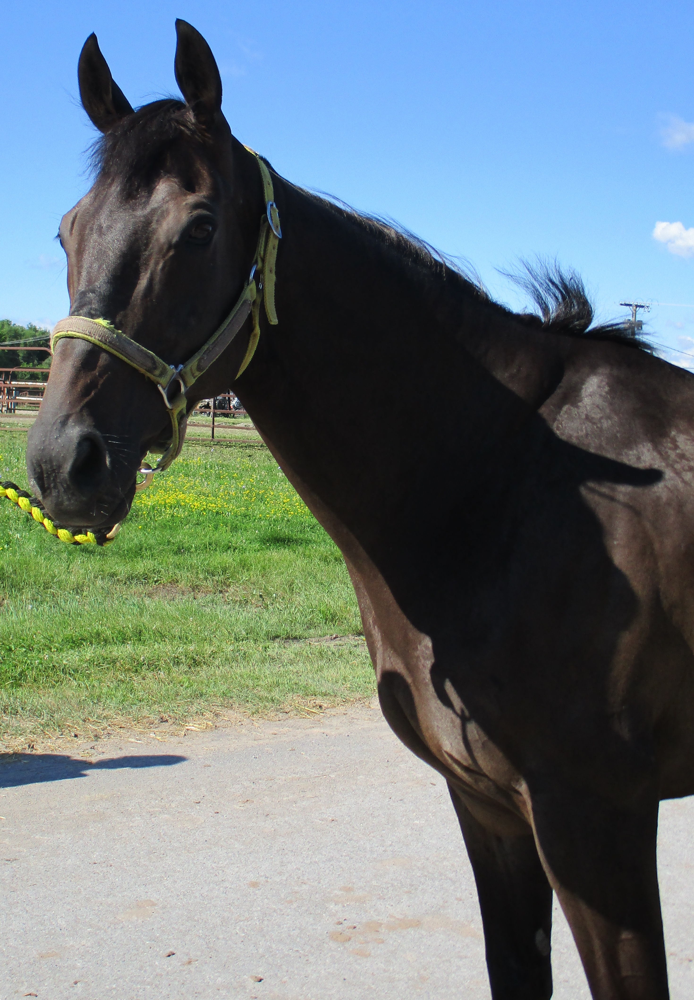
This grand warhorse has 9 wins under his girth with 18 more in-the-money finishes out of 66 starts. Remember that when looking at his set osselets and toed-in front legs. His owner/trainer has treated this horse as a beloved pet and choked up when describing why he is so special to him. He will be selective about his new home and stated that he will remain with him "forever" if that home isn't found. He would prefer that he find success in a non-racing discipline because he is accustomed to having a job and thrives with it. He stood like a champion as we shot his conformation photos, seeming to pose with his ears and eyes alert to the activities all around him. His class and mileage is a tribute to his soundness and good handling by his longtime racing connections. We loved his kind eye and beautiful solid-bodied build that will use a lot of leg. We witnessed a sound horse with lovely movement at the jog.
Mate's handler stated that he has absolutely no vices, is playful and kind, and wants to be lavished with attention at the front of his stall.
Contact Tammi Lord (for owner) 585-337-8661
Price $1500
http://www.pedigreequery.com/ahoy+mate
http://www.equibase.com/profiles/Results.cfm?type=Horse&refno=7738070®istry=T
As always, a pre-purchase veterinary exam is recommended.
You Got The Silver 2012 15.2 h dk bay colt
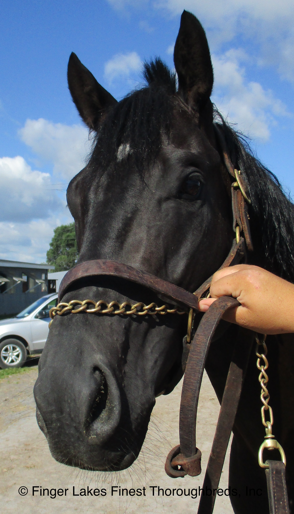
This compact fellow immediately appealed to me because he reminds me of another dark bay who was one of my all-time favorite racehorses from several years ago. He is just adorable!
Sired by 2006 Belmont Stakes winner Jazil, Silver is smaller in stature but has a solid, well conformed body and, at 3 years old, he still has years of growing ahead of him. We admired his powerful looking engine and deep shoulder, topped off with a gleaming, almost black coat.
Silver was very sick as a youngster and he retains a remnant of that illness which is more a badge of his resilience and someone's resolve to pull him through. After discussing his case with a veterinarian who is familiar with it (but not the surgeon) we understand that he had surgery last year to resect one of his ribs that had become infected by a pleural effusion when he contracted pneumonia. A hole remains at the surgical site which we are told doesn't bother him and requires once or twice daily cleaning. The current trainer has had him since December and the hole remains unchanged.
Silver is apparently very quiet and not studdish but gelding is simple and cheap. He is also lightly raced with only 5 lifetime starts. He had breezed the morning of his interview and was a bit tired, and his connections have agreed that he is not racing material.
We think that this cutie will be a gem with some TLC and time off the track.
Contact Angel Lopez 315-719-4252
http://www.pedigreequery.com/you+got+the+silver
http://www.equibase.com/profiles/Results.cfm?type=Horse&refno=9271589®istry=T
Shilah 2005 16.1 h chestnut gelding with lots of roaning
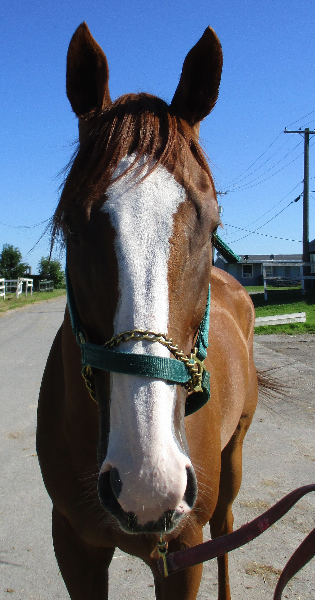
This was our first subject of the morning and both volunteers were very impressed with this incredible hardknocker. Out of 81 starts, he has amassed 17 wins, 9 seconds and 13 thirds: wow!!
Shilah has tailed off in his 10th year and he has nothing at all to prove on the racetrack. A well-traveled man, he has run at many racetracks including Remington Park and Churchill Downs. His age, clean legs and remarkable race record should dispel any reluctance about his durability. He showed fluid movement with cadence and suspension that reflects his soundness and suitability for just about any sporting discipline.
Horses like Shilah are gems for so many reasons, not the least of which is his experience and "wisdom". His trainer summed it up by saying "this horse doesn't do anything wrong!"
A good home is essential.
Contact Dan Poliziani 585-200-9412
Price $1500
http://www.pedigreequery.com/shilah
http://www.equibase.com/profiles/Results.cfm?type=Horse&refno=7484042®istry=T
As always, a pre-purchase veterinary exam is recommended.
Dancin on the Sand, 2009 16.3h dark bay mare
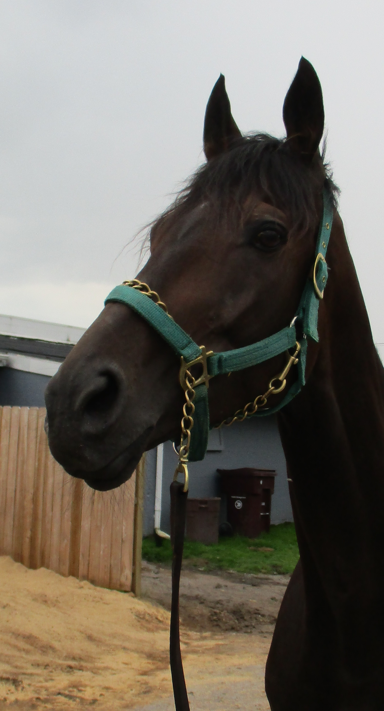
A groom's favorite, this stunning, big, almost black dappled beauty has sport horse potential written all over her. When a groom at the track, who has handled hundreds of horses, goes on and on raving about how wonderful and what a favorite one particular horse is, you had better pay attention! Dancin on the Sand's groom has taken care of her since she was a two year old, and just couldn't say enough good things about her. She certifies that Dancin on the Sand is an "absolute sweetheart." She also says that despite old set osselets, this mare is "sounder than a dollar bill." Dancin on the Sand posed regally for her photo session, and her physique and breeding suggest jumping ability. For her jog video she showed a lofty trot that should do very well in the dressage arena. She is sired by Desert Warrior, and we have placed several of his offspring over the last few years who have shown tremendous jumping ability, with scope and great form. Dancin on the Sand is a homebred, so she has been with her current connections since birth, receiving the best of care and winter turn out at their farm. If you are looking for upper level potential in eventing or the jumpers, or for dressage, call fast on this great mare! Price: $2,500 Contact: Ralph D'Alessandro 585-281-1029
Race record: http://www.equibase.com/profiles/Results.cfm?type=Horse&refno=8582602®istry=T Pedigree: http://www.pedigreequery.com/dancin+on+the+sand
As always, a pre-purchase veterinary exam is recommended.
Eye to Eye, 2012 15.3h+ dark bay filly: retained for racing
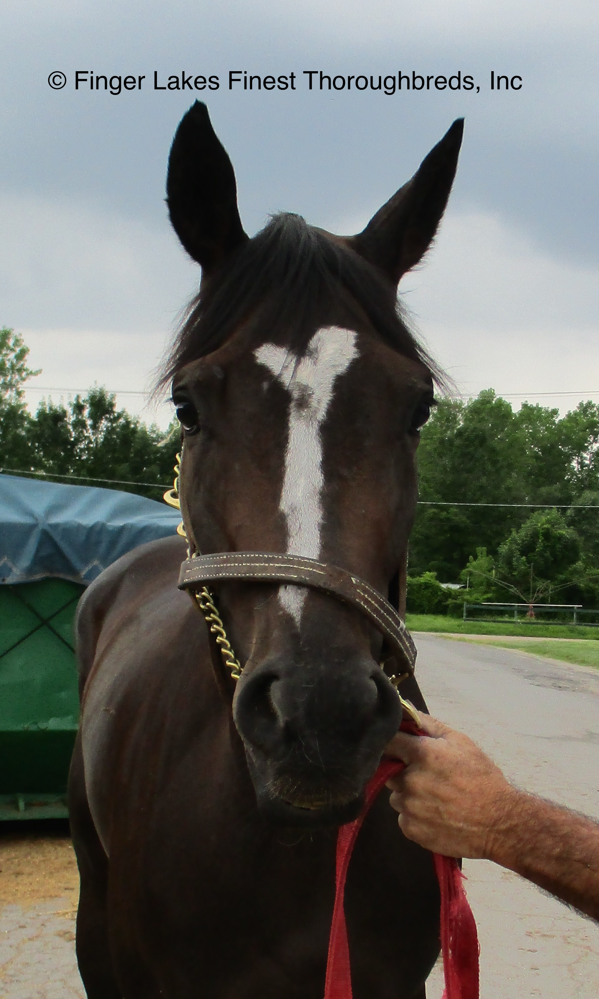
This dish faced beauty finds the race track life too nerve wracking, and since her trainer says she settles right down when she is off the track, he wants to find her a new career where her good looks and athleticism will serve her well. She is lightly raced, sound, and her legs are clean. She is still growing, and we think she will top out at over 16 hands. When she finishes growing and fills out, we think she will be a stunner who will surely attract attention in the show ring or dressage arena. She had raced the day before her photo session, and she jogged soundly, with no post-race stiffness, and she showed hints of very nice movement although the groom did not let her fully stride out. She is a granddaughter of Unbridled, and her dam is from the Private Account/Damascus sire line. Price: $2,000 negotiable Contact: Ralph D'Alessandro 585-281-1029
Race Record: http://www.equibase.com/profiles/Results.cfm?type=Horse&refno=9368638®istry=T Pedigree: http://www.pedigreequery.com/eye+to+eye9
As always, a pre-purchase veterinary exam is recommended.
Chia Spice, 2008 15.2h bay gelding
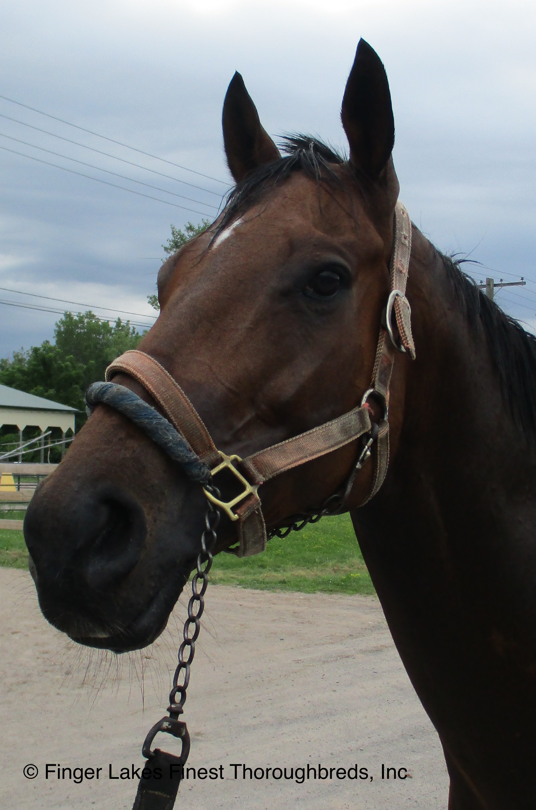
This adorable solid bodied cute guy is ready to charm his way into your heart. Chia Spice is letting his connections know that he just isn't interested in racing this year, and that he would prefer a new career. As his owner/trainer says, he is a very smart horse, "too smart to run anymore." He is sound, quiet, friendly, and a cute mover. With his smaller but solid stature, we can see him as a great barrel racing horse, and his trainer says he would make a great kid's horse. Pony club, 4 H, local hunters, western, trails.... we can see this cutie quickly adapting to all of these disciplines. In our experience, the mature horses like Chia Spice who have raced well (he has hit the board in more than 50% of his starts) and are still sound, are very durable and easily transition to new jobs, and have many more years to give -- especially when they have great brains like Chia does. He is from the Danzig sire line, out of a mare with Halo and Deputy Minister close up, so there is a lot of sport/jumping potential in his pedigree. Price: $1,500 negotiable Contact: James Douthall 347-445-4408
Race record: http://www.equibase.com/profiles/Results.cfm?type=Horse&refno=8385273®istry=T Pedigree: http://www.pedigreequery.com/chia+spice
As always, a pre-purchase veterinary exam is recommended.
Clever Spirit, 2009 16h chestnut mare
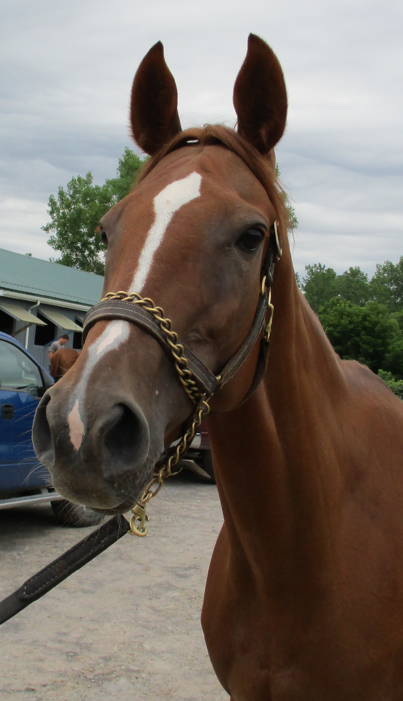
If you have ever dreamed of owning a horse sired by the great Smarty Jones, here is your opportunity! This golden beauty is a daughter of Smarty Jones, out of a mare by Unbridled. She has a balanced uphill build with a great shoulder, which suggests excellent potential for sporting disciplines. When she jogged for her video, we saw very nice, light, big strided movement that left our volunteers exclaiming what a nice mover she is, again suggesting sporting potential. Her owner/trainer says she has an osselet that has been bothering her, but with some normal let down time from racing, it should not be an issue with any discipline that involves less high speed pounding than racing...which means all other disciplines! He says she is the smartest horse he has ever been around, which suggests she should quickly absorb retraining and enjoy the challenge of learning new things. Clever Spirit is also described as a quiet sensible good girl, good to handle and work with. She posed beautifully for her pictures, and showed an all around sense of class and alert intelligence. While we see great potential for an eventing, dressage, or H/J career, Clever Spirit is also worth very serious consideration from breeders. Her female family is full of quality graded black type. Her second dam is a stakes winner and producer; her third dam, a daughter of Secretariat, is a multiple stakes producer who has six daughters who were also stakes producers, including multiple grade 1 and grade 2 stakes producers. This gorgeous and classy daughter of the great and beloved Smarty Jones is also quite the bargain, so you had better call fast! Her owners care a great deal about finding excellent homes for their horses, so references will be required. Price: $1,000 Contact: Bob Ubbink 585-738-3159 or Fran Ubbink 585-749-3159
Racing record: http://www.equibase.com/profiles/Results.cfm?type=Horse&refno=8604857®istry=T Pedigree: http://www.pedigreequery.com/clever+spirit
As always, a pre-purchase veterinary exam is recommended.
As always, a pre-purchase veterinary exam is recommended.
El Grande Patron, 2009, 16.1 Chestnut gelding with chrome
If you are looking for FLASHY here is your guy!! El Grande Patron, lovingly referred to as “Chubby Checkers” by his current connections, has been a successful race horse earning over $114,000. He has hit the board in 17 of his 28 starts, however, he is ready for a new career. Chubby Checkers comes from a shed row of horses who always impress us and this one certainly did not let us down! His connections are known for taking excellent care of their horses and enjoy hearing updates once placed in their new homes. His trainer describes him as impeccably mannered, sweet, and a barn favorite. Just about everyone he meets comments on his very unique coloring that is sure to stand out in whatever his next discipline is. They reported he is sound, a testament to his durability after a successful racing career. He has no vices. We could see him excelling in just about any discipline. This horse is quite special to his current connections as he has been in their care for his entire racing career and therefore a good home is a must. References will be checked. We were only able to get a short video today, but Checkers has plenty of winning race videos that do a much better job of showing off his movement. Equibase: http://www.equibase.com/profiles/Results.cfm?type=Horse&refno=8598041®istry=T
http://www.youtube.com/watch?v=_IRMMyjspbY
Price: $2500neg Contact: Dan Conway 585-329-7803
Woo Woo Kid, 5 year old, 16.2+ h chestnut gelding
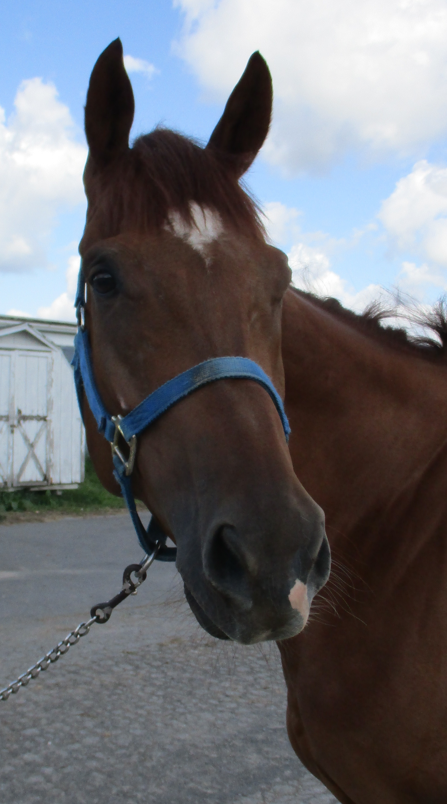
After taking his listing, one of our volunteers was on her phone to a friend who is looking for a horse and told her "you need to see this one". For good reason: this tall, handsome boy is beautifully put together, has gorgeous movement and is as quiet as they come, ambling along on a loose lead hooked under his chin. His trainer states that he has no vices, is easy to work around and is an all-around good egg. Wow do we agree! We couldn't get enough of this big loveable guy! He won two races in a row early in the 2014 meet and hasn't hit the board since, so sayonara racetrack, hello show ring!He is described as sound and we saw clean, tight legs and a beautiful, lofty jog. This guy is very promising and well worth the asking price. He has no stable vices.He is now located at his owner/trainer's farm outside of Oneonta, along with several other very nice horses we have listed for Wayne. It is definitely worth a trip to do some shopping on his farm!
Horses of his caliber, especially with his height, age, temperament, and soundness, tend to go extremely quickly. We suggest calling quickly if you are interested in this handsome fellow.
Contact Wayne Sparling 607-865-4083 (home) or 607-434-7213 (cell)
Price $3000
Rey Rocket, 2010 16.1h+ dk bay gelding
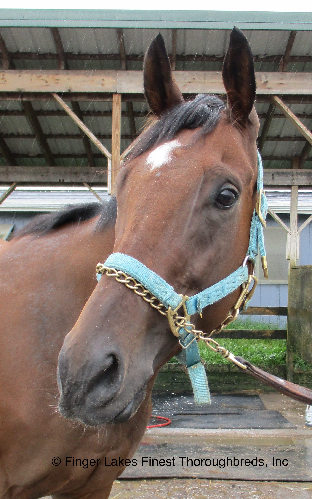
This big, sound handsome young horse is described by his trainer as the kindest horse in her barn, much loved by her young son and daughter. She says he is an absolute doll to work with, is great on the farm and in turn out, and that he is very sound. We admired his kind intelligent eye, and his well balanced conformation and strong sloping shoulder. He showed good toe pointing movement with a big ground covering stride for his jog video. Rey had some initial retraining at the end of last year with an event trainer, and he was a quiet and good pupil showing sport potential. But at that time his track owner decided to give him another shot at racing this year, but Rey has decided he would rather have a new career. Since Rey is such a laid back and well mannered horse, we can see him excelling in the hunter ring, but with his physique and ground covering stride he should attract serious interest from eventers and dressage riders as well! He certainly has a promising pedigree for jumping, with Kingmambo, Private Account, Danzig, Secretariat, and Buckpasser close up. We think that with his beautiful head, big star, and flashy white socks, he will turn heads in whatever arena he shows in!
Price: $2500
Contact: Luke Linn 315-398-9849
Race Record: http://www.equibase.com/profiles/Results.cfm?type=Horse&refno=9045649®istry=T
Pedigree: http://www.pedigreequery.com/rey+rocket
As always, a pre-purchase veterinary exam is recommended.
Dream Theory, 2011 16.1+h bay gelding with chrome
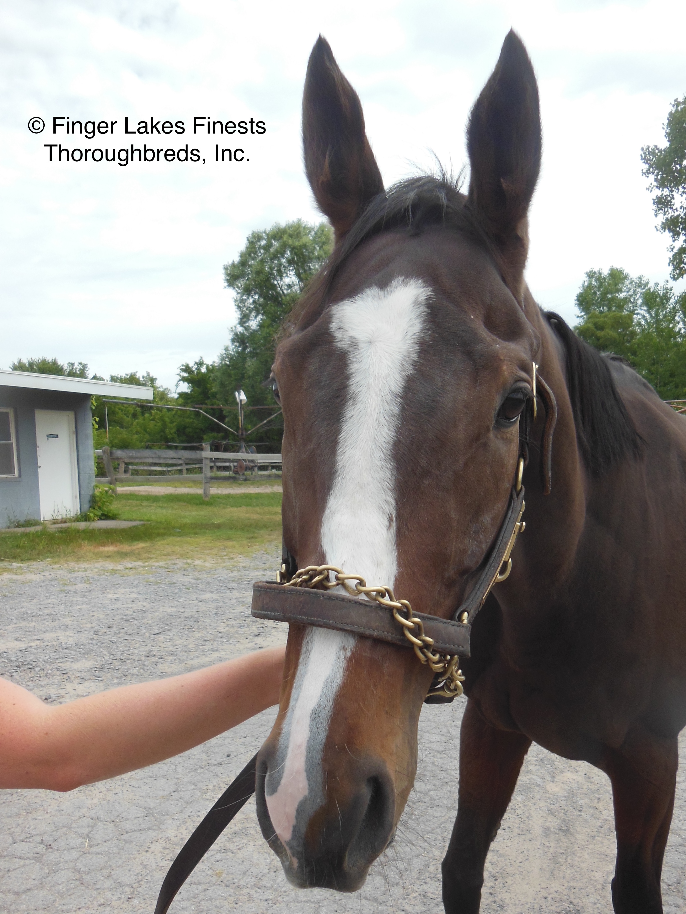
Dreamy indeed... this flashy son of Freud out of an AP Indy mare is very clean legged and sound, a lovely mover, and is described as a lover boy who just wants hugs and peppermints instead of racing. He is letting his trainer know that he is just not a racehorse, and that he finds the track life stressful, compared to the couple of weeks last winter when he got turned out at a farm and thrived. When we arrived at his barn for his photo shoot, his groom was getting him ready, and we got to observe first hand how sweet and people oriented this young horse is. His groom raved about how sweet he is, wonderful to work around, quiet, and with a great personality. Dream Theory is a beautiful mover, with great suspension, and a light lofty trot. We can see him excelling in the dressage phase or in the show hunter ring. He has a great pedigree for sport. His sire Freud, a full brother to Giant's Causeway, had produced several horses who are excelling as eventers and as hunter/jumpers. Last year, we placed Dream Theory's half sister by the same dam, Instant Flash, and she quickly proved to be an immensely talented natural jumper. We see the same potential in Dream Theory. We first listed Dream Theory last fall when he was just a three year old and before he ran a couple of good races that prompted his owner to keep him in training, and this year we noticed how he has grown, and is starting to even out in his frame, with his sway back much less pronounced. His trainer says that because Dream just does not like the stress and confinement of the track like, he has had a hard time keeping weight on. But once off the track, with a chance to get turn out, he is likely to thrive, add weight, and continue to fill out and develop. We see unlimited potential here. Dressage folks, eventers, and H/J people looking for a serious prospect had better call fast on this big, young, sound guy! Price: $1,000 Contact: Jared Schoeneman, 585-284-5837
Racing record: http://www.equibase.com/profiles/Results.cfm?type=Horse&refno=9063415®istry=T Pedigree: http://www.pedigreequery.com/dream+theory
As always, a pre-purchase veterinary exam is recommended.
Chapa Rita, 2009 15.3h dark bay mare
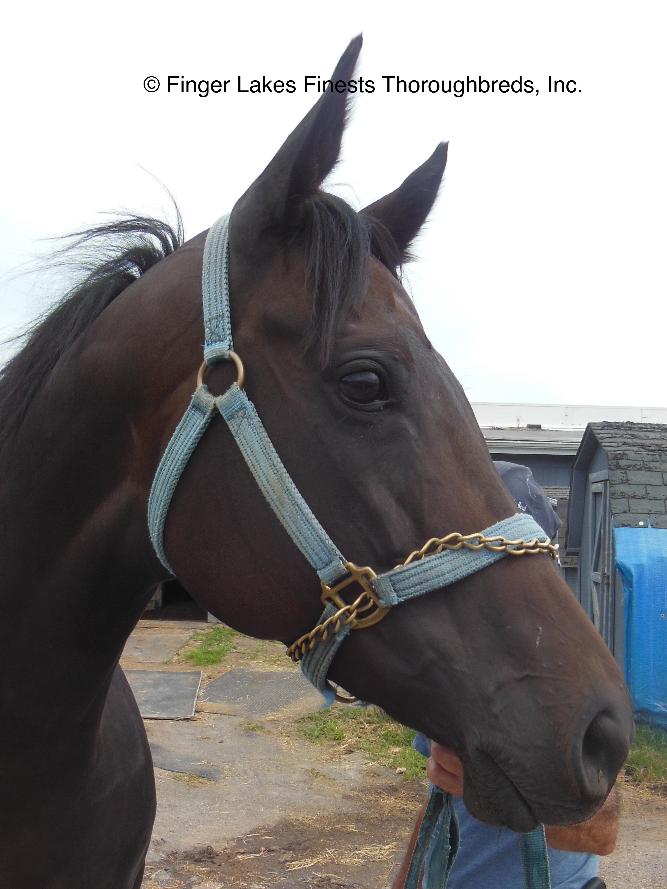
Another dappled dark beauty with a kind soulful eye, Chapa Rita is so solidly built she could fool people into thinking she is a Quarter horse. Her trainer says she is a very friendly people horse who loves attention and treats. Sounds like she will be easy to love and spoil in a great new home! Chapa Rita is also described as a very easy keeper, quiet, with no vices, and sound. Her trainer says she has a very old, long ago set osselet on one ankle, but it hasn't bothered her at all in years. This beautiful mare is ready to find a new home and career because racing makes her too nervous and she just isn't into it anymore. She is described as very calm in everything -- in training, around the barn -- but a race. Her trainer thinks Chapa Rita would make a great barrel horse, because she is very quick and agile. She posed like a star for her photos, and showed her friendly attention seeking nature when she was just sure that our camera was a big peppermint. For her jog video she demonstrated that she is a very nice mover. Price: $1,500 negotiable Contact: Linda Dixon 585-329-9062
Race record: http://www.equibase.com/profiles/Results.cfm?type=Horse&refno=8586149®istry=T Pedigree: http://www.pedigreequery.com/chapa+rita
As always, a pre-purchase veterinary exam is recommended.
Insane Speed, 2010 16.2h chestnut mare
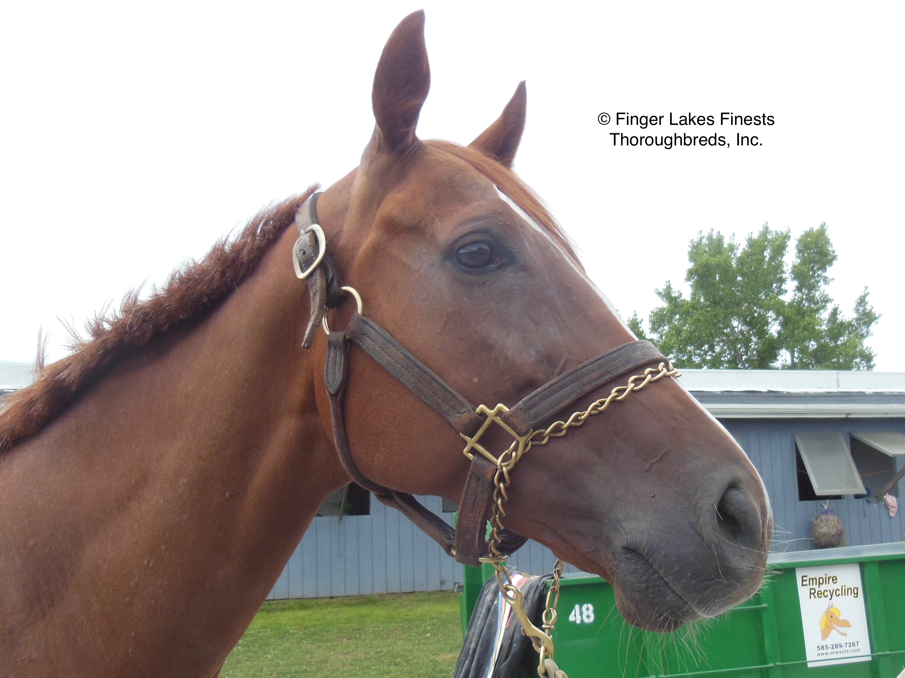
While she has hardly lived up to her name on the track, this very pretty and well put together girl with a striking unusual shaped blaze is described as a quiet sound mare with a great disposition. Both her groom and her trainer raved about what a good and kind horse she is. Anyone can handle her, you can do anything with her, and anyone can ride her, the trainer says. She had raced the day before her photo session, and she showed no stiffness, and she jogged very quietly despite a truck, and a bicycle rider passing right by her. She can go in any new career direction, and with cute roaning running through her coat and her good size, great shoulder, and beauty, she should turn heads in the show ring or dressage arena. Although her groom did not get a good full jog pass in front of the camera due to the congested area, we did see nice balanced and light movement. We also watched a video of one of her winning races, and we saw a lovely fluid, light and balanced canter as she came back to the winner's circle. She has an excellent pedigree for sport/jumping disciplines; her sire is from the Deputy Minister line, out of a champion mare by Cox's Ridge, and she has Alydar close up on her dam side. This lovely young mare is a serious bargain! A good home is very important to her trainer. Price: $750 negotiable Contact Donna Bireta 585-281-3058
Race record: http://www.equibase.com/profiles/Results.cfm?type=Horse&refno=8842328®istry=T Pedigree: http://www.pedigreequery.com/insane+speed
As always, a pre-purchase veterinary exam is recommended.
It's My Business, 2011 dark bay 15.3h filly
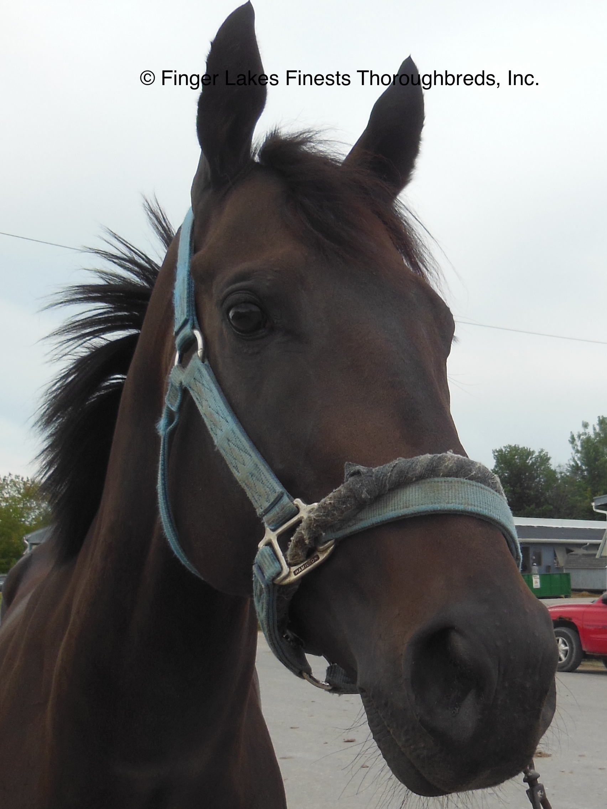
This dappled dark beauty has been quite the big hearted successful race horse, with 6 wins, 3 seconds, and 2 thirds in only 15 starts. In her last race in late July, she was checked, and cracked a sesamoid bone in her ankle... but still won, so she is retiring from racing as a winner. The ankle has been x-rayed, and we were informed that the vet says the crack is in a good place for full recovery with no limitations, after appropriate rest and rehab. Her trainer says she is a very intelligent mare, very well behaved, although she is touchy about grooming. She posed like a model, and we admired not only her dappled coat but her solid bone and excellent correct conformation. Because her injury was so recent, we asked only for a walk video, and we saw a flowing big stride. It's My Business is very well bred, and with her race record, she is an excellent broodmare prospect. She is by rising young sire star Street Boss, a son of super sire Street Cry, and her dam is a young Mineshaft daughter out of a stakes producing Dixieland Band mare. Her second dam is a graded stakes producer whose daughters have produced Grade I winners; her third dam is a stakes winner and stakes producer, and her 4th dam is a graded stakes winner and graded stakes producer. Lots of quality black type in this female family. It's My Business also has an excellent pedigree for sport horse breeding. While we emphasize her quality pedigree for breeding, It's My Business also has great potential for sport or pleasure disciplines once her ankle is rehabbed. Horses of her intelligence, heart and determination have so much to offer! Price: $1000 negotiable; excellent home essential Contact: James Douthall 347-445-4408
Race Record: http://www.equibase.com/profiles/Results.cfm?type=Horse&refno=9084219®istry=T Pedigree: http://www.pedigreequery.com/its+my+business2
As always, a pre-purchase veterinary exam is recommended.
Calculus, 2012 16h chestnut gelding
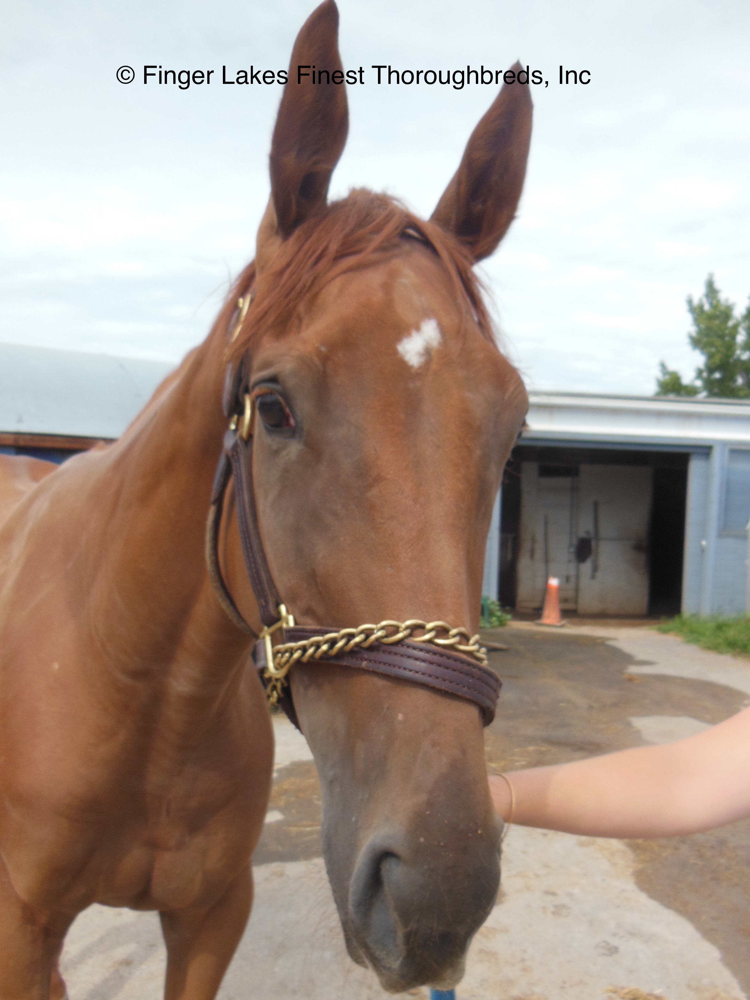
You don't have to be a math genius to see that this handsome, still growing young horse has outstanding potential for a sport horse career. We think people looking for an upper level event, dressage, or jumper prospect should pick up the phone and quickly come see this horse! Calculus is described as completely sound, has very clean legs, and is athletically built with good bone, a great shoulder and good hip angles. Since he is only three, he will definitely grow some more, and should top out at over 16.1. We think he will be a stunner once filled out and fully grown. He is also a friendly good boy, and we saw him nuzzle his handler and show great interest in his surroundings. Another trainer in the same shed row who watched his photo session also vouched to us that Calculus is a well behaved and very nice horse. Lightly raced, Calculus developed a dislike of the starting gate, which requires him to find a new career. But racing's loss is your gain, because it presents a rare opportunity to get such a nice young athletic clean legged horse. Although he was obviously feeling good for his jog video, since he had only been walked for a week since his final race, Calculus was very respectful of his handler, and showed big movement that should show quite well in the dressage arena. He has excellent sport breeding, by Corinthian, a son of Pulpit who is by AP Indy, and out of a mare who recently sold for $90,000 as a broodmare and who hails from one of the best families in the American stud book, replete with many champions for the Phipps family. Do not hesitate to call -- this spectacular young horse should go fast! Price: $1,500 negotiable Contact: Tammi Lord 585-337-8661
Race record: http://www.equibase.com/profiles/Results.cfm?type=Horse&refno=9284603®istry=T Pedigree: http://www.pedigreequery.com/calculus4
As always, a pre-purchase veterinary exam is recommended.
Einstein Affair, 2011 16.1h dark bay ridgling
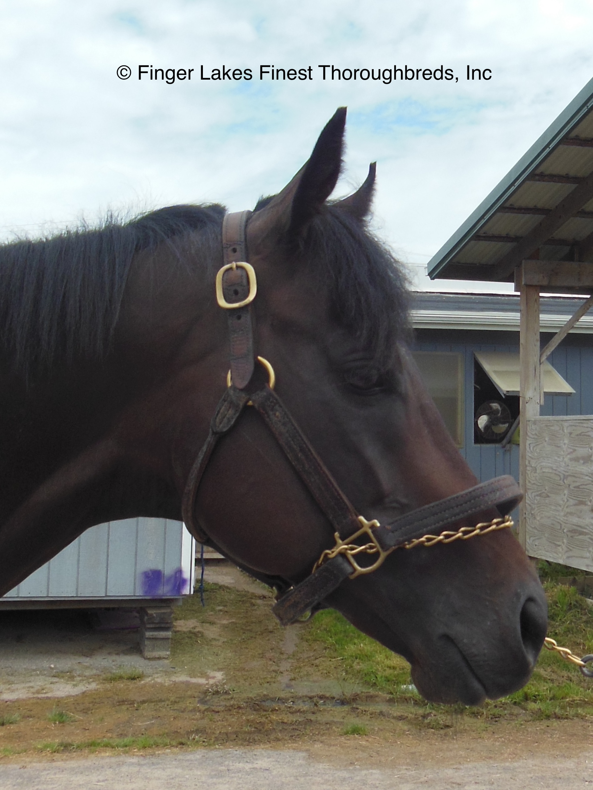
This very handsome guy's gorgeous head and expressive eye drew us in and won us over, as did his friendly personality. He recently arrived at Finger Lakes from the NYC tracks, and his new trainer says that he has been great to handle, and is not studdish at all, even though he is a ridgling with one undescended testicle. (He can quickly become a gelding with surgery!) Last year, Einstein Affair had a knee injury and surgery. He returned to racing this spring, but was not competitive in NY, so he was sent to Finger Lakes in mid-July. His new trainer does not think the repaired knee will hold up to lots of racing, although he has successfully worked Einstein Affair a couple of times. So he wants to find him a new non-racing home, where his good looks, quiet demeanor, friendly personality and lovely movement will serve him well and endear him to his new people. He is likely to be best suited for flat work disciplines such as dressage, pleasure, or trails. This almost black beauty has so much to offer to the right person! Please give him a chance at a great new life! He is very well bred, by the international superstar Einstein, who won major races on turf, dirt, and synthetics and was sired by Derby winner Spend a Buck, and out of a mare by the durable and popular star Black Tie Affair. These are stout and hardy bloodlines. Price: $500 Good home essential Contact: Neville Henry 585-905-4214
Race Record: http://www.equibase.com/profiles/Results.cfm?type=Horse&refno=9106228®istry=T Pedigree: http://www.pedigreequery.com/einstein+affair
Little Tom Boy 2012 15.2 bay gelding: retained by owner
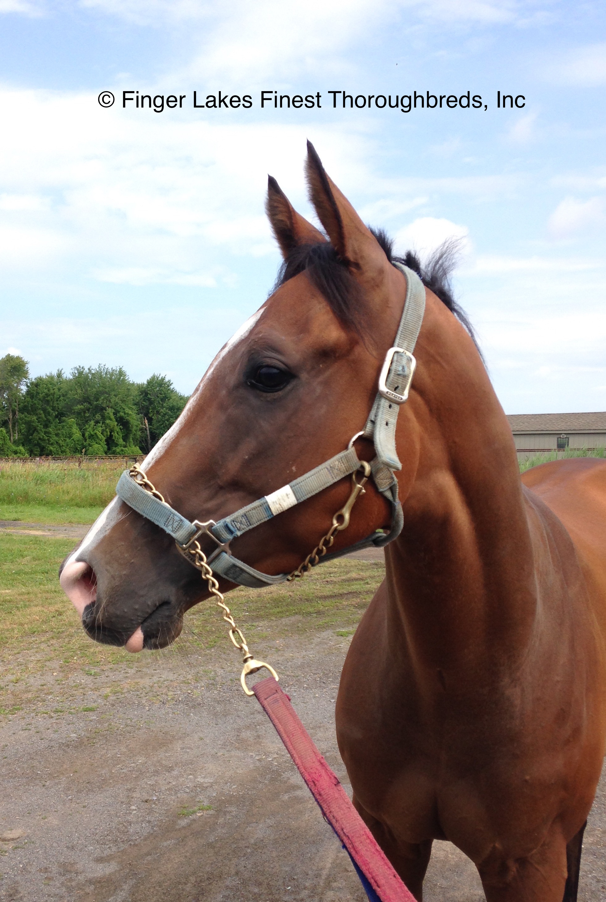
A handsome son of Freud out of a Prime Timber mare, this well put together lad was feeling his sweet feed at his interview appointment and was a bit of a challenge to photograph. We think it's apparent that he is quite the looker with his uphill build and nice shoulder and engine. Thunderstorms erupted when it was time to jog him, so getting a jog video was a bit of a challenge so we elected to see his action in the indoor arena with a lip chain for safety reasons. We weren't disappointed when we saw very nice light movement when he relaxed enough to stride out.
http://www.equibase.com/profiles/Results.cfm?type=Horse&refno=9335786®istry=T
http://www.pedigreequery.com/little+tom+boy
As always, a pre-purchase veterinary exam is recommended.
Sweet Cherokee 2012 15.2 h bay filly: new price!
This sweet, diminutive filly is a pretty stunner with a very feminine build and demeanor. Sweet Cherokee is reported to be a doll to work with, without vices. She is sound on a small knee chip that will not hold up to racing but will be fine for other sporting disciplines and her trainer/owner has decided not to pursue the elusive 2nd lifetime win. She was very energetic during our photo shoot and the sound of her own hooves on the pavement yielded an exuberance that didn't show her very pretty movement, hence the move to the grass for her video. This very lovely, well bred filly will continue to grow and develop muscling while she pursues another non-racing discipline.
Contact Michelle Tasso 585-472-2804
Price $750 negotiable
http://www.equibase.com/profiles/Results.cfm?type=Horse&refno=9344077®istry=T
As always, a pre-purchase veterinary exam is recommended.
Logan's Slogan 2011 15.2 gr/ro filly
Logan's Slogan could be along the lines of "Ride this gray for cute all day"! What an adorable, sweet girl whose trainer says that she tries her hardest on the track but can't get her second win. She further states that she doesn't have a mean bone in her body and is a sweetheart to work with. We witnessed a compact, well proportioned filly who still has some growing to do. She has good feet and trainer states that she is sound on slightly toed-in front hooves. Her movement was fluid and her race record shows early speed that she doesn't sustain to cross the wire in front, suggesting that she may be a polo prospect. We think she would also look fetching in the show ring, perhaps as a child's mount.
http://www.equibase.com/profiles/Results.cfm?type=Horse&refno=9120232®istry=T
Contact Deb Breed 585-289-3467
Price $1500
As always, a pre-purchase veterinary exam is recommended.
Ra Ra Cause, 2012 16h chestnut filly
Give a cheer for this very pretty, very well bred lovely young lady! Ra Ra is by Stonesider, a young son of champion sire Giant's Causeway, who is already becoming known for producing great movers with great dispositions. Her dam is by Rahy, and her second dam is a Canadian champion, multiple stakes winning and stakes producing daughter of the great Deputy Minister. These bloodlines are very attractive for sport/jumping disciplines, and with this pedigree Ra Ra should also attract serious consideration from breeders. And to make her even more enticing, last year we listed her full brother, Stage Debut, who is making a successful transition to a show hunter career. Ra Ra Cause's trainer describes her as a sweetheart who is "as sound as a dollar." She just isn't proving to be a competitive racehorse at the non-winners of two level, so even though she is lightly raced and a winner, it is in her best interest to find her a new career where she can excel. With her pretty looks, clean legs, still growing frame, and her very nice flat kneed movement with nice suspension, we can see her as a show hunter, or dressage horse. But with her soundness and sweet disposition she can go in any direction you want! This lovely filly is quite the bargain. A good home is essential. Price: $750 Contact: Donna Bireta 585-281-3058
Race Record: http://www.equibase.com/profiles/Results.cfm?type=Horse&refno=9342105®istry=T Pedigree: http://www.pedigreequery.com/ra+ra+cause
As always, a veterinary pre-purchase exam is recommended.
Nico's Prize, 2012 16.2+h chestnut gelding: retained for racing
On a day when we saw many beautiful horses, this stunning young boy may indeed take the prize as the fairest of them all! Nico stood like a model, with his shiny coat gleaming in the sun, as we admired his well balanced good looks. He is described as a very friendly sweetheart of a horse who is quiet and mellow. He is sound and clean legged. Lightly raced, with only six starts, he did manage to win, but is not showing enough ability to keep racing in tougher conditions. The assistant trainer likes him so much she said she wished she could keep him for herself! Nico showed off very nice flat kneed movement for his trot video. Still growing, Nico may well top out at 16.3 or more. Unlimited potential for any discipline here! Prospects this nice -- young, lightly raced, clean legged, big, beautiful, and a good mover with a good brain -- don't come along often, so you had better call fast! Price: $2500 negotiable Contact: Michelle Tasso 585-472-2804
Race Record: http://www.equibase.com/profiles/Results.cfm?type=Horse&refno=9367741®istry=T Pedigree: http://www.pedigreequery.com/nicos+prize
As always, a pre-purchase veterinary exam is recommended.
Readthesmokesignal, 2010 16.3h bay gelding
This big boy with an uphill build, good bone, and a strong shoulder has an outstanding pedigree for sport, since he comes from the Smoke Glacken/Two Punch sire line much coveted by eventers. Just imagine how impressive he will be when he gets some more groceries, fills out, and is shined up. He is truly a diamond in the rough! Due to language barriers we could get little background on Smoke, but we sure did see a very well mannered horse who was kind and cooperative. When he jogged for his video, he showed off good movement with a big lofty step. We see great potential in this big young gelding for many disciplines, and he certainly has the size and bone that will support a taller rider. Price: $2000 negotiable Contact: Angel Lopez 315-719-4252
Race Record: http://www.equibase.com/profiles/Results.cfm?type=Horse&refno=8857596®istry=T Pedigree: http://www.pedigreequery.com/readthesmokesignal
As always, a pre-purchase veterinary exam is recommended.
Repentful, 2011 16.3h dark bay (black) gelding
This guy, who sure looks black to us, left us reaching for superlatives. If you want lightly raced, sound, young, big and solid boned, and a really nice mover, then run to win what we are sure will be quite the race to scoop up Repentful! With only 7 starts in which he has yet to hit the board, Repentful has demonstrated that racing is just not his thing, but that will surely be to the benefit of those who are looking for a great prospect for eventing, dressage, or hunter/jumper. Repentful was a very mellow gentleman for his photo session, and his groom confirmed that he is a quiet and very well behaved horse who is good to handle, and has no vices. His trainer said he is very sound, and his legs are nice and clean. When Repentful jogged for his video, we couldn't help but spontaneously exclaim over his movement. He showed off a floaty trot with suspension, cadence, and a flat kneed reach from his shoulders. Big young geldings of this quality are usually twice the cost, so we recommend you move quickly to come see Repentful.
Price: $1500 negotiable
Contact: Donna Bireta 585-281-3058
Race Record: http://www.equibase.com/profiles/Results.cfm?type=Horse&refno=9089894®istry=T
Pedigree: http://www.pedigreequery.com/repentful
As always, a pre-purchase veterinary exam is recommended.
Final Stride, 2009 16h chestnut gelding: at FLTAP
Update Nov. 4, 2015: Final Stride is now at the Finger Lakes Thoroughbred Adoption Program's Purple Haze Center. He can been seen there by approved adopters.
This handsome, long legged well put together boy is described as a very friendly and laid back good guy who just isn't running well at the conditions level he is eligible for, so it is time to find him a new career. His legs are nice and clean, and he was described to us as sound, very nice to gallop, well behaved, and a major peppermint lover. For his jog video, Final Stride showed very nice movement, with a light, slow rhythm and flat kneed trot that suggests he would flourish as a show hunter. We can also see this young gelding succeeding in just about any new discipline. A well-bred half brother to two graded stakes winners, his pedigree is full of good sport/jumping lines, such as Private Account, Damascus, Storm Bird, Roberto. He is quite the bargain, in our opinion... young, sound and clean legged, quiet, great personality, nice mover -- he ticks all the boxes! Race record: http://www.equibase.com/profiles/Results.cfm?type=Horse&refno=8576938®istry=T Pedigree: http://www.pedigreequery.com/final+stride
As always, a pre-purchase veterinary exam is recommended.
Goldara, 2010 16.3h chestnut mare
Big, gorgeous, and a beautiful mover... this mare is a stunning prospect for eventing, dressage, or hunter/jumper disciplines. Goldara is very well put together, with good bone, clean correct legs, an uphill build and a huge sloping shoulder that suggests jumping ability. Her trainer says she is sound, quiet and well mannered, and while she loves to train and is a good galloper, she is not competitive at the tougher "non-winners of four races" conditions that she must now compete in. That is good news for those of you looking for a sport prospect! She is barefoot, and she appears to have good strong feet. For her jog video she showed off very nice movement, with a flat kneed reach flowing from her shoulder. She is a daughter of AP Indy's son Golden Missile. Horses this nice and this big often cost much more, so we think Goldara should get snapped up quickly -- don't hesitate to call fast and run over to the track to see this spectacular mare! Price: $1500 Contact: Mike Sabine 443-350-0941
Race Record: http://www.equibase.com/profiles/Results.cfm?type=Horse&refno=8936322®istry=T Pedigree: http://www.pedigreequery.com/goldara
As always, a pre-purchase veterinary exam is recommended.
Rocket Hero, 2010 16.2h bay gelding
If you are looking for a very athletic, big young gelding who is a beautiful mover, then Rocket Hero is for you! We see upper level potential in this well bred, high energy boy, with a lofty light big step to his ground covering trot. Rocket Hero had raced just a couple of days before his photo session, and he is showing his trainer that he is not competitive in the tougher race conditions he is now eligible for, so it is time to find him a new career where he can excel. With his leggy uphill build, strong shoulder, big stride, and beautiful movement we can see him excelling in eventing, or as a jumper. His trainer describes him as an energetic horse who needs an experienced rider. Rocket Hero's obvious athleticism impressed us, and his movement dazzled us. His trainer says he is sound on old rounded ankles, which have not bothered him at all in the time he has had him. We also noted old pin firing marks on his shins, but that is purely a cosmetic issue. Rocket Hero is a well bred son of young sire Street Hero, and he cost $80,000 as a yearling. He is a rare bargain now for such a young big gelding with this much athletic potential. Price: $1,000 Contact: Jimmy Kettell 585-313-1998
Race Record: http://www.equibase.com/profiles/Results.cfm?type=Horse&refno=9042871®istry=T Pedigree: http://www.pedigreequery.com/rocket+hero
As always, a pre-purchase veterinary exam is recommended.
Rock on Chacho 2011 15.3 h bay gelding with chrome
This gorgeous young horse is a rehab project with tremendous potential as a star in the showring in flat classes. Chacho had knee surgery last year while in Tampa and has demonstrated that he will not hold up to race training. He has only two lifetime starts and has not raced at the Finger Lakes 2015 meet. His on-track connection states that he needs more R and R before starting re-training for a less rigorous discipline. She states that he has been out of race training for less than a month so is still in racefit condition and will fill out and get different muscling when he begins training for another discipline. We admired his flashy good looks and lovely, light and floaty trot.Wow, what a nice mover! The trainer's assistant will be more than happy to discuss his surgery and the vet's prognosis for his sporting career. He is much too nice to reject because of a knee that will likely be a minimal issue in a non-racing discipline.
http://www.equibase.com/profiles/Results.cfm?type=Horse&refno=9099322®istry=T
Contact: Michelle 585-472-2804
Price: $750
Zoe B, 2009 16 h bay mare
We have long admired the lovely and sweet Zoe B. We listed her last fall, but then she won a race near the end of the Finger Lakes racing season, and her trainer decided to keep her to race again this year. But this season she is telling him that she just doesn't want to race anymore, so he knows it is time to find his beloved Zoe a great new home where her new people will love her as much as he does. She is a very pretty flashy bright bay with shrome and a shiny coat, sound, clean legged, and a very nice balanced mover. She is described as very friendly, quiet, and sweet, with not a marish bone in her body. We saw her kind disposition for ourselves when one of our volunteers asked if she could jog Zoe to show her lovely movement better since her trainer is a bit lame, and the mare kindly trotted along on a loose lead, and responded to just a gentle reminding flicker of the lead when she tried to veer over to the beckoning green grass. Zoe B is a gem of a mare, so please step up and give her the great new home she deserves! This mare could do any discipline with no limitations. Price: $700 negotiable Contact: Ulises Gonzalez 585-615-0497 (if you encounter language difficulties in speaking with Ulises, since his English is heavily accented, please contact Lucinda from FLF at 716-803-4202 and we will do our best to get a message to the trainer).
Race record: http://www.equibase.com/profiles/Results.cfm?type=Horse&refno=8606651®istry=T Pedigree: http://www.pedigreequery.com/zoe+b2
As always, a pre-purchase veterinary exam is recommended.
Little Dale, 6 year old, 16.2h bay gelding
What a beauty, with his chiseled elegant head and coppery blood bay coat that gleamed in the sun! His stunning presence shouted "fancy show horse" to us... and then when we saw his gorgeous floaty movement, our impression that he could light up the show hunter or dressage ring was confirmed. Little Dale is his owner/trainer's beloved baby, and he has raced well for her for several years. But she does not want to race him again next year, so she would like to find the perfect home where he will be loved and where he can show off in a new discipline. She says he is very quiet, and a people friendly lover boy of a horse. He is described as sound, and his legs are clean. He seemed to soak up our attention and oohs and aahs as he posed for his glamor photos. He showed off a lofty light trot with great reach and cadence. We also watched some of his race videos, and his canter back to the winner's circle was as light and rhythmical and balanced as his trot. he is by Yankee Gentleman, who is American Pharoah's broodmare sire....hmmm we can see a resemblance in their big bay elegance! This is a quality horse that should command serious attention from anyone looking for a fancy top prospect for H/J, dressage, or eventing.
Price: $3500 negotiable Contact: Adrianne D'Alessandro 585-281-1810
As always, a pre-purchase veterinary exam is recommended.
Charlie's Love, 2012 15.2h bay filly
Breeders take note, this pretty young filly has a spectacular pedigree, full of graded black type! You will be hard pressed to find a mare with this quality pedigree for such a bargain price. Charlie's Love is by the recently deceased super sire Indian Charlie, and the fact that she is from his last crop (she was bred on a $70,000 stud fee!) only adds to her value. She is a half sister to a graded stakes winner, and her stakes producing dam is a daughter of multiple grade 1 wining mare Chaposa Springs. Her third dam is an international champion and multiple grade 1 producer. Despite her stellar breeding, it is evident from her only two races that racing is not Charlie's Love's game. Her legs are very clean, and her trainer says she is very sound and gallops well. But she does have an elevated sacroiliac area on her right side, perhaps from slipping and falling when she was a baby. This produced what looked to us like a slightly uneven step behind when she trotted for her video. She had raced the day before her photo session. Chiropractic adjustment could help her a lot. This very pretty, well proportioned filly, who is still growing, has no limitations, and could do anything. But we think that her pedigree makes her especially attractive as a broodmare, and it will certainly qualify her for a date to top Kentucky stallions. Price: $3,000 Contact: Neville Henry 585-905-4214
Race Record: http://www.equibase.com/profiles/Results.cfm?type=Horse&refno=9303489®istry=T Pedigree: http://www.pedigreequery.com/charlies+love
As always, a pre-purchase veterinary exam is recommended.
FLF Romeo, 2011, 16.3h flashy chestnut gelding - Placed!
Looking to fall in love - then come meet FLF Romeo - a great combination of athletic potential and loveable puppy dog. Acquired by FLF in late June as a rehabilitation project, Romeo was several hundred pounds underweight, covered in rain rot, and showing classic signs of ulcers and in need of some serious TLC. Under FLF's care and at our expense, Romeo has gotten some much needed groceries and ulcer meds and medicated baths. He is gaining weight steadily, and his coat has bloomed into a shiny dazzling copper. He has also learned to be a horse, and to enjoy turnout and pampering from humans, and to relax from the stresses of the racetrack life. He is very lightly raced, and he is clean legged and sound. While not the greatest racehorse in history, he has tremendous potential as a sport horse and certainly makes up for his lack of racing success with a winning personality. In his almost two months off the track, he has been treated for ulcers, gotten much needed farrier and dentist attention, and was given some vacation time with special feed so he could gain weight. He has put on almost 200 pounds under our care! He is good in turnout with both mares and geldings. We recently started riding him, and he is smart and willing student! Handsome and leggy, Romeo shows excellent uphill movement and seems to take new experiences in stride - add in the lightness on his feet and you have a true upper level sport prospect. When we watch him in turnout, our jaw literally drops at how gorgeous his trot is! With his height and his gorgeous movement, he is sure to be noticed. With his good nature and charismatic presence, he is a true lover boy. Each new experience seems to be met with playful curiosity, enthusiasm and Romeo’s usual desire to please. Combinations of this height, soundness, movement, lack of vices, looks and personality are not that common so don’t get left out. He will be sold pursuant to a no auction/no slaughter/right of first refusal contract to an approved home, and references will be required and checked. FLF wants to insure that this special boy goes to the perfect home, and that he never again falls into the poor condition that he was in when we took him in.
He is located at a private farm in western New York near the PA border, and can be seen by appointment.
Contact: Carrie 716-560-5028
Adoption Fee: $2,500
As always, a pre-purchase veterinary exam is recommended.
Warrior Jays 2012 16.2h dk bay gelding
A handsome son of Majestic Warrior, (whose sire is A.P. Indy) out of a Black Tie Affair mare, Warrior shares the flashy good looks of his stable mate and brother, Einstein Affair. He is a highly desirable combination of youth, size, soundness and good looks for a great price.
Warrior's trainer states that he is not going on with his race training because he just isn't cut out for it, but he surely will be a successful competitor in another sporting discipline. He demonstrated an even, light, lofty jog and did so quietly and politely. We also noted that he has nice feet with good heels.
This guy is already attracting attention, so don't wait to make a call!
Price $2500
Contact Neville Henry 585-905-4214
http://www.equibase.com/profiles/Results.cfm?type=Horse&refno=9332262®istry=T
As always, a pre-purchase veterinary exam is recommended.
Fit Fightin Feline 2009 16.1+ bay gelding
Feline is not one to fight with: with his size you'd go down in a TKO in no time! Turns out that he's a lover, not a fighter, a playful, full of personality kinda guy who would enjoy hanging out with you to eat plain cake donuts and mug you for peppermints! Standing in his stall, we could see he has size but once he walked out of the barn he dropped our jaws. This guy is huge, with a well proportioned, balanced build that will fit the tallest rider.
Feline is no longer in race training but he does go the pool or Equicizer to keep him sane. He has some hind end issues that responds to chiropractic adjustment and he would likely benefit from continued sessions. His trainer is happy to discuss this with prospective buyers.
With turnout and the tincture of time, we predict this handsome guy will be an exciting retraining project come spring.
http://www.equibase.com/profiles/Results.cfm?type=Horse&refno=8569459®istry=T
Price $2000 neg.
Contact Rebecca Babcock 585-683-9700
As always, a pre-purchase veterinary exam is recommended.
Royal Duty 2010 15.1+ chestnut mare
As soon as we saw her out of her stall, we oohed and aahed and annointed her My Pretty Pony! What an adorable chestnut mare, set off with flaxen mane and tail and a cute "pony" face! This darling loves attention and fussing over her, and her owner/ trainer states that she is a doll to work with and has no vices. She does everything by the book and loves to train. She is playful and is an expert shoelace untier! She is in on Monday, because she is still looking for another win and she is sound! She is lightly raced with 18 starts and 2 wins and 2 third place finishes, a very respectable race record. Royal Duty is by Act of Duty, a Mr. Prospector son and out of a Bucksplasher mare. This gal could be a polo prospect or a child's mount, but smaller adults should consider the potential in this cutie pie.
http://www.equibase.com/profiles/Results.cfm?type=Horse&refno=8912702®istry=T
Price $700 negotiable
Contact Kathy Mastin 585-576-5138
As always, a pre-purchase veterinary exam is recommended.
La Wild Speed, 2010 15.3- 16h dark bay mare
She is neither wild nor speedy... but she sure is beautiful! And she knows it too: she posed like a perfect model so we could admire her dappled shiny mahogany coat and her flashy blaze. La Wild Speed is a testament to what good loving care can do. Her current owner/trainer acquired her last year from a high pressure shed row whose regimen obviously did not agree with the filly, since she was thin, with a dull coat, nervous, and had little appetite. Her current connections pampered her, gave her ulcer medications, got her turned around and in the blooming good health you see now, and even got her going so well that she won for them last fall. And while La Wild Speed is now a sweet, friendly, happy and sound mare who is great to handle, she has decided that she has had enough of racing, and is not running well this year. So her trainer wants to do the right thing by this lovely mare and find her a great new home and a career she will enjoy more than racing. With her soundness, good conformation, flashy good looks, and good quiet personality, La Wild Speed could excel in any new direction. She has the size and build and soundness for polo; she has the looks and balanced movement for the show ring; she has the quiet good brain to just be your friend on the trails. Price: $750 negotiable Contact: Lauren Linn 585-919-4376
Race Record: http://www.equibase.com/profiles/Results.cfm?type=Horse&refno=8840441®istry=T Pedigree: http://www.pedigreequery.com/la+wild+speed
As always, a pre-purchase veterinary exam is recommended.
Eddie's Dream, 2009 15.3h bay mare: sold for racing
This pretty bay girl has indeed been a dream to handle and work with. Eddie's Dream has been with her current owner/trainer for several years, and she told us the mare is quiet, kind, has no vices, and is very nice to ride -- she goes onto the bit and steadily goes about her business on the track, with no spook or antics. The mare has recently developed a slightly puffy ankle from a green osselet, so her trainer would like to move her on to a new career. Once the osselet is set, it should not cause any issues for any discipline. Eddie's Dream was perfectly behaved for her photo session, and for her jog video she showed very nice light, even, flowing movement that would make her suitable for the hunter ring. With just a bit of down time, we think this lovely mare will be a great horse for many disciplines. She has a great sport/jumping pedigree. She is by Hook and Ladder, who has Dixieland Band and Cox's Ridge close up and has sired many horses that have transitioned well to become show hunters, foxhunters, and eventers. Her dam is by Personal Flag, a son of Private Account, from the Damascus and Hoist the Flag lines. A good home is essential. Price: $750 Contact: Lesley Friedman 585-919-9170
Race Record: http://www.equibase.com/profiles/Results.cfm?type=Horse&refno=8611712®istry=T Pedigree: http://www.pedigreequery.com/eddies+dream
As always, a pre-purchase veterinary exam is recommended.
Cathasnomanners, 2011 16h bay filly
Despite her name, this pretty filly indeed has lovely manners, and was as sweet and friendly as a kitten for her photo session. One thing she does not have is racing ability, so after 17 starts without a win, it is time for her to find a new career where she can blossom. She is described as good to handle and work with, but she is letting her connections know that she just doesn't want to be on the track anymore. She had raced two days before we saw her, and she was stiff behind for her trot video. Her handler says the track has been very hard lately in the recent spate of hot dry weather, and it is making horses feel jammed up behind, especially horses such as Cat who have been racing regularly without a break. Her handler thought some down time and chiropractic work should be able to take care of it. Her legs are nice and clean. She has good bone structure, and we think that once she fills out in her new off the track life she will be gorgeous. She should also have appeal for breeders, since she is a half sister to Bedside Manner, a NY stakes winner who is a graded stakes producer. Her sire, One Nice Cat, is a son of Storm Cat out of champion Jewel Princess. We think this young filly is well worth stepping up for and giving her a good new life! Price: $1000 negotiable Contact: Luis Gutierrez 585-880-5622
Race record: http://www.equibase.com/profiles/Results.cfm?type=Horse&refno=9077253®istry=T Pedigree: http://www.pedigreequery.com/cathasnomanners
As always, a pre-purchase veterinary exam is recommended.
Snap Call, 2009 16.3h chestnut gelding
This gorgeous big boy with coppery coat and flaxen mane just wants to love and be loved, as you can see from the photo of him cuddling with his handler. Snap Call has been a good hard trying race horse, with 6 wins and 13 seconds and over $100,000 in earnings. He came out of his last race on Aug. 22 sore, so his trainer thinks it is best to find him a new career. The trainer was not available on the day of Snap Call's photo session, so we were not able to get any information from him about the nature of the soreness. All that our volunteers and his handler could observe was a slight filling in the right knee; the handler flexed and palpated the knee, and he was not sensitive on it; we also felt it and there were no lumps or bumps. But he was off on the right front at the trot. His legs were otherwise clean. The handler who showed us Snap Call is an afternoon pony rider for the trainer, and she adores Snap Call. She says he is a very mellow, kind, big hearted horse who aims to please, and that he is wonderful to handle and work with. We think that with a bit of R & R time, Snap Call is going to be a fabulous loving partner for some lucky person and may well turn out to have no limitations. Price: $500 negotiable Contact: Sugar Rohena 585-412-3678
Race Record: http://www.equibase.com/profiles/Results.cfm?type=Horse&refno=8587969®istry=T Pedigree: http://www.pedigreequery.com/snap+call
As always, a pre-purchase veterinary exam is recommended.
More than Crafty, 2009 15.2h dk. bay (black) mare
This black beauty is build like a tank of a QH, and will surely take up a lot of leg, so do not let her smaller height at the withers deter you. She is very solid boned and nicely put together, and she was perfectly behaved for her photo session. She showed lovely movement for her jog video, with a light balanced cadence, and this was despite missing a shoe and being in serious need of some farrier attention. We could not get a lot of information about her due to language barriers, but when we asked if she was sound or had any vices, the answer was an easy to understand "no problemo!" She does have old pin firing marks on her shins, but this is purely cosmetic. The friend of the trainer who translated for us explained that More than Crafty was fine, and a good girl, but the owner just wants to get out of owning race horses, so it is time to find her a new career. We think that career could be in any direction. She is a pretty enough mover for the hunter ring or for dressage, and she has the build and stature for western pleasure or barrels. She is also very well bred, so breeders should give her serious consideration. She is by top sire More than Ready, out of a stakes placed dam. Her second dam is a stakes winner and graded stakes placed, and a black type producer who has a Grade 1 stakes placed daughter who sold for $425,000 and is a winning producer in Australia. Price: $2,000 negotiable Contact: Alex 585-622-2950 (friend of trainer, who will relay messages and help with translation due to language barrier) Race record: http://www.equibase.com/profiles/Results.cfm?type=Horse&refno=8569190®istry=T Pedigree: http://www.pedigreequery.com/more+than+crafty
As always, a pre-purchase exam is recommended.
Enchanter 2013 16.1 h dk bay gelding
This stunning youngster is surely enchanting and he is also on the DL for a right front sesamoid fracture sustained about three weeks ago. He will require several months of stall rest and, once appropriately rehabbed, the vet feels he will be able to resume any type of activity. While stall rest isn't a picnic for anybody, least of all the horse, imagine what a fantastic prospect he will be as a sound, gorgeous, 3 year old!
For obvious reasons we couldn't take him outside for his pictures but we were able to get some good conformation shots and he was amazingly well behaved for a youngster who has been cooped up for a few weeks. Already 16.1, he is still butt high and will be quite tall when he tops out. Between his flashy good looks, blingy dapples and lovely conformation he offers quite an enticing package. Add to that his breeding with known sporthorse producer Freud as his sire, he guarantees to be a head-turner once he enters the show ring.
Contact Mike LeCesse to discuss his purchase price at 585-303-9467
http://www.equibase.com/profiles/Results.cfm?type=Horse&refno=9506173®istry=T
ALittle Bit Ofluck 2010 15.3 chestnut mare
Luck hasn't been very lucky recently and she could really use a helping hand with an angel who looks past her dust, her lack of groceries, her feet in need of attention and imagine the shining penny she can be with some tender loving care and the tincture of time. She was very much a sweet girl and did her best to pose for us while tolerating an impatient handler. She had every reason to be sour at her situation but never once pinned her ears or gave any indication that she was anything but patient and tolerant. Luck hasn't been at Finger Lakes for long, having more recently run in Pennsylvania. Her one and only breeze at Finger Lakes was on 8/29/15 when she either sustained or aggravated a knee injury. Because of a bit of a language barrier we were unable to get much more information about her but do know that x-rays of the knee were not obtained so it is impossible to know the extent of her injury. When asked for a jog it was immediately apparent that she is sore so we asked the handler to stop and walk her back to her stall. It is possible that she could recover completely for light riding or what have you, and an x-ray is relatively cheap. We don't often call on our FLF friends but when looking at her kind eyes it's incumbent on us to give her every possible chance of landing safely.
Her trainer is asking $500 for her, which may be negotiable.
Contact Barney 585-412-3069 or John 954-643-0802
Tish's Bad Boy, 2009 16.2h chestnut gelding
Good things come to those that wait and he is definitely a GOOD THING! Late on a rainy, dreary morning, Tish's trainer asked us to stop by the barn and it wasn't until we had left the track to photograph several others on a neighboring farm that we realized we had forgotten him. We backtracked and were delighted to meet this truly spectacular hunk of a horse!
Tish's handler clearly loves him and had a lot of useful information about him, which is always appreciated when we start doing bios. Tish has been a useful racehorse with 29 starts and 10 in-the-money finishes, but he just doesn't enjoy going over to the paddock for saddling. He has much bigger plans in mind for life off the track and we think the lucky person who gets this beefcake will have one of the more exciting prospects to grace our listings. We noticed a broad, chiseled chest, strong shoulder and a big, powerful, dappled engine. He is reported to be a sweet guy in his stall and his handler stated that she doesn't even tie him for his morning grooming sessions. She further stated that, while he is a kind, sweet boy, he is a powerful one and requires an experienced handler and rider.
The best part of the interview came when, after oohing and aahing his conformation and muscling, he showed off a jaw-dropping jog with a floaty, light on his feet suspension that doesn't seem congruent with such a large animal, but light he is. We had to wait for the camera to stop recording before we could excitedly exclaim over his movement. It is our opinion that horses with his size, soundness and movement are less than common and, at his price, he is a bargain beyond measure.
Price $2000
Contact Ralph 585-281-1029
Glenbrook 2011 15.3h+ dk bay filly: sold for racing
This lovely dark bay filly is built like the proverbial brick you-know-what in a very nicely put together package. She's built very stoutly and will take up the leg of a tall rider and still look proportional. She had raced just 3 days prior to her interview but exhibited no signs of stiffness or soreness out of her stall and at the jog. Her connections are stopping on her because she is chasing the elusive second win and conditions at this point in the meet are difficult for a marginally competitive runner. She has 17 lifetime starts and eeked out a solitary win with 4 other "on the board" finishes. She retires from racing sound and poised for her next move in the discipline of your choice.
Glenbrook is by the sire Friendly Island, known to produce offspring with very good movement and a propensity for being kind and quick learners. She was very friendly while we cuddled her in her stall and ogled her solid build. Several Friendly Island offspring have been placed through FLF into new homes where they are succeeding as show hunters, in dressage and as pleasure horses.
Price $2000 neg.
Contact Michelle 585-472-2804
http://www.equibase.com/profiles/Results.cfm?type=Horse&refno=9193069®istry=T
Corybant 2010 15.3 h dark bay gelding
We looked up the origin of this handsome boy's unusual name and discovered that it is a Greek word which means "a reveler," or one who follows the goddess Cybele with ecstatic dancing. It seemed fitting, then, that this beautifully put together and solidly built horse impressed us as being quite athletic with nice reach to his trot. Apropos of his name, he was “happy” for his photo session, but that was understandable since he had missed his turnout because of inclement weather, hadn’t been out of his stall in days, and had a lot of pent-up energy. He was respectful of his handler and posed nicely for us despite the rain. What we did see impressed us. We think that between his beautiful chiseled head, his proportional, solid build and glimpses of really nice movement, Cory is an exciting sporting prospect. He is very well bred as well, by champion and successful international sire Johannesburg out of a stakes winning mare. He has 17 starts and is retiring from racing sound, because his owner has gotten out of the game. This is a bargain price for a very attractive, nice moving, sound young horse, so don’t hesitate to call!
Price $1000
Contact Mike LeCesse 585-303-9467
http://www.equibase.com/profiles/Results.cfm?type=Horse&refno=8572464®istry=T
Tommy No Read, 2012 16.1h+ bay colt: retained for racing

This very well bred, lightly raced big young guy hasn’t lived up to his stellar pedigree on the racetrack, so his trainer wants to find him a new career where he can excel. Tommy ran well on the synthetic track at Woodbine as a two year old, and his current connections claimed him last winter in Florida. But Tommy has shown a dislike for the hard dirt surface at Finger Lakes. Tommy sustained an injury to his right hind ankle earlier in his life, and while it is now a larger piece of racing jewelry, we were told that it causes him no problems, and he has raced sound on it and he jogged fine for us. Tommy was friendly, quiet and well behaved for his photo session in the rain, and he was so mellow he did not even want to trot. But when he did trot for his video, he showed some nice balance with hints of suspension. Tommy is likely to grow some more, and once he is gelded we think he will make a great horse for many disciplines. He was certainly bred to be the real deal: a son of leading sire Sky Mesa, a son of Pulpit, grandson of AP Indy and out of a mare by Dixie Union, from the Dixieland Bank sire line, who sold for $200,000 as a yearling. Price $1500
Contact Mike LeCesse 585-303-9467
http://www.equibase.com/profiles/Results.cfm?type=Horse&refno=9350451®istry=T
Journey to Nowhere 2008 17h grey gelding
This is the rare horse who possesses many, if not most, of the attributes that so many prospective buyers are coveting: size, color, soundness and heart abound in this handsome fellow! Standing next to him, it's obvious that he has good size, not just in height, but in a solid build. He was absolutely relaxed and displayed a friendly and inquisitive nature, doing everything he could to give us pictures of his nostrils! His personality is described as being very much that of a puppydog and his teeny tiny, gimpy handler had no trouble managing him (she is recovering from knee surgery and didn't want to handle any "up" horses). We noticed that he was wearing glue-on shoes, however his handler is of the opinion that they aren't a necessity and that he has responded well to Farrier's Formula in the past.
From a racing perspective, his career has been stellar. He has had 45 lifetime starts and, out of those starts, has amassed 11 wins, 9 seconds and 4 third place finishes. He is the horse that every stable wishes to have, pulling in steady checks and supplementing his stablemates who might not be carrying their weight. And in so doing, he has remained sound and mentally in the game.
We will be surprised if this exciting sporting prospect doesn't sell quickly.
Price $2500
Contact Mike LeCesse 585-303-9467
http://www.equibase.com/profiles/Results.cfm?type=Horse&refno=8377699®istry=T
Freud's Mistress 2010 16.2h dk bay mare
From a barn that stables many top quality horses, this lovely lady didn't disappoint with her solid, well built conformation and excellent temper. With her clean legs, uphill build and lovely movement, we think she could be a natural in the hunter ring. With her excellent sporting bloodlines she could also be pointed to eventing or foxhunting. She is by the hot sire Freud out of a Quiet American mare. This mare has already produced a stakes winning hurdler, Cat Feathers, who won multiple stakes at Saratoga over the jumps and was placed in a graded steeplechase stakes. The second dam is a stakes placed stakes producer, whose daughters have produced graded stakes winners.
The connections are ready to let this mare retire from racing now that she is running into tougher conditions. She has a respectable race record with 32 lifetime starts, out of which she hit the board 20 times with 4 wins, 9 seconds, and 7 thirds, a testament to her athleticism, heart and sturdiness.
Price: $2000 neg.
Contact Michelle 585-472-2804
http://www.equibase.com/profiles/Results.cfm?type=Horse&refno=8880079®istry=T
Why Seventeen, 2009, 16.2, Chestnut Gelding
This beautiful gelding has been a successful racehorse, earning nearly $100,000 hitting the board 19 times in his 59 starts. His trainer raved about him and couldn’t find enough positive adjectives to describe him! He said he has an excellent temperament, super laid back, and friendly. Best of all-he said he is “Sound as a dollar”! He winters well at the farm and turns out well with mares and geldings. We loved his solid uphill build. He showed nice suspension and very nice movement that lead us to believe he will be just as successful in his second career as a sport horse. We saw nice clean legs. He has no vices. A good home is a must for this boy and references will be checked.
http://www.equibase.com/profiles/Results.cfm?type=Horse&refno=8574012®istry=T Asking $2000. Contact Phyllis Shetron 585-317-8892.
As always, a pre-purchase veterinary exam is recommended.
No Flaws, 2009, 16.1 Bay Gelding: video added
This hardknocking gelding has earned over $100,000 in his career. Any horse that proves sound and willing with his resume on the racetrack is a testament to durability and big heart. His resume is sure to grow with a successful second career. We loved his kind eye that accompanied his clean legs! Sometimes the flashiest horses come in plain bay packages (think American Pharoah!). This horse is another bargain for the sport horse shopper on a budget. His thick build will certainly help fill up a taller rider’s leg. He stood quietly while the wind and rain picked up tremendously during his meet and greet. We were even happier we braved the weather when we saw his gorgeous movement! He is described as having no vices. We have reason to believe this horse may need to sell quickly, so if you are in the market for a bargain priced, big, sound, gelding-he may be just a phone call away!
Asking $1500 Negotiable
Contact Tito for Pablo Torres 585-371-7352
Race Record and pedigree: http://www.equibase.com/profiles/Results.cfm?type=Horse&refno=8573913®istry=T
Unforced, 2011, 16.2, chestnut gelding: sold for racing
On a day of very nice movers, this one didn’t disappoint. This guy comes from a very nice shedrow with horses who are well cared for and connections who are upfront and honest. What you see is what you get! This big, well conformed gelding has been a good racehorse and even won his last race. He’s now facing tougher conditions and his connections want to stop on him while he is still successful. In June 2014 Unforced fractured his knee. He was given a year off, came back sound, and was carefully brought back to full racing strength. His trainer reports he is given no medications or injections and that the knee is cold and set. He is reliably sound for workouts and races-and his last race was an impressive win! He has a solid build with a big barrel that is sure to fill up a rider’s leg. He stood very politely for our pictures and seemed to enjoy posing to show off his good looks. He turns out well on the farm. We could see him excelling in just about any sporting discipline, but if you’re looking for a great brain, excellent build and height to boot, this is your man! His connections enjoy hearing updates about their horses and would love to see him go to someone who is willing to keep them informed on his next career.
http://www.equibase.com/profiles/Results.cfm?type=Horse&refno=9165416®istry=T
Asking $2500 negotiable. References will be checked. Contact Dan Conway 585-329-7803
Splashing Prince, 2008, 16.1 Chestnut gelding
HOLY SUSPENSION BATMAN! This guy wowed us with his gorgeous movement-- the top mover of this weekend’s huge field of FLF’s for sure!! We also thought he had an adorable face with a cute pink snip. With his nice movement and beautiful, correct, uphill conformation, he is certain to be successful in any sport horse discipline. We also had a nice endorsement from one of the vets at the track and we saw nice clean legs! He was friendly and quiet for his photo shoot-- his trainer brought him out for a quick rinse with a loopy lead shank and he quietly followed behind him like a puppy. This horse is a STEAL and should be a serious contender for anyone looking for a true athlete. He is described as having no vices.
http://www.equibase.com/profiles/Results.cfm?type=Horse&refno=8479265®istry=T
Price: $1000
Contact: Rafael Ramos 786-473-0626
http://youtu.be/78IIxhEa4Cg If language is a barrier, contact Margie at 315-719-8739
Essence at Noon, 2012, 15h, Bay Colt
PONY CLUB ALERT! This fluffy maned friendly fellow is an old gelding trapped in a young colt’s body. What he lacks in size he makes up for in heart. He is described as a groom favorite with impeccable manners with zero interest in the ladies. He has the best manners in the barn and can be groomed and loved on without being tied. His groom reports he also loves hugs! “Sparky” has an agreeable personality and stood perfectly still for his photo op. We think he enjoyed his celebrity status and was quite a ham for the camera. Gelding procedures are very simple and inexpensive-- they can be done at the track for around $150 and it may be possible to coordinate this with his trainer before leaving the track. His trainer reports he is a very mild cribber, but not bad enough to require a strap. In an atmosphere outside the track, it may not even be an issue but his connections are known for their transparency and full disclosure in order to place their racing athletes with the best new homes possible. He is described as completely sound and we saw nice clean legs.
http://www.equibase.com/profiles/Results.cfm?type=Horse&refno=9319691®istry=T Asking $1500, negotiable. Contact Dan Conway 585-329-7803
Exclusive Biz, 2012, 15.3+ Chestnut Filly
This adorable girl is described as easy to be around and an all around good horse, just not a runner. Racing’s loss is your gain! A clean slate here, Exclusive Biz is lightly raced and ready to move on in any direction. She has been out of work for the past three weeks due to her lack of racing talent, but was as sweet and quiet as ever for her photo shoot. We think she wanted to crawl in our pockets and come home with us! This is a true bargain and with some time to finish growing and TLC she will be a real jaw dropper. We loved her kind eye and feminine head. We also thought she was a gorgeous mover that would excel in the hunter ring! No vices.
http://www.equibase.com/profiles/Results.cfm?type=Horse&refno=9369361®istry=T
Asking $750 negotiable. Contact Donna Bireta 585-281-3058
Paris Sunshine, 2011, 16h Chestnut Filly
Horses don't come much more solid bodied than this beautiful golden girl! Paris Sunshine is the epitome of a gentle giant. The trainer’s young daughter is deeply attached to this well mannered mare and there were lots of tears when the discussion of selling her came up. The trainer prefers that Paris go to a home that keeps in touch and provides updates on how she is doing. Paris has a massive shoulder and hindquarters and the rest of her is sure to catch up as this young girl continues to mature. She has the look and lovely movement of a fancy show hunter who could fit right in with warmbloods, but we could see her being a powerhouse on the hunt or cross country field. With her kind demeanor she would also be an excellent pony club horse. Her trainer reports she loves hanging out at the farm and turns out well with geldings and mares alike. She has been a good earning racemare, hitting the board in over half of her races and has stayed sound and willing. But the next level of competition is proving a challenge for her, so it is time to move this beauty on to a new career. Because she is such a loved and special and sound filly, her owners insist that a very good home with references is essential. This mare is very solidly built with a huge barrel. She will take up a very tall rider’s leg. She is described as sound, with no vices and excellent manners. She has an old set osselet that she raced soundly on.
She is also well bred, and should attract some interest from breeders for racing or for sport when crossed with warmblood stallions. She is by Any Given Saturday, a young son of champion sire Distorted Humor. Her dam, by top broodmare sire French Deputy, is stakes placed and has produced a couple of six figure winners. Her second dam is a graded stakes winner and stakes producer.
http://www.equibase.com/profiles/Results.cfm?type=Horse&refno=9088829®istry=T
Price: $1000 negotiable
Contact (call or text) Michelle Tasso: 585-472-2804
As always, a pre-purchase veterinary exam is recommended.
Pomeroy's Ticket, 2012 15.3h+ dark bay filly: new price
What a beauty! This lovely daughter of Pomeroy, by Danzig's son Boundary, was bred to be a good thing on the racetrack and she got sidelined by an ankle injury that happened very recently. When we saw her out of her stall, she walked sound but we did not ask for a jog video. She was done up in wraps so we could not see if the fetlock area had swelling, so we think that a discussion with her vet about her x-rays would be wise. We had no details, but we do understand that she was claimed recently from a large stable and it is our understanding the injury happened during her most recent race. Considering she has been on stall rest, she was quiet and respectful out of her stall and had every excuse to be reactive to her environment but wasn't. She was quiet and classy during her photo session and we think that she may well have tremendous potential when she is given the time to heal. Again, she was sound at the walk.
http://www.equibase.com/profiles/Results.cfm?type=Horse&refno=9384387®istry=T
Price $600 negotiable
Contact Roy 585-683-9940
As always, a pre-purchase veterinary exam is recommended.
Sir Souper Star, 2012, 15.3-16h gray/roan gelding
While this flashy son of champion Alphabet Soup is no "souper" star on the track, he sure is a super star in the looks and personality department! He is an unusual strawberry roan/gray, with white polka dots on his rump! He is also very lightly raced, with only 4 starts, and is showing that he is just too slow. But slow translates very well to the show ring! His trainer says he is very sound, has never been sore, and his joints have always been great. We certainly saw nice clean legs. He also told us that Souper Star is a very friendly horse, who likes kids, and is great to handle. He says Souper Star is usually a quiet ride on the track, the kind of horse you can flop the reins at and he just goes along. Because he was missing a shoe and had been confined for several days, Souper was a bit "up" for his jog video, but he was respectful and showed balanced light movement. His bloodlines shout sport/jumping potential. Alphabet Soup has sired good jumpers, and his sire Cozzene, is well known as a jumping sire. Ribot, Prince John, Princequillo, Bold Ruler are all prominent in his pedigree and all good sport/jumping lines. We have a feeling this still growing young boy is going to make a spectacular show hunter, eventer, or dressage horse. Young, well put together, flashy, sound, nice moving ones like this boy are worth the money! Price: $3000 negotiable Contact: Keith Harris 954-270-0003
Race Record: http://www.equibase.com/profiles/Results.cfm?type=Horse&refno=9350299®istry=T Pedigree: http://www.equineline.com/Free-5X-Pedigree.cfm?page_state=ORDER_AND_CONFIRM&reference_number=9350299
As always, a pre-purchase veterinary exam is always recommended.
Stone 'em 2012 15.3+ bay gelding
Update Nov. 21, 2015: After winning two races recently, Stone Em's owner has now decided that it is time to move him on to a new career, and thus has adjusted the price. Stone 'Em is now ready to find his new home!
We were promised cute and we weren't disappointed! While we were waiting for his handler to arrive we started cuddling on the face that was hanging out of the stall because we couldn't resist his adorableness. We were delighted to learn that he was the horse we were photographing! Stone'em is a well bred son of Bustin Stones out of a Freud mare, so he sports a great sporting pedigree. With only two lifetime starts, his trainer knew that he didn't have the chops to be competitive on the track and, being a big stable with many other competitive horses, he has chosen to stop on him (and I think his handler easily persuaded the boss that he would be highly desirable in other disciplines). He is lightly raced and is sound with tight, clean legs. His handler states that he is easy to work around and doesn't have a mean bone in his body, with an agreeable personality and, indeed, he gave kisses while we visited in his stall. Out of his stall he posed like a supermodel (he must know how adorable he is!) and was generally a doll with just one froggy moment when he got happy. Although he isn't in race training, he is going to the track to jog everyday to keep him moving and sane. He is beautifully put together and still butt high, so will likely top out over 16 hands.
Don't dilly dally on this guy with the off-the-charts cuteness quotient!
Price $3000
Contact Tammi Lord 585-337-8661
http://www.equibase.com/profiles/Results.cfm?type=Horse&refno=9315665®istry=T
As always, a pre-purchase veterinary exam is recommended.
Unblushing 2008 16 hand bay gelding
We have been contacting with this guy's owner/breeder who has elected to move him on from racing while he is 100% sound, sane and flashy! A homebred, he has been lovingly bought along through the years without a lot of hard training and has never trained or raced on medications, including Bute and Lasix. He was bred to be a turf horse and he certainly has the feet to match. He has done most of his racing on synthetic surfaces and doesn't run well on the dirt track at Finger Lakes. With his stocky build, even a taller rider will look proportionate on him.
He also spends time on the farm when he's not on the track to race and, during the winter months, has had some dressage training, so he comes with a foundation for all disciplines. He's had a decent racing career with 38 lifetime starts, 4 wins, 3 seconds and 3 third place finishes. He is reported to be absolutely clean legged and we saw tight legs without blemishes and nice movement at the jog.
His trainer states that he is a joy to work with and has no vices. We really liked this sweet flashy guy and will hope to follow him in his new career.
Price $2500
Contact Tim 716-253-4276
http://www.equibase.com/profiles/Results.cfm?type=Horse&refno=8296273®istry=T
As always, a pre-purchase veterinary exam is recommended.
Mojito Mint 2008 16.1 h chestnut mare
Saturday September 19, 2015 was quite the day for chestnuts, for mares and for gorgeous moving knockouts, and this coppery beauty ticked all of those boxes! A solid, stout, sound gal with old, set track jewelry, she has been a very useful and honest racehorse, racking up 6 wins, 6 seconds and 15 thirds in a career that included 62 starts. Horses that stay sound for this many races tend to be very durable with much to offer in new careers, in our experience. We loved her stocky, well balanced build, enveloped in a beautiful coat of impressive dapples. And when she jogged off for her video, we were wowed: what a beautiful mover to tick another box for the superfecta! By the time we got to her barn for photos, she was already wrapped and done up for the morning and the groom was raking the shedrow before clocking out, so we didn't ask him to remove the wraps. It is standard operating procedure to wrap legs on the racetrack and doesn't necessarily portend a problem. This pretty gal is just ready to call it a day on the racetrack and we think she is a bargain, clearly well cared for, in good weight and ready to go for a vacation somewhere before starting work in the spring.
Price $1000
Contact Bill Berry 585-770-4823
As always, a pre-purchase veterinary exam is recommended.
Jet Set Cat 2009 16.2+ dk by gelding: sold for racing
Jet Set Cat has been listed with us in the past and we like him just as much now as we did then. Besides his solid, dappled good looks, he has lovely movement that really impressed our discerning eyes. Cat's right eye has been enucleated and he has suffered no ill effects from this somewhat common procedure following eye injuries. One of our volunteers rode a one eyed pony in competition and was frequently in the ribbons, so this does not preclude his success in the show ring. Cat's owner was anxious to keep racing him but now he is really ready to retire from racing. He has compiled a respectable race record after 45 lifetime starts with 4 wins, 4 seconds and 6 thirds and has remained sound throughout his career on the track. Cat is reported to have no vices and is easy to work with in and out of his stall.
Price $2000 neg.
Contact Adrianne 585-281-1810
http://www.equibase.com/profiles/Results.cfm?type=Horse&refno=8580848®istry=T
Katelyn Lima 2009 16.1 h dk bay mare
Breeders and eventers should take note of this well bred Kentucky bred beauty with lovely movement and tons of potential. She is by Storm Cat son After Market. Her dam is a stakes placed winner at Woodbine of over $375,000 and her third dam is a multiple stakes winner and stakes producer, so she has value as a broodmare prospect.
Her sleek good looks and lovely movement should appeal to anyone looking for a partner in the show ring or on the cross country course. She is reported to be sound after her 31 lifetime starts and that is corroborated by a reputable source on the track. She has one win in her racing career and twelve in-the-money finishes, but that second win doesn't seem to be in the cards for her. She is in the second race on Monday 9/21/15 and the replays are easily viewed on line and often the camera is on horses as they return to their grooms for the walk back to the barn.
Less than 24 hours after taking her pictures, we have already fielded an inquiry about this beauty, so she may be snapped up quickly.
Price $2000
Contact Tito 585-371-0356 or Margie 315-719-8739
As always, a pre-purchase veterinary exam is recommended.
Commercial Risk, 2010 16h chestnut mare!
Our volunteers have long admired this beautiful chestnut girl as we trekked past her stall, often stopping to pet her and admire her solid good looks. She was up on the day we took her photos because she hasn't been doing much now that her trainer has stopped race training with her. She is a very feminine girl with a nice solid bodied uphill build and is reported to be sound and we saw nice, tight legs. Like some of her stable mates she just isn't competitive anymore, retiring with 8 in-the-money finishes from 34 starts. She has a great sport pedigree. She is a Grand Slam granddaughter on her sire's side, and her dam is by Raffie's Majesty. These are two of our favorite sires for producing good movers and great jumpers with good brains; based on our experience in listing many of their offspring over the last several years. We think that whoever can see the potential in this mare and takes a chance on he is going to be richly rewarded.... with little commercial risk!
Price $700 negotiable
Contact Tito 585-371-0356 or Margie at 315-719-8739
As always, a pre-purchase veterinary exam is recommended.
Go To Work, 2011 16.1 gr/ro filly: new price
Pretty gray alert!! Nicknamed "Julie" by the trainer's daughter, she has become a barn favorite with her sweet personality and agreeable nature. While we were talking in the road and taking pictures, she was content to just hang out with us and started falling asleep when she was being loved on by an interested shopper. What a cutie! We loved her very feminine, refined build and her trainer reports that she is a neat freak in her stall, doing her business in one spot and never standing in it. Now that right there is a stall mucker's best kind of horse! Her trainer has ridden her and reports that she is wonderful to ride and, in fact, is the favorite of her exercise riders as well, and never puts a foot out of place. She is reported to be sound and, on this morning, as luck would have it, had dinged up her right hind after getting cast in her stall. Julie is less competitive now although she did win two starts back and that replay video is available for viewing. We can see Julie excelling in the hunter ring or on course and, in any venue, will turn heads with her feminine good looks.
Price $2000
Contact Megan Lucas 585-766-4380
Race record and pedigree: http://www.equibase.com/profiles/Results.cfm?type=Horse&refno=8555840®istry=T
Sinner's Pleasure 2011 15.3 h dk bay filly
Sinner's Pleasure is a lovely unraced filly who has a stocky build and looks like she has been cared for with great pride and loving attention. She is described as very nice to work around and nice to ride, and sound. Her legs are clean. Because she had not done much recently, she was very up for her photo session and her handler (also her breeder) did a great job of keeping all four on the ground! In doing a pedigree search, we discovered that she did not get her dam's racing genes and, in fact, she has no starts on the track after showing no proclivity for racing. Kudos to her connections for realizing that not all thoroughbreds are cut out to be racehorses! Her dam, on the other hand, was a remarkable racehorse with 13 wins out of 30 starts, hitting the board in 20 of her lifetime starts. It's easy to understand that her breeders took a chance with this filly who is destined for greener pastures based on her dam's race records.She also showed nice movement when she wasn't doing airs above the ground! Some turnout, a different environment away from the track, and this youngster will be a headturner. This is a true diamond in the rough with unlimited potential for any discipline.
Price: contact trainer listed below for pricing information.
Contact Bill Berry 585-770-4823
http://www.equibase.com/profiles/Results.cfm?type=Horse&refno=9191428®istry=T
Miss Minto, 2010 16.1+h dark bay mare
Those of you looking for an excellent eventing/jumping or hunter mount, this girl has it in spades and at a bargain price! This beautiful, uphill mare wowed us with her gorgeous movement. She stood politely and calmly and the wind and rain really picked up during her photoshoot. Along the way in her 44 starts, she has had 18 in the money finishes. This is a hardworking lady who has put in her dues and deserves a very soft landing. She is sound, appears to have cleans leg, and clearly a heart of gold. She has proved her durability over and over again...and then even more! She is by Suave, a son of the champion sire A. P. Indy. Her dam, by Private Account, is a granddaughter of the great Damascus, whose offspring are highly sought after by people looking for eventing and jumping prospects. Don’t pass up this lovely young prospect!
http://www.equibase.com/profiles/Results.cfm?type=Horse&refno=8876420®istry=T
Asking $1500 negotiable. Contact Tito for Pablo Torres, 585-371-7352
Saratoga Fields, 2011, 16+h, Chestnut Filly: retained for racing
This nice young prospect showed off her correct build and her honest character with a kind demeanor and a loveable eye during her meet and greet with our volunteers today. We were once again “WOWed” by her beautiful movement, just like we saw in her stablemate earlier in the day. We received a nice endorsement from one of the track vets who felt she would be very successful in her second career. We saw nice clean legs and sound movement with good movement from the shoulder and big suspension. She was very kind and polite during our photo shoot. She seemed to adore the attention and was looking for treats from our volunteers who oohed and ahhed over the roaning on her back legs and cute brown spots on her socks. She will be sure to draw attention wherever she goes-- she certainly stood out to us today among a sea of chestnuts that were new to our listings! This filly is bargain priced and is the perfect option for a sport horse shopper looking for a big, sound, young prospect on a tight budget. She is reported to have no vices, and is a pleasure to work with each day.
http://www.equibase.com/profiles/Results.cfm?type=Horse&refno=9129055®istry=T Price: $1500 negotiable Contact: Rafael Ramos 786-473-0626 If language is a barrier, call or text Margie at 315-719-8739
As always, a pre-purchase veterinary exam is recommended.
To It and From It, 2009 16.1+h dark bay mare
This beautiful mare with shiny dapples in her dark chocolate colored coat is described as an all around good girl -- good to handle, good to ride, good personality, and sound. She just isn't running as competitively this year. Her good girl description was apparent to us as we took her photos; even though she was pulled away from her lunch, she pleasantly walked out of the barn, stood like a model and looked around with interest, and trotted quietly alongside her groom. We admired her good uphill build, strong shoulder and clean legs. She looks very athletic, and she showed good movement for her jog video. She comes from the Deputy Minister sire line, which is popular in sporting/jumping disciplines. An excellent prospect for any discipline, at a bargain price! Price: $1000 negotiable Contact: Kevin 508-965-0072
Race Record: http://www.equibase.com/profiles/Results.cfm?type=Horse&refno=9060849®istry=T Pedigree: http://www.pedigreequery.com/to+it+and+from+it
As always, a pre-purchase veterinary exam is recommended.
Magooby, 2011 15.1h dark bay filly
How can you not love a horse named Magooby -- especially when it's beautiful, sweet, and a lovely mover, as this chunky girl surely is! Magooby has a very compact, solid build, shines with dappled good health, and showed off a floaty trot with flowing flat kneed action. The trainer's daughter, who is the person to contact, says that Magooby is sound with no vices, an absolute sweetheart both in the stall and on the track, and has a great personality. She describes her as very trustworthy, won't try to bite or kick-, and her kids' favorite horse because Magooby is the only horse she trusts they'll be ok around. She emphasizes that whoever gets her will love her! Magooby's groom seconded these endorsements, telling us what a great personality the filly has, and now nice she is to handle. Magooby is ready to find her new career because she is not competitive in the tougher competition level she is now eligible for. With her build and size and bargain price, we think polo players should jump all over her, but we can also see her as a lovely show hunter or dressage mount for an adult or kid. Given her very solid build, she will take up a lot more leg than her wither height might indicate. She has an intriguing pedigree for sport/jumping disciplines. Her sire, Patriot Act, is a son of AP Indy, out of a dam from the Copelan/Susan's Girl/Tri Jet/Quadrangle bloodlines developed by the Hooper family. Her dam is from the Unbridled/Fappiano sire line, with A dam form the Damascus sire line. Price: $800 negotiable Contact: Jamie Schubert 585-943-4298
Race Record: http://www.equibase.com/profiles/Results.cfm?type=Horse&refno=9128377®istry=T Pedigree: http://www.pedigreequery.com/magooby
As always, a pre-purchase veterinary exam is recommended.
Quick Reward, 2012 15.1-2h dark bay filly
Here is another very pretty, solidly built, very nice moving, compact smaller filly for your consideration. Her trainer describes her as sound, a good worker on the track, with some racing ability (she ran in stakes races as a two year old), but she does not care for the racing surface since it was redone recently. They say she is a kind filly, good to handle, with no vices. We admired her beautiful sculpted head, her clean legs and solid build. When she jogged for her video, we were impressed with her movement -- light on her feet, with good reach to her trot. She has the build and light quickness that should make her a very attractive polo prospect, but she has the looks, temperament and movement to also excel in the show ring. She is by Grand Reward, the regally bred son of Storm Cat and champion Serena's Song, and she is out of a Rahy mare. Price: $1000 negotiable Contact: Terry Genecco 585-820-2575
Race Record: http://www.equibase.com/profiles/Results.cfm?type=Horse&refno=9343434®istry=T Pedigree: http://www.pedigreequery.com/quick+reward3
As always, a pre-purchase veterinary exam is recommended.
Primero de Mayo, 2011 16.3-17h chestnut filly with chrome
This flashy big beauty is called "Sis" by her owner/trainer. While we were ogling Sis's uphill build, great shoulder, and athletic build, drooling over her sport horse potential, her trainer told us that after breaking her maiden earlier this summer, lately Sis just doesn't want to run anymore. In order to determine whether there was a physical reason for this change, she has had the filly scoped, examined by a vet, worked on by a chiropractor and an acupuncturist... all of whom declared her just fine. This is good news for her new career prospects! The trainer says that because Sis is a big and strong filly, she needs an experienced rider to bring out her potential. Sis is described as sound, with a small old osselet that has long been set and causes her no issues. Because the trainer could not move well enough to let Sis trot out, we asked if one of our volunteers could take the lead and jog her, and she said yes. Sis was well behaved, and trotted alongside on a loose lead, showing nice flowing movement with good suspension. We also watched the video of her winning race, and observed a flowing balanced canter back to the winner's circle. While we thought Sis is a great sport/eventing/jumping prospect just from her physical presence, when we looked at her pedigree we got even more excited about her sport horse potential. There is not a drop of Storm Cat or Mr. Prospector in her pedigree, which is almost unheard of in the modern US thoroughbred. She comes from the Copelan/Tri Jet sire line; Damascus appears close up under both her dam and sire; Alydar, Northern Dancer, Roberto, Ribot through both Graustark and Arts and Letters are just some of the illustrious sires in her pedigree, all known for producing jumpers. Train Sis up the eventing or jumping or dressage levels, or breed her to warmblood jumping stallions... a lot of high end potential here. Price: $1800 negotiable Contact: Eileen Muller 585-748-5261
Race Record: http://www.equibase.com/profiles/Results.cfm?type=Horse&refno=9117350®istry=T Pedigree: http://www.pedigreequery.com/primero+de+mayo4
As always, a pre-purchase veterinary exam is recommended.
ItsElfinmagic, 2012, 15.3, Dark Bay Filly: retained by owner
Update Oct. 31, 2015: She is now on her owner's farm, near the Finger Lakes Race Track. Please call to make an appointment to go see her at the farm.
WOW does this filly have SUSPENSION! For everyone who missed out on the suspension king a few weeks ago, here is the suspension queen!!! We were so taken aback by this beautiful filly’s “magical” movement, that we forgot we were zooming on the camera, so we have a few seconds of extra close up views of her nice trot. This filly is also a clean slate. She hasn’t been raced or even tattooed. Her connections haven’t had the time to put in ample training this year, although she is certainly sound and athletic enough to try her hand at racing next year. They think she would really succeed as a sport horse, so they are looking to find her a home now. This filly is 15.3 and at only 3, will continue to grow. She also has a huge, round barrel that will fill up a taller riders leg. She is described as sweet and easy to work around without vices. On a day when many horses were feeling pretty high from the cold, windy weather, Itselfinmagic stood like a statue and didn’t put a foot out of place. She is in a shedrow known for quality horses who receive impeccable care from honest trainers. You won’t be disappointed if you bring this lovely girl home! http://www.equibase.com/profiles/Results.cfm?type=Horse&refno=9371273®istry=T Price: $2000 Contact: Jen Bartlett 585-797-5682
As always, a pre-purchase veterinary exam is recommended.
Yampa River, 2010, 15.3, dark bay Mare
As soon as “Yampa” walked quietly out of her stall, we started admiring her nice build. This girl has a lovel uphill, stocky build with a slightly cresty neck. She has a beautiful, dished face with a kind eye. She was very quiet today despite the cold, bustling wind. Her trainer reports she is sound on old osselots. We saw nice movement during her jog video which showed a flat kneed trot with good movement through the shoulder, despite her trainer jogging slow. She is reported to be very sweet (we certainly agree with this statement!) and easy to work around with no vices. She wanted to crawl right into our pockets, just like her stablemate Alittle bit Ofluck. Yampa’s trainer is leaving the state on Oct 20, so she really needs to find a home before then. She could probably excel in many disciplines but her quiet, laid back demeanor makes us think she would be a great pleasure horse. She is really a bargain at this price, so if you are seriously interested, call quickly before she is snapped up.
http://www.equibase.com/profiles/Results.cfm?type=Horse&refno=8876650®istry=T Asking $500. Contact Barney 585-412-3069. If language is a barrier, contact Margie at 315-719-8739
As always, a pre-purchase veterinary exam is recommended.
"Peace" 2011, 16h, bay colt
This regal, young colt gleaned with good grooming and showed off his round “chunky” physique and flashy chrome for our volunteers on the backside this morning. His race training was started at Belmont last year when he came into the hands of his current connections, who moved him up to Finger Lakes this year. He had a mild bow that is now completely healed, but his connections didn’t want to push him this year. He has been training sound, although is unraced. His shoes were just pulled before we met up with him for a photo shoot and his hooves were trimmed too short at that time (which is evident in the pictures) so we decided to wait for a video until later. This horse screamed “class” to us and is just about as flashy as they come. This horse is a clean slate and is ready to excel in any sporting discipline. He is reported to be good to work around with a fun personality. His trainer said that sometimes he likes to play with the leadrope in his mouth but has no vices. His trainer has put a lot of work and love into keeping this boy looking immaculate, so a good home is a must. Gelding procedures are very inexpensive and uncomplicated. Great colts make even better geldings and we are sure that is the case with this gorgeous colt as well!
Update: Oct. 17, 2015: we visited Peace again today, two weeks after our initial meeting. He was now completely over being footsore from his too short foot trim, so we got a video. He was feeling good on a very cold morning, since he has not been in training, but we could see that he is a big athletic mover!
Price: $ 750 negotiable Contact Manny Ruiz: 585-270-9562
As always, a pre-purchase veterinary exam is recommended.
Be Brief, 2010, 16.1+, Dark Bay Gelding
How could you resist this face? It was love at first sight between our volunteers and Be Brief. This horse is bargain basement priced. It is not often you find big geldings at this price, so we suspect he will go quickly. His trainer reported him sound and we thought he looked like a nice boy despite jogging very slow. He was very laid back on this cool, windy day and seemed to truly enjoy people. He was quite the ham for the camera, especially for his head shots. He wanted to come home with us, and we admit we wanted to take him! His kind demeanor combined with his gentlemanly manners and his excellent conformation could easily make this horse your next rags-to-riches headlines in any sporting discipline. We would love to follow this guy’s next career. He is sure to be a star! No vices.
http://www.equibase.com/profiles/Results.cfm?type=Horse&refno=8911726®istry=T Price: $1000 Contact: Pablo Torres 813-802-1492 or if language is a barrier, contact Margie: 315-719-8739
Fourseventeen, 2007 15.3h bay gelding: Placed!
Hubba Hubba, what a solid bodied classy and handsome guy! Fourseventeen is very well put together, with good bone and a large frame and barrel, so he will take up the leg of a taller rider. His groom raved about what a good boy he is, and she said if she could have her own horse, he would be the one she would want. His trainer also confirmed that he is a great horse to ride and to work around., and she said he is very sound She recommends an experienced rider, because he is a solid and strong boy. She wants to find him a great new home and a new career, since he runs mostly on the turf and synthetic surfaces, and the season is now over at Presque Isle, the regional synthetic track, and Finger Lakes is not his preferred surface. He had raced just two days before we took his photos, plus had endured a long van ride to and from Presque isle, and he certainly still looked fresh and happy, with no residual stiffness. We took his photos at a farm just down the road from the Finger Lakes Race Track, where he lives in between races. But it was not the best place for a jog video, since there was only a short rutted path between the barn and paddocks, and we had to cope with horses turned out in nearby paddocks bucking and running up to check out their buddy, and a kitten that kept darting around Fourseventeen's legs. Despite all this, he behaved well, and we saw glimpses of very nice movement with suspension and reach. This horse struck us a very athletic and durable horse with great potential for many disciplines. An excellent home is essential, and references will be required and checked. Price: $1,000 negotiable Contact: Dorothy Gentner 518-522-0229
Race Record: http://www.equibase.com/profiles/Results.cfm?type=Horse&refno=8056412®istry=T Pedigree: http://www.pedigreequery.com/fourseventeen
Parting Answer, 2010, 16.3+, grey gelding
Located at the Finger Lakes Race Track in Farmington, NY (near Rochester, NY). Move over Christian Gray, this guy is every grey-lover’s dream come true!! He has a gorgeous head, a kind eye, dapples for days, conformation and movement to draw crowds! This horse has had most of his success in long races proving that he has plenty of wind to find success in any new discipline. This gorgeous boy has spent the winters on his owner’s farm where he’s been turned out and let down from race training. He’s tall, beautiful, clean-legged, has a great personality, and is reported to have no vices. At 16.3, he’s sure to take up even the tallest rider’s leg and with his willing spirit, the sky is the limit for this horse! Big, sound, grey and beautiful do come with a price tag, but from everything he showed our volunteers today, Parting Answer is easily the answer to those of you asking where your next show horse or eventing partner might be. There has already been quite a bit of interest in him, so please call quickly if you are interested in taking him home.
Price: $5000 Contact: Phyllis Shetron 585-317-8892
As always, a pre-purchase veterinary exam is recommended.
Shannon's Posse, 2010, 16.3h chestnut gelding
What a gorgeous, big, classy, nice moving horse! Shannon's Posse struck us as having great potential for many sport disciplines at top levels, from hunter/jumper to eventing or dressage. He has a beautiful balanced uphill build with an impressive shoulder, all of which suggests great jumping/sport potential. On the day we photographed him, Shannon's Posse had just completed a very fast workout in preparation for an upcoming race, and by the time we got to his barn he had already been done up in standard post -workout poultice and wraps. The assistant trainer who handled him said he is very sound, has no issues, and swore that under the wraps one would see nice clean legs. She said that he is ready to find a new career because he is just not running well this year. She also said he is good to handle and has no vices. He certainly was a gentleman for his photo session, and only got mildly excited when horses turned out next to him started running just when he started to trot for his video. As he jogged for the video, we observed very nice movement, with a flowing flat kneed reach. Shannon's Posse hits all the sweet spots of what so many people say they want: young, sound, big, beautiful, very nice mover, well mannered! So do not hesitate to call... horses that tick all these boxes tend to go fast!
Price: $1800 negotiable
Contact: Michelle Tasso 585-472-2804
As always, a pre-purchase veterinary exam is recommended.
Mileage Run 2010 16.2 h chestnut gelding
Use your imagination to look beyond the dusty coat to see the potential in this lovely chestnut guy who has an impressive enough race record but has had a not-so-great 2015. He has had several trainers and is currently with a trainer who admits that he doesn't have time for him. "Miles" has raced only 21 times yet has hit the board 50% of the time, with 4 wins and 6 in-the-money finishes out of those starts, so he has the athleticism and heart of a "good doer".
As we were getting his photos, a trainer bathing a horse nearby commented that "Miles" is one of the coolest horses he has ever worked with, having been his groom for two years when he was in another barn. He couldn't offer enough good things to say about him and noted that a particularly selective exercise rider loved to gallop him because he was "perfect". He was feeling frisky on the morning of his interview, presumably because he is out of race training and hasn't been doing much. His movement certainly shows potential for putting the miles in on cross country and with the effusive positive commentary of his former groom, we think he is an exciting prospect for your sporting discipline.
Contact Johnny 585-545-5970
Price $1500
http://www.equibase.com/profiles/Results.cfm?type=Horse&refno=8891790®istry=T
Sparks Will Fly 2009 dk b/bay 16.2 mare
This well bred big and beautiful mare has a great sport/jumping pedigree. By Langfuhr out of a Smoke Glacken mare, she has notched a respectable 4 wins and 8 more in the money finishes in her 34 lifetime starts, a relatively light racing history. This many wins means there are few racing conditions left for her, so her owner/trainer wants to retire her to a new career while she is still sane and sound and has so much potential. We appreciated her quiet and classy demeanor and her beautifully put together, solid body with clean legs, topped with a pretty head and kind eye. She is reported to have a wonderful disposition with no vices and we observed a quiet girl who could go in just about any direction, but hunters and dressage riders may be attracted to her. At the jog she showed balanced movement with reach and suspension, backed up by her trainer who states that she looks like a million bucks going under tack. She couldn't think of a single cautionary tip about this mare and, in fact, used many superlatives to describe a trainer's and rider's dream.
Price $1500
Contact: Donna Bireta 585-281-3058
My Silver Bear 2009 16.3+ gr/ro gelding
We love all of the horses we list, and believe every single one of them offers something to a prospective buyer who will bring out their greatest potential, whether as a casual pleasure mount or a high level sport horse competitor.
Bear is a high calibre prospect, a treat for us to witness as a superb example of looks, size, soundness and movement that creates the "perfect storm" of OTTB magnificence! This is not the first time we have been wowed by horses coming from these connections, both former jockeys, who know their way around quality horseflesh. Wow, is he ever a feast for the eyes!
Bear ran yesterday, lost a shoe in the process, and looked none the worse for wear. His connections state that he is sound, sound, sound and we saw nothing to give us pause. He is reported to be terrific to work with on the ground, very well mannered and is described as a "big ole teddy bear"! His handler described him as a sweet boy on the ground, but a beast on the track, and that lends us to suggest that he needs a highly experienced and confident rider who will expect him to mind his manners, a reminder he respects. He is a big and fit horse and we can imagine him being a legitimate upper level eventer. He has that much "go" and, at the jog, he exhibits truly beautiful, balanced movement with suspension. His handler was avoiding an exuberant display of air-above-the-ground so kept his jog to a contained slow jog. Remember, he just ran yesterday and that apparently took nothing out of him!
Over the course of his racing career he has notched 5 wins, 9 seconds and 7 thirds out of 45 starts, hitting the board 20 times out of his 4 starts. That's an impressive race record and he has maintained his soundness for all of those starts. He's as honest as the day is long!
This lovely boy is waiting for the right person to take him to something approaching greatness off the track. He has the goods and is waiting for the right person to bring it out of him. When we left him he was happily tucking into his lunch!
Contact John or Polly Grabowski 315-986-7013
Price $5000
My Hometown Boy 2009 16.1+ h dk b/b gelding - Placed
When he refused to break from the gate at his last race, this lovely gentleman finally got what he wanted and said sayonara to racing forever! His owner admitted that he had been giving him all the signs of being done and now he really is.
As he quietly stood in the bright sun, we admired his gleaming coat and very nice, uphill build and beautiful shoulder. He is reported to be always as quiet and respectful as he was being on this morning, and the owner stated that his young son has ridden him around the backside. At the jog, My Hometown Boy was light and balanced on a long, loose lead.
We really like this handsome fellow and think he is a bargain for the price.
Price $1500
Contact Roy 585-683-9940
http://www.equibase.com/profiles/Results.cfm?type=Horse&refno=8632458®istry=T
Shamaley 2012 dk b/b 15.3 h gelding
This adorable fellow boasts an excellent pedigree for sport disciplines. He is by Marsh Side, a son of Gone West from a Pleasant Colony mare, with Stage Door Johnny/Prince John through his sire's second dam. Northern Dancer, Buckpasser and Princequillo on the dam side and not a drop of Storm Cat! Having not achieved the stellar achievements of his parents, he has managed to win a race in 13 starts and is pursuing the elusive second win. His connections would like to retire him from racing, and we'd love to follow this fellow in his sporting career!
Not only is he very nicely bred and off the charts in the cuteness scale, he is very quiet and described by his trainer as quiet enough to be a child's horse. He stood like a supermodel for us during his photo shoot, in fact, seemed to know how to hold a pose. When asked if this behavior is normal for him, his trainer said that he is always quiet and easy to work with (so much for the "white eye" myth!). He is reported to be sound and we saw tight, clean legs.
Round it up with cute movement and this flashy boy should attract plenty of attention. Horses are often moving before their listing has gone up, so don't hesitate to call on him.
http://www.equibase.com/profiles/Results.cfm?type=Horse&refno=9342057®istry=T
Price $2000
Contact Adrianne 585-281-1810
Kick'n Butt 2011 15.3 h chestnut colt
What an adorable tank of a horse in a compact package! We wanted to hug him and give him scritches! He's got a pretty stud neck and the softest, sweetest face. He's had a decent race record but the trainer has decided to stop on him after he developed some soreness in his right knee (we were unable to talk to the trainer for details) and he has a discernible bump on it. He has a powerful, rounded engine and a gorgeous shoulder.
Even though he is still intact, he is reported to be a gentleman and not studdish, although he is nippy, which will improve once he is gelded (and we highly recommend that any potential home consider utilizing our gelding incentive program).
http://www.equibase.com/profiles/Results.cfm?type=Horse&refno=9048287®istry=T
Price $500
Contact Joe 315-521-0583
Sociano's Choice, 2012 15.1h chestnut filly
This flashy, very pretty and still growing young filly is described as a sweetheart who is a very good horse to handle. Lightly raced, she wasn't showing much ability. So Sociano's Choice went to a farm near the track where she has been enjoying turn out and winning the hearts of all the people at the farm with her sweet personality and good manners. She has also had recent x-rays which show her to be 100% fine. When Sociano's Choice jogged for us, we were quite impressed with her movement. She showed a big lofty trot, and tracked up very well behind. We think Sociano's Choice could be a fabulous horse for a young rider or smaller adult who wants a horse to take to shows, either in hunters or dressage, and pamper and enjoy on trails. Since she is only three, she is likely to grow a bit more. A very good home is essential. Price: $ 750 negotiable Contact: Julie Jacobs 585-281-9816 Race Record: http://www.equibase.com/profiles/Results.cfm?type=Horse&refno=9371355®istry=T Pedigree: http://www.pedigreequery.com/socianos+choice
As always, a pre-purchase veterinary exam is recommended.
Five To One, 2012 16 h chestnut gelding: new price
Take a look at the newly-minted copper penny coat on this athletic youngster! His doting owners were along for his photo shoot and all of his connections describe him as a kind boy with a sweet disposition. He is lightly raced, and not showing any inclination to be competitive on the racetrack, so he is being offered for another sporting discipline. We could easily imagine him eating up a cross country course. We admired his athletic build, good shoulder, bone structure and good size with room to grow. He's sound and doted on by owners who stuff him with carrots and care a great deal about the homes their horses go to after racing. A sound, athletic, growing, bright-eyed gelding with no marks against him appeasl to many of our followers, so give this guy a look and make a call.
Contact Lou 585-739-3350 (0wner) or Dan Poliziani 585-200-9412 (trainer)
Price $1000 negotiable to a good home
http://www.equibase.com/profiles/Results.cfm?type=Horse&refno=9331321®istry=T
As always, a pre-purchase veterinary exam is recommended.
Take the Prize 2011 15.1 h chestnut gelding
Looking for a gaming/barrels or kid's mount? This little cutie has tons of potential as a games horse or child's mount. Nicknamed "Dinky" by his connections, he is super adorable and was successful enough on the track to have been claimed three times while running at a different track. That speaks to his desirability as an earner on the track and his potential for an off-track career. "Dinky" has maintained his soundness after 24 lifetime starts with 3 wins and 5 more in-the-money finishes and is brought along by excellent connections who take pride in their horsemanship. He is reported to have no vices and no soundness issues and is described as a "kind little horse" with a great work ethic.
At the jog he showed nice, fluid movement on a loose lead. Somewhere out there is a child or young adult who could have a blast with this darling boy.
http://www.equibase.com/profiles/Results.cfm?type=Horse&refno=9152596®istry=T
Contact Dennis or Beth 315-573-2864
Price $1500 neg.
Starship Chloe, 2010 16.2h chestnut/roan mare
What striking unusual roaning on this big, solid bodied, well put together beauty! Starship Chloe looks to us like she will transition into a very eye-catching horse in the show ring. She is a sound and hard-knocking, dance every dance type of racehorse, with 15 starts so far this year, and 20 last year. This indicates she is very sound, with a great work ethic. But she is also letting her people know that she just wants to be done with the racing game, and would prefer to find a new career. Her handler told us that she is a very quiet, always well behaved horse, with no vices. We admired her excellent conformation and solid boned uphill build. Chloe had raced the day before her photo session with us, and she seemed a bit stiff, but with hints of very nice movement once she is off the track and gets some let down, turn out, and possibly chiropractic work to deal with her likely body soreness from so much racing. Her pedigree is excellent for sport/jumping disciplines. She is by Wild Desert, who is from the Wild Again sire line out of a mare from the Damascus sire line. Her dam is by a son of Roberto. There is no Storm Cat, Northern Dancer, or Mr. Prospector in her pedigree, very unusual for contemporary US thoroughbreds. She would be a great outcross for TB breeding, but we think she could excel as a sport horse broodmare crossed with jumping or dressage warmblood stallions. Chloe has unlimited potential for any discipline! Price: $3000 negotiable Contact: Roy (representative for the owner/trainer): 585-683-9940
Race Record: http://www.equibase.com/profiles/Results.cfm?type=Horse&refno=8877484®istry=T Pedigree: http://www.pedigreequery.com/starship+chloe
As always, a pre-purchase veterinary exam is recommended.
Hot Act, 2007 16h liver chestnut gelding: new price!
Class act for sure, this gorgeous and elegant horse with great presence is an amazing, durable war horse. He has 109 starts, and is still sound, clean legged, and with a great attitude. When a horse holds up physically and mentally to this many starts on the track, you can bet they are extremely durable, with great heart and work ethic. Hot Act is not running well this year, and his long-time owner/trainer wants to find him a new career where his exceptional qualities of soundness and work ethic can be put to better use. Hot Act is a true liver chestnut, with a very solid boned frame that will take up a lot of leg. His trainer is so certain of the horse's soundness that he says he comes with "a 100% guarantee", and he will take him back in the spring if he does not work out for his new owner. Hot Act was perfectly behaved for his photo session, and his trainer says he is a very good horse to handle and never does anything wrong. We saw Hot Act the day after he had raced, and he was none the worse for wear, jogging politely on a loose lead, with good balanced movement and he tracked up well behind. The trainer says Hot Act will make a great show horse, and we agree! He has many more years to give, so do not pass this truly wonderful horse up just because of his age. He has a great sport/jumping pedigree. He is by Performing Magic, a son of Gone West, and his dam is from Key to the Mint and Alydar sire lines. Price: $ 800 negotiable to a good home Contact: Jose Cabrera 315-521-3920
Race Record: http://www.equibase.com/profiles/Results.cfm?type=Horse&refno=8071041®istry=T Pedigree: http://www.pedigreequery.com/hot+act
As always, a pre-purchase veterinary exam is recommended.
Felons Only, 2010, 16.3, Grey/Roan Gelding
Make no mistake, this guy’s name does not represent his personality in the slightest!! This gorgeous gray has all the attributes that are on most ottb shopper’s priority list: Charisma, Height, Soundness, Conformation, and Heart. His connections report that he is a class act: easy to work around, happy to go to work each day, no stall vices, good manners. They couldn’t find enough good things to say about him! In a barn with a lot of horses, his trainer said he is a favorite of her and the grooms. Once he gets to know you, he will nicker when you enter the barn! How cute is that?! She thinks he could even make a children’s horse. His trainer has a H/J background and she thinks he could be a fabulous jumper or event horse, maybe even a lady’s hunt horse! All that in a flashy dappled grey package! He is currently in glue on shoes and on Farrier’s Formula because of an abscess earlier this summer, but his connections report that he is ready to go back into normal shoes at his next farrier visit. She also reports Felons Only LOVES grass and can’t wait to be turned out when he lands in his new home. References will be checked for this well cared for and very loved boy. With a resume like his, Felons Only is sure to move quickly-- Serious inquiries should act fast to add this guy to your family!
http://www.equibase.com/profiles/Results.cfm?type=Horse&refno=8917260®istry=T Price: $2000neg Contact Rachel Sells 585-748-0983
As always, a pre-purchase veterinary exam is recommended.
Michaels dream, 2012, 16.1h, chestnut gelding
This loveable young gelding, called “Lou” by his connections is quite dreamy. On a cold and windy day that had even some of the more seasoned horses feeling extra happy, Lou was calm as a cucumber. He even needed some extra encouragement to jog for our video. But aren’t we glad he did! WOW is this youngster a nice mover!! Lou is very lightly started, with only 2 starts, but even in two starts, he has made it very clear he is not interested in the race life. He has spent time at the farm and is good in turnout and being ridden in an indoor and outdoor arena. We can picture him as a hunter with his beautiful flat kneed trot and nice movement from the shoulder, but he is sure to be successful in any sporting discipline. He has the personality and temperament that would make him a great candidate for a junior rider or amateur to bring along under the guidance of a trainer. Here is your blank slate at a bargain price. Sound, young, clean legged, good brain, and no vices at this price is really hard to come by.
http://www.equibase.com/profiles/Results.cfm?type=Horse&refno=9380238®istry=T Price: $1,000 Contact Terry Genecco
As always, a pre-purchase veterinary exam is recommended.
We Go, 2011, 17h+ Chestnut Gelding
We have several FLF alums who tote Stonesider pedigrees and WOW are they some talented offspring, already succeeded in eventing and jumping and dressage!! This tall, handsome young gelding is sure to impress-- a trainer’s favorite who has the manners of a perfect gentleman and the movement of a king. We drooled at his massive stature accompanied by a kind eye and enough chrome to help him stand out in any show ring. He’s said to have clean legs and no vices, but not a strong enough aptitude for the racetrack to make it worthwhile for the trainer to winter him and bring him back next spring. This is another true upper level prospect-- which comes with a pricetag, but is well worth the investment for the heart, legs, and athletic ability, that this young gelding has to offer!! We Go comes from a shedrow of well cared for animals. His contact person is honest, informative, and professional. In the past, horses of We Go’s quality have sold extremely quickly. Please take this into consideration if you are looking for a prospect of this caliber. http://www.equibase.com/profiles/Results.cfm?type=Horse&refno=9130612®istry=T
Price: $4,000 firm
Contact Michelle Tasso (serious inquiries only; call or text) 585-472-2804
As always, a pre-purchase veterinary exam is recommended.
Sweethots, 2010, 16.1+h, Dark bay mare
Here is your chance to own a $65,000 yearling for a fraction of the cost! This “hot” mama really wowed us with her gorgeous build and movement. This girl is by Heatseeker, a son of Giant’s Causeway, out of a Grand Slam mare. Her pedigree alone should attract sport horse buyers! With breeding like that, you know you are getting a true athlete with an excellent brain. Sweethots has won 3 times this year. She is out of conditions that she will be competitive in, so her trainer wants to find this great girl a new home and career. Her trainer reports she is a doll to work with, has excellent manners, and no vices. Her coat gleamed from good care and she sure looked like she eats well (and enjoys eating)! He also said she is always sound and ready to work, and wow did we see beautiful sound movement just a couple days after her last race. She showed amazing suspension with lots of movement through the shoulder. She had a very correct build with a big barrel to fill up tall riders’ legs. We could see her excelling as an event horse but with her kind personality, she would also make a good mount for a child or amateur with trainer guidance. Tall, dark, and pretty.. hmmmm she may be the bargain of the weekend! http://www.equibase.com/profiles/Results.cfm?type=Horse&refno=8846293®istry=T Price: $1000 firm Contact: Joe Marton 585-794-6732
As always, a pre-purchase veterinary exam is recommended.
Mr Jazz Man, 2011, 16h Bay Gelding with chrome
Hubba hubba!!!! For everyone who missed out on Unblushing a few weeks ago….here is a lookalike with a little more chunk and a lot more white! We started drooling as soon as we saw this handsome boy in his stall. We couldn’t decide if it was the poofy forelock, his correct, solid build, or his flashy markings that attracted us the most. One thing is certain, people will turn heads wherever you go with this guy! He is very well bred, by Forestry out of a Dixie Union mare which is an excellent sport pedigree. He is clean legged and sound. He is unraced and is not showing any potential as a racehorse, so his trainer is ready to move him onto a sport career where he will be more successful. He is a true upper level potential horse with a clean slate. His trainer reports he has no vices, is relaxed on the farm, but can be more rambunctious on the track. For his jog video, he showed good suspension with nice movement from the shoulder. Mr. Jazzman comes from a shedrow of impeccably cared for horses from honest horseman who do right by their horses. Everyone who purchases a horse from this barn has positive experiences to share. Big, sound, geldings that are this good lucking tend to go very quickly so we strongly suggest calling quickly if you are seriously interested.
http://www.equibase.com/profiles/Results.cfm?type=Horse&refno=9120231®istry=T
Price: $5000 negotiable.
Contact Steve Jacobs, 585-474-9526
As always, a pre-purchase veterinary exam is recommended.
Quit Smokin’, 2010, 15.2 Grey/Roan Mare - New Price
This pleasant, small statured mare is ready to find her niche on the polo fields or in the gaming pen in her next career! She has looks that will draw loads of attention, a classy personality that has made her a barn favorite, and is sound and ready to start fresh in any new discipline. Don’t let her height fool you, this girl has great bone and a thick build that will fool even the keenest eye into thinking she is all but thoroughbred! She has a huge step at her jog which surely indicates her canter step will be just as ground covering. Her groom reports she has impeccable manners and best of all...pees and poops in one spot! Anyone who takes care of their own horses will tell you this is a trait to be coveted! Her trainer says she is the kindest horse in the barn and would make an excellent kids horse. She is a very brave and not spooky “classy” mare. http://www.equibase.com/profiles/Results.cfm?type=Horse&refno=8878317®istry=T Price: $2500 negotiable Contact Megan Lucas 585-766-4380
As always, a pre-purchase veterinary exam is recommended.
Ernest Runaway, 2012, 16h, Bay Gelding
Ernest Runaway has made it clear he doesn’t want to to run on the track anymore. With only 3 starts, he is not showing potential and is ready to be moved onto a new career. He had a foot injury earlier in the year but appears to be jogging sound now. At only 3, he still has some growing left to do, which is also evident in his pictures. He will likely benefit from some time to settle into his new surroundings and finish growing before starting his retraining. As a youngster with a massive build, he may need an experienced rider. With some time to grow, fill out, and let his foot finish healing, he will be a force to be reckoned with in a sporting discipline. He shows beautiful, solid, bone structure. His trainer reports he has a good personality and has been good to work with with the occasional “baby” movements. He was feeling pretty happy on the cold, windy day we photographed him, so we only have a short jog video. No vices. This is the perfect opportunity for the competitive rider willing to give a horse some time and TLC to have a big, competitive, gelding in the near future. http://www.equibase.com/profiles/Results.cfm?type=Horse&refno=9342055®istry=T Price: $500neg Contact Adrienne D’Alessandro 585-281-1810
As always, a pre-purchase veterinary exam is recommended.
Stop Sign, 2010 16.2+ h chestnut gelding: retained for racing
Stop Sign, rather amusingly and ironically named, showed so much GO that he'd blow right through that sign! While he has been a successful allowance level racehorse, his trainer hasn't been doing much with him in recent weeks because she has decided that he just doesn't want to race anymore. He has won two races this year, earning over $26,000 this year alone, and many more in other years, so he has earned his keep and then some. He still has a lot of pent-up energy, which he put on full display on a brisk but sunny morning. With his tall and lanky, balanced, and upward build and gorgeous movement, we think he would make an exciting eventing or dressage prospect for an experienced rider. This horse just shouts athlete! At the jog Stop Sign could have distracted us with his snorting, tail-flagging dragon impression, but we were very impressed with his loft and suspension. The handler did a great job of keeping him contained so we could see that he has really lovely movement and, once given some letdown and turn out and a change away from a race horse sweet feed diet, he will show it off with less theatrics. We also watched some videos of his winning races, and those reveal that he is a fabulous mover, with an amazing floaty reach to his trot. Price $1000 Contact Donna Bireta 585-281-3058
Lady Pink, 2011 16h+ chestnut filly
This solid bodied, lovely moving young beauty is showing no racing aptitude, but wow will she stand out in the show ring! She has had only six starts, is clean legged and sound, quiet and sweet. She has a big lofty trot with great suspension and reach, so we can see her earning a lot better than pink ribbons as a show hunter or in eventing or dressage. She is so sensible and quiet that on a cold blustery day she hung out on a loose lead as her trainer chatted with us, without any fidgeting. And then she trotted so politely on a loose lead. On a day when our volunteers saw many very nice horses, she was one of the stand outs. She is such a high quality prospect that two groups of shoppers accompanying us indicated serious interest, so you better call fast to scoop up this pretty, great moving outstanding sport horse prospect! She is from the Gone West sire line, well known for producing good jumpers much coveted by eventers. Price: $1500 negotiable Contact: Jimmy Kettell 585-313-1998
Race Record: http://www.equibase.com/profiles/Results.cfm?type=Horse&refno=9075373®istry=T Pedigree: http://www.equineline.com/Free-5X-Pedigree.cfm?page_state=ORDER_AND_CONFIRM&reference_number=9075373
As always, a pre-purchase veterinary purchase is recommended.
Seriously Sharp, 2009 16.1h+ bay gelding
Seriously fabulous! This horse ticks all the boxes: big, pretty with chrome, sound, gorgeous mover, great personality, barn favorite, comes highly touted by vets who work the stable area. He wowed us, and we're seriously sure that he will wow you too! We're not the only ones who thought he was eye candy: he was a $120,000 yearling. The trainer just raved about this horse, saying over and over that he was "the best horse." While he doesn't mean the best race horse, he does mean the best personality: a wonderful horse to work with, to handle, to have his friendly and beautiful face greeting you every morning. And when we saw him trot, we add one of the best movers to the list! He showed suspension, flow from the shoulder, flat kneed reach, and a lovely long and low frame. If you are looking for a quality show hunter or sport horse prospect, this is your horse! He is also very well bred. He is a grandson of Affirmed, and his dam is a half sister to millionaire multiple grade one stakes winner Include. Price: $2,000 negotiable Contact: Jimmy Kettell 585-313-1998
Race Record: http://www.equibase.com/profiles/Results.cfm?type=Horse&refno=8646309®istry=T Pedigree: http://www.equineline.com/Free-5X-Pedigree.cfm?page_state=ORDER_AND_CONFIRM&reference_number=8646309
As always, a pre-purchase veterinary exam is recommended.
Where’s Elliot, 2011, 16h, bay gelding
Here’s your bargain of the weekend! If interested, you will need to act quickly. Where’s Elliot is a handsome, big, young, sound gelding with clean legs. These horses typically go for quite a bit more than the current asking price, but his connections want to make sure he has a good home before they move tracks for the winter. His trainer reports he has no soundness or health issues but is just too slow to continue racing. She noted he is good to work around but has kicked in the past. We suspect with turnout and some time at the farm, it would not be an issue. He was quiet and polite during our photo shoot and showed excellent movement. We can see him really excelling as an event horse! Again, if you are interested in this gelding (who ticks all the boxes for most shoppers) we strongly suggest calling ASAP. http://www.equibase.com/profiles/Results.cfm?type=Horse&refno=9099154®istry=T
Contact: Tammi Lord 585-337-8661
As always, a pre-purchase veterinary exam is recommended.
Check the Cites, 2008, 16.1h, Grey/roan gelding
How can you resist a face like this? We met up with Check the Cites in the wash stall while he was getting a bath. He stood perfectly still while cross tied and we commented on his good behavior on this very chilly day. His trainer stated that he NEVER puts a foot out of place. He can always count on him to be well mannered, sensible, and quiet. His trainer thinks he will make an excellent children’s horse. Check the Cites was a $62,000 yearling and we can see why! He has a beautiful, correct, uphill build. He has nice clean legs and gorgeous, sound movement. He has an excellent race record earning over $87,000 in his 57 starts. Through all of his starts, he has maintained clean legs. This is a testament to his durable legs and body and a hard working personality. His trainer states that he is a barn favorite and if he could keep him forever, he would. However, he knows he will be successful in his second career, likely with a child. We could see him excelling as a children’s hunter, but with his ground covering and lofty trot with good suspension, we know he will be a champion in any of his future sport horse endeavors. His trainer will check references and his new home must provide LOTS of peppermints (Check the Cites’ favorite treat). He has no stable vices. http://www.equibase.com/profiles/Results.cfm?type=Horse&refno=8315391®istry=T Price: $3500neg Contact: Mike Sabine 443-350-0941
As always, a pre-purchase veterinary exam is recommended.
Run Logan Run, 2011, 16h, Bay gelding
Just about the only thing that Run Logan Run doesn’t have going for him is that he doesn’t want to run on the track! Run Logan Run is what everyone says they want in an OTTB: sound, sensible, big, young, and inexpensive. He ticks all the boxes for many folks, so we’d strongly suggest calling quickly on this bargain. Run Logan Run’s trainer takes excellent care of his horses and this handsome guy is no exception. It shines through in his pretty dappled coat. His trainer loves working with him, but goes to a more challenging track for the winter where Run Logan Run will not be competitive. Instead, he wants to find him a new home in a new discipline where he will always be a winner! His exercise rider stated he is a favorite to ride. Best of all, this horse showed gorgeous movement with nice reach from behind. We could see this horse really excelling on the event field. No vices. Here is a quality horse at a bargain price! http://www.equibase.com/profiles/Results.cfm?type=Horse&refno=9119495®istry=T Price: $1500neg Contact: Manny 585-270-9562
As always, a pre-purchase veterinary exam is recommended.
David’s Flame, 2005, 15.2h, Chestnut Mare
On a day of impressive war horses, David’s Flame did not disappoint. A Prime Timber daughter (which should impress those looking for a sport horse prospect with good trainability), she has earned over $150,000 in 12 wins, 17 seconds, and 23 shows in her 99 starts. This amazing mare has hit the board in over 50% of her starts. Her race record should also attract breeders! David’s Flame has been with her current connections since she was 3 years old. They are very attached to her and want her to find an excellent home. He described her as always sound, never taking bad steps. She is always on her best behavior with great manners and no vices. David’s Flame winters at the farm and knows what it’s like to “just be a horse”. She turns out very well in a big herd with mares and geldings. We could see her doing just about anything from pleasure/trails, to western, or pony club/4h. With her correct conformation, sound legs, and trying heart, we bet she could also jump the moon! http://www.equibase.com/profiles/Results.cfm?type=Horse&refno=7487694®istry=T Price: $1000neg Contact: Chris Roncone 585-303-0335
Uncle Shleppy, 2008, 16h+, Grey/roan Gelding
This homebred has been with his connections his entire life. They couldn’t find enough good things to say about him and a good home is of utmost importance. His trainer closely follows other horses he has sold and enjoys getting updates on their fabulous second careers. Uncle Shleppy is lightly raced and has also enjoyed time at the farm just “being a horse”. He is reported to be very quiet and easy going. While we were photographing him and taking videos, there were horses running and playing on the walker close by and a cat continuously running between his legs and Uncle Shleppy stood perfectly still, just taking in the sights. His exercise rider stated that he is fabulous to ride. He goes in a D bit and has an excellent mouth. Everyone loves to ride him. Uncle Shleppy’s full brother is a successful children’s hunter in the NE...he even went to prom with his owner this year! Uncle Shleppy seems to have the same great temperament and personality for a child or adult, but the build, athleticism, and soundness to be truly competitive in any sporting career. His trainer reports he is a very easy keeper and turns out well. No vices. http://www.equibase.com/profiles/Results.cfm?type=Horse&refno=8593433®istry=T Price: $2500neg Contact: Chris Roncone 585-303-0335
As always, a pre-purchase veterinary exam is recommended.
Early Response, 2008, 15.3, Bay Gelding
Doesn’t get much cuter than this! Early Response’s trainers couldn’t find enough good things to say about him, and we could see why! While the horses were playing on the walker behind him he stood very quietly and soaked up all the attention. Early Response has a remarkable race record. He has earned over $200,000 in his 99 starts with 8 wins, 8 seconds, and 15 thirds. His durability and big heart shine through by staying sound and willing with such a long racing resume. His trainer reports that Early Response’s favorite thing in the world is grass! He must go to a home that will turn him out-nothing would make him happier! He is well mannered and jogged quietly on a loose lead right over the graze during our video! We were impressed with his beautiful trot-this guy is really a nice mover! He is by Hook and Ladder which is a desired sport horse stud known for producing athletic horses with good brains and trainability. Whoever ends up with this athlete will truly be lucky! http://www.equibase.com/profiles/Results.cfm?type=Horse&refno=7694347®istry=T $1000neg Contact: Ed Perdue 585-314-1026 or John Perdue 585-314-4111
As always, a pre-purchase veterinary exam is recommended.
Doesnotgrowontrees, 2011, 16.2+ Bay Filly
Tall, dark, and pretty!! Everyone is always looking for big, clean legged, and reasonably priced-so here she is! This gorgeous girl has a massive presence. She seems to know how pretty and fancy she is and stood regally and proud on this cold, windy day. Her trainer said she has very sound, clean legs, but isn’t cutting it as a race horse. She shows early speed, but slows quickly. With only 12 starts, she is very lightly raced-virtually a clean slate! Her trainer reports she has no vices and describes her as “very kind with a gentle soul”. Her trainer would like to see her go to someone looking to really bond with their horse as Doesnotgrowontrees enjoys being pampered. She certainly looks pampered! Doesnotgrowsontrees comes from a shedrow that takes impeccable care of their horses and it gleams in their healthy coats and respectful manners. We could picture this mare in a hunter or dressage barn or even just enjoying the laid back lifestyle of a pleasure horse! She will be sure to turn heads wherever she goes! http://www.equibase.com/profiles/Results.cfm?type=Horse&refno=9116246®istry=T
Price: $2500neg Contact: Deb Breed 585-289-3467 (HOUSE PHONE leave a message if nobody answers)
As always, a pre-purchase veterinary exam is recommended.
Saltinthecity, 2007, 15.3, Bay Mare
On a day of gorgeous war horses, this beautiful mare didn’t disappoint. She has an impressive race record with 10 wins, 15 seconds, and 9 thirds in her 81 starts, earning over $135,000. Combined with her race resume, this mare has a great pedigree and should attract breeders. She is by Salt Lake, a son of Deputy Minister. Her dam is a daughter of Affirmed. Her second dam is a stakes producer. Although her trainer would love to see her produce some foals, she is sound and would also make a great riding horse. We’ve found horses that stay sound and willing after many years of racing are the most durable of the bunch and remain competitive for many years to come. Racemares like these are built tough! She has some mild ankle rounding which is not likely to cause an issue in other disciplines since she is still racing on them without issue. Her current trainer has had her for a very long time and finding a good home is essential. References will be checked. He reports she is great to work with and thinks she will be a great broodmare. As much as he would love to see her bred, he is open to finding her a riding home. She has no vices and is reported to turnout well with other horses. http://www.equibase.com/profiles/Results.cfm?type=Horse&refno=8040207®istry=T Price: $5000neg Contact: Chris Roncone 585-303-0335
As always, a pre-purchase veterinary exam is recommended.
Mark’s on Attack, 2005, 16h, Bay Gelding
Wow! Take a look at that build! As soon as this gelding walked out of the barn, we started drooling over his gorgeous correct build. Mark’s on Attack has quite the natural topline! This warhorse has earned over $158,000 with 14 wins, 16 seconds, and 5 thirds in his 77 starts. Mark’s on Attack had just raced the day before we took our pictures and videos but he was no worse for the wear! Wow can he move! Often horses are slightly sore the day after a race, but not this durable warhorse -- truly a testament to his soundness and durability. His trainer states he has never taken a bad step even on his rounded ankles. He reports he is easy to work around and enjoys turnout on the farm. He has no vices and a great personality. His friends were causing quite the ruckus on the walker during his photo shoot, but Mark’s on Attack took it all in stride and didn’t even seem to notice! We could see this guy standing out in the hunter ring. He would be a good choice for a child or amateur to bring along with the help of a trainer. His trainer states he is an easy keeper and loves to eat! He has been in this trainer’s care for quite some time and has become part of the family. His trainer’s #1 concern is finding this horse a safe, suitable home where he will be loved. References will be checked.
$1000 negotiable Chris Roncone 585-303-0335
As always, a pre-purchase veterinary exam is recommended.
K Girl's Dream, 2009 16h grey mare
Dreamy indeed! This beautiful solid bodied grey girl dazzled us with her lovely conformation and movement, light, balanced, with great cadence and flat kneed reach to her trot. We can see her succeeding in the show hunter ring for sure. Her trainer says she's a good girl with no vices, good to handle, and she enjoys her job and eagerly gallops. She has been a good race horse, hitting the board in 50% of her starts and averaging almost $3000 per start in earnings. But this year she is not running well anymore, so it is time to move her on to a new career. Her trainer says she is sound, although she did once have a suspensory injury in the past, but came back and raced on it. She had had recently worked out before we saw her, and she jogged soundly showing off great movement. Beautiful greys who are also great movers are much sought after, so don't delay on calling about this girl! Price: $1,000 negotiable Contact: Adrianne D'Alessandro 585-281-1810
Race Record and Pedigree: http://www.equibase.com/profiles/Results.cfm?type=Horse&refno=8603005®istry=T
As always, a pre-purchase veterinary exam is recommended.
Rock Hard Energy, 2012, 16.1 Dark Bay Gelding
On a day of impressive horses, Rock Hard Energy definitely didn’t disappoint! This is a BIG boy. He shows good height and an impressive, thick bone structure. At only 3 years old, he is sure to grow more and fill out substantially. He has clean legs and his trainer reports he has no known injuries, he is just not showing racing ability. Racing’s loss is your gain! There has already been interest in Rock Hard Energy from riders in an array of disciplines, fox hunters, upper level eventers, and jumpers. It seems to be clear to everyone that he will succeed in just about any sporting discipline! http://www.equibase.com/profiles/Results.cfm?type=Horse&refno=9276394®istry=T Price: $2000 Contact: Jimmy Kettel 585-313-1998
As always, a pre-purchase veterinary purchase is recommended.
Shannon’s Beau, 2009, 16.2, Bay Gelding
What a classy guy! We were really impressed with this handsome fellow’s regal presence even before we realized what good taste we had...Shannon’s Beau was an $85,000 weanling! He really needs to be seen in person to truly appreciate. His trainer describes him as “very gentle” and “a kind soul”. Her description aligned with our observation. He was very quiet for his photo shoot on a very cold and windy day. She says he has no vices and no known injuries, he is just too slow to continue racing! His trainer reports that Shannon’s Beau had an allergic reaction to FuraFree a few weeks ago and his legs blistered over at that time. His hair is now growing back and it doesn’t seem to bother him, but it should be noted that FuraFree should not be used on him in the future. His trainer wants to ensure that Shannon’s Beau goes to a great home and references will be checked. Here’s big, young, and sound at a bargain price! Price: $1500 Contact: Bev Wheaton 585-455-8823
http://youtu.be/XH8cqkqL584 http://www.equibase.com/profiles/Results.cfm?type=Horse&refno=8566695®istry=T
As always, a pre-purchase veterinary exam is recommended.
Formichelli Gold, 2012 15.3h chestnut filly: retained by owner
This very pretty, solid boned girl with nice balanced conformation still has some growing to do, and is likely to top off at 16h or perhaps a bit more. With her big bodied build, she will take up a taller rider's leg. Yet she also has the compact build and lightness on her feet that should make her an attractive polo prospect. She is showing no aptitude for racing, yet to win a race in 14 starts, so her trainer wants her to find a new career where her athleticism and good looks will better serve her. We think this is good news for people looking for a great prospect for many sporting disciplines, from eventing, jumping, barrels, to polo. No limitations on what this lovely young filly can do! She is described as sound, and a good girl to handle and work with. Her legs are clean. She was feeling a bit frisky for her jog video, but we could see that she is a good mover, balanced and light on her feet. She has good sport bloodlines. Her sire is Utopia, and we have placed several of his offspring over the last couple of years, and they are good movers with good personalities. Her dam is by Belong to Me, a son of Danzig. Price: $2500 negotiable Contact: Ralph D'Alessandro 585-281-1029
Race Record and pedigree: http://www.equibase.com/profiles/Results.cfm?type=Horse&refno=9280039®istry=T
As always, a pre-purchase veterinary exam is recommended.
Piano Star 2007 16 h bay gelding
At least one of our volunteers would take this guy home if she could! The classy, proven, warhorses attach to our hearts and have a world of potential that isn't yet there in a younger horse. Piano Star has had a very good racing career, particularly on the synthetic surface at Presque Isle Downs (suggesting that he would be a fantastic hunt mount). He enjoyed a good run at PID with 4 wins and 1 second in his five starts there in 2011. He was injured in a Stakes race at Finger Lakes a little over two years ago and was off, rehabbing a tendon injury, for two years. He was brought back to run but isn't competitive anymore and he's telling his racing connections that he is done. He has remained sound in his re-introduction to racing and we saw nothing to give us pause, so don't let his age and history deter you from having confidence in his usefulness for many more years.
He positively exuded class and dignity when he was being photographed and ogled over. He has a solid build with good bone, a deep chest and powerful shoulder and engine. With his movement and conformation, he could do just about anything in his new vocation. There is a true bargain find in this oh-so-classy guy.
Price $500 negotiable
Contact Sugar 585-412-3678
http://www.equibase.com/profiles/Results.cfm?type=Horse&refno=9211698®istry=T
As always, a pre-purchase veterinary exam is recommended.
The Iron Furnace 2011 16.3h ch gelding
Wow, this guy is quite the package: he ticks all the boxes for size, conformation, soundness and demeanor and at least one of our volunteers has a crush on him! He is described by his owner as being a friendly horse who loves mints, carrots and attention. He's laid back in and out of his stall and is further described as a "push button" horse who is a steady eddy on the track and in the barn. His exercise rider endorses this and told us that he is a dream to gallop. We were very impressed with just about everything about him. He has a solid body with a powerful engine and strong, beautiful shoulder and a pretty face with soft eyes. What's not to love?
He has had a good race record, having notched 4 wins, 5 seconds and 3 thirds in 28 lifetime starts, earning his keep and keeping his place in the shedrow this season. Now, as the competition ramps up and his conditions are more difficult, his connections are thanking him for his contribution to racing and moving him on to one very lucky person who recognizes his potential and jumps on him.
We were thrilled to see his movement at the walk and the jog with big, sweeping movement that floated him across the ground, displayed in a nice frame with pretty head and neck carriage. We feel confident that this horse is one of the bargains of the season and hope to follow his career off the track. http://www.equibase.com/profiles/Results.cfm?type=Horse&refno=9211698®istry=T
Price $2000
Contact Mike 585-208-5507
As always, a pre-purchase veterinary exam is recommended.
Clara Lives Strong 2010 16 h ch mare
Clara is a Kentucky bred daughter of Forestry who has clinched a stellar career as a race horse, a well-travelled one at that and is a shedrow favorite. Her trainer describes her as "a doll" with a wonderful personality and not a thing wrong with her. She's simply done her best on the racetrack and is looking for another arena for her to show off her heart and soundness. Clara's last win was in September on the poly track at Presque Isle Downs, finishing out her career with 46 lifetime starts, 7 wins, 8 seconds and 6 thirds at several east coast racetracks. That fact alone is a testament to her hardiness and work ethic as a professional race mare.We loved her pretty face with her big white blaze and soft, kind eye.
At the jog, Clara shows very pretty movement with balance, reach and loft, a testament to her correct conformation. We think she will excel at just about anything that is asked of her although she does come from good jumping lines.
Price $1000 neg.
Contact Rachel Sells 585-748-0983
http://www.equibase.com/profiles/Results.cfm?type=Horse&refno=8843225®istry=T
As always, a pre-purchase veterinary exam is recommended.
Awesome Weekend 2010 16h bay gelding
This awesomely handsome gelding is by Any Given Saturday, the sire of 2015 Breeder's Cup Turf Sprint winner, Mongolian Saturday. He has a decent race record with 26 starts 5 wins and 6 thirds, including a maiden special weight win in Saratoga as a 2 y.o. followed by a third in the David Stakes. He remains sound, per his trainer, but is just done with racing and facing tougher competition in the lower ranks at Finger Lakes. As we were photographing him, his trainer had nothing but superlatives to describe his demeanor, stating that he is one of the easiest and kindest horses in her shedrow. She has wintered him at her farm for two years and states that he is great in turnout and gets along with the other horses.
Now that he is no longer in race training, he has a lot of fitness still and was quite frisky during our interview, but did nothing mean and unexpected. We admired his big bodied good looks with a beautiful, big shoulder and powerful engine. At the jog we saw glimpses of nice movement with suspension and loft.
Here's your chance to own a well bred thoroughbred full of potential at a bargain price.
Price $1000, good home essential
Contact Donna 585-281-3058
http://www.equibase.com/profiles/Results.cfm?type=Horse&refno=8872260®istry=T
As always, a pre-purchase veterinary exam is recommended.
Meesh 2009 16.1h ch mare
A pampered and much loved mare, Meesh is special to her connections and it was easy to see why. She is sweet, cuddly and flashy! We have seen her many times on our weekend walkabouts, usually out on the grass with her doting trainer. But he recognizes that it's time to move her on to her next endeavor on the hunt course or in the showring. She has 41 lifetime starts with 2 wins and is reported to be sound by her trainer and her exercise rider, who just happened to ride up on her bike while we were photographing Meesh. She kissed her nose and gushed about what a good girl she is, great to gallop, quiet, sensible and an all around good egg. She also showed cute movement at the jog.
Meesh would love to go home with someone who will pamper her and give her lots of attention. The volunteers think she can be a real standout once she starts retraining and bulks up with different muscling. She may be today's diamond in the rough at a bargain price.
Price $500 firm
Contact George Beech 585-490-6068
hhttp://www.equibase.com/profiles/Results.cfm?type=Horse&refno=8593155®istry=T
As always, a pre-purchase veterinary exam is recommended.
Quick Hall 2011 15.3+ bay gelding
This sweet faced, young ,solid bodied gelding is described as a good boy with a kind quiet personality, who never ruffles any feathers, loves attention, and is great to work with. His handler had nothing but kind words for this youngster who doesn't call attention himself but keeps on keeping on! He describes him as a "pet" and we saw a quiet, sensible, adorable boy who could even be a child's mount. We were also told that he does everything willingly including getting on and off the trailer (and rides quietly during the drive too), swimming in the pool, and walking on the machine. He also stands perfectly for the vet and farrier. He has no vices. Sounds like a dream come true! An all around good horse who is just a love!
His race record shows that he is lightly raced with only 21 starts, 3 wins and 3 thirds, a respectable percentage that doesn't warrant bringing him back next year with increasingly challenging racing conditions here. We thought he was sweet and a good little mover. Price: $750neg Contact Jamie Schubert 585-943-4298
As always, a pre-purchase veterinary exam is recommended.
L. C. Sleepy 2008 16.2 bay gelding
A Kentucky bred by E Dubai out of a Seattle Slew mare, this guy has slugged it out on the oval and remained sound and sane. As luck would have it, his pony girl was with us when we got his photos and confirmed that he is a classy guy with a great brain. We loved his demeanor as a been-there-done-it kind of guy, a professional at his job, and his trainer states that he is great on the farm in turnout.
He has 65 lifetime starts with 5 wins, 7 seconds and 6 thirds, so he can be coined a campaigner who has remained sound and has a great work ethic. This guy almost made it on the trailer today to a new home and we think he will be snatched up soon if she doesn't come back for him.
http://www.equibase.com/profiles/Results.cfm?type=Horse&refno=8285631®istry=T
Price 600 neg.
Contact Lou Sirianni 585-766-5901
As always, a pre-purchase veterinary exam is recommended.
Forever Golden 2011 16 h ch filly
It was one of those days and she could have been one of those horses who get all excited when a gust of wind hits their tail, but this pretty girl posed quietly for us on a shockingly cold morning!. Forever Golden is a nicely bred daughter of Touch Gold, by Deputy Minister out of a Dynaformer mare. While she hasn't been a superstar on the racetrack, she has 28 starts with 2 wins, 5 seconds and 6 thirds, enough in the money finishes to earn her keep, but not stellar enough to return next year. She is described as sound with no vices, very nice to work with and just a solid citizen We saw tight, clean legs and we envision her going in just about any direction in her second career.
http://www.equibase.com/profiles/Results.cfm?type=Horse&refno=9225075®istry=T
Price $750 neg.
Contact Jamie Schubert 585-943-4298
As always, a pre-purchase veterinary exam is recommended.
Toccet's Image 2007 15.3 h bay gelding
Described by his doting trainer as "a nice old horse", Toccet is another one of those older warhorses who has the look of been-there-done-that, an unflappable professional who knows his job and has always given as much as he had. In his 54 lifetime starts he has amassed 6 wins, 9 seconds and 8 thirds. His last win was more than two years ago and his current trainer has hung on because he has grown so fond of him. He's now stopped on his race training and Toccet is hanging out looking handsome, hoping to attract his next doting owner. He has some ankle rounding but he is reported to be sound and we saw nice movement at the walk and at the jog, with good balance and lovely carriage. The older campaigners that remain sound and sane are worth their experience in gold.
Price $2000 Contact Dave Donegan 585-330-4466
http://www.equibase.com/profiles/Results.cfm?type=Horse&refno=8099095®istry=T
Moves Your Soul, 2011 16h dark bay filly
This beautiful solid bodied young daughter of Jump Start (a son of AP Indy, and a sire much coveted by several of our eventing and H/J friends), has long been a favorite of FLF volunteers. We first got to know her last year, when we were often asked to hold her while her trainer showed us other horses to list. On those occasions Moves Your Soul was always such a perfectly behaved sweetheart for us to handle, grazing politely as her stablemates acted up, that we have long hoped we would get to list her someday. And now here she is, as kind, sweet, and well behaved as ever, looking for a new non-racing home after her very good racing career. She has been a classy allowance level runner, earning over $2000 per start, and has raced soundly for over two years on an old tight bow. Her trainer describes her as a big hearted professional who is good to work with on the ground, great to gallop and an all around good citizen. We loved her cute markings and socks! For her jog video, she showed very nice movement. You can go in any direction with this young filly. We see her as a great event or hunter/jumper prospect. And she is quite the bargain, so you had better call fast!
Price: $1000 negotiable to a good home Contact: Jimmy Kettell 585-313-1998
http://www.equibase.com/profiles/Results.cfm?type=Horse&refno=9131681®istry=T
As always, a pre-purchase veterinary exam is recommended.
Bon Bon, 2006, 15.2 Dark Bay Mare
Located at a farm in Macedon, NY (near Rochester, NY). Bon Bon last raced in 2011 and was just restarted in a program this September. Although she is green, she is coming along quickly. She is currently jumping small courses and has a lead change. Bon Bon is very brave and safe both in the ring and out on trails. She shows potential to be a successful jumper, field hunter or event horse. She is sound, ships, clips and has no vices. http://www.equibase.com/profiles/Results.cfm?type=Horse&refno=7701493®istry=T
Price: $1000neg Contact: Anna 585-613-1171 http://www.youtube.com/watch?v=ZhtwgryIUq4
Who, 2009 16.2h dark bay gelding: new price
Yes, his name really is Who! Think of the fun you can have with that... your own horsey "who's on first" game! This elegant big guy is very solid boned, and lightly raced. He won one race in 14 starts, but just isn't showing the racing ability to compete at the non-winners of two level. He recently left the track for a nearby farm, where he is enjoying turnout and has already started some basic retraining. His owner reports that he is sound, and she has already ridden him at walk, trot, and canter in both an English and western saddle in a D bit. She also has introduced him to ground poles, which were no big deal to him. He stands on cross ties, and has been turned out with mares and geldings with no problems. Who is sired by Legion Field, a son of Seattle Slew, who has offspring succeeding as eventers, fox hunters, and hunter/jumpers. Price: $1000 Contact: Alexandra Hillegass 585-500-5946 Race Record and Pedigree: http://www.equibase.com/profiles/Results.cfm?type=Horse&refno=8600369®istry=T http://youtu.be/WH5RDujykiA
Doasisay Notasisay, 2008 16.1h chestnut gelding: retained by owner
This handsome guy has been a good earning hard knocking race horse with 22 in the money finishes in his career. He came off the track on November 1, to a farm not far from Finger Lakes, where he is enjoying turnout and is starting his basic retraining for a new career. His owner says he is sound, has a lot of personality, and has already been ridden English and Western in a D bit at the walk, trot, and canter. She has also taken him over ground poles and he has not batted an eye. She reports that he stands on cross ties, and has been turned out with both mares and other geldings with no problems. He has an intriguing pedigree for sport disciplines, from the Bold Ruler sire line, with Ribot, Hail to Reason, Prince John, Ambiorix, Heliopolis and other stout lines... and no Mr. Prospector or Storm Cat. Price: $1000 Contact: Alexandra Hillegass 484-896-8754 Race Record and pedigree: http://www.equibase.com/profiles/Results.cfm?type=Horse&refno=8278792®istry=T
Augie Dawgie, 2010 15.2-3h bay gelding
This adorable horse is a barn favorite, very special to his connections, and our volunteers were smitten with him too! He is beautifully proportioned, with a strong shoulder and hind end. He has a sweet, kind personality, reflected in his kind eye. He is described as laid back, great to handle, and very good to gallop, just going along lightly in an egg butt snaffle. For his jog video, despite a very cold wind that stirred many horses up, Augie politely trotted on a loose lead, and showed off lovely show hunter style movement. He dropped his head and flicked his toes with a light ground covering trot. Augie is retiring sound; it is time to find a new career because after winning four races he is not competitive in tougher race conditions. Augie does have a hardened hematoma on his left flank from being kicked two years ago. It does not interfere with anything, and it has been thoroughly checked by three different vets, who all cleared him for any activity. Don't be deterred by this minor cosmetic blemish -- we think Augie is a terrific show hunter prospect, but he could also excel in any discipline. He has a sport horse oriented pedigree. He is by Purge, who is by Pulpit out of a Copelan mare. He has three crosses of Bold Ruler, as well as Nijinsky and Al Hattab in his pedigree. A horse of this quality and temperament will go fast, so don't hesitate to call. An excellent home is essential and references will be checked. Price: $1500 Contact: Lisa Reed 585-305-6014
Race Record and pedigree: http://www.equibase.com/profiles/Results.cfm?type=Horse&refno=8987342®istry=T
As always, a pre-purchase veterinary exam is recommended.
Tribute, 2008 16.2h bay gelding with chrome
This beautifully bred son of Unbridled's Song, a full brother to two stakes winners, was a $470,000 yearling. While he has not lived up to the feats of his illustrious siblings, he has been a good honest racehorse, racking up 11 wins in 50 starts, and remaining sound and happy. He is described as a wonderful horse with a friendly, funny goofball personality who just loves interacting with people. We got to see that first hand; when we arrived at his barn he was already eating lunch, but he picked up his head from the feed tub, came over to greet us, begged for treats, and enjoyed our attention. His connections say that whoever brings this fancy big boy into their life is going to absolutely fall in love with him. They say he is sound, has no vices, and is great to handle. He had raced just three days before we saw him, and he jogged soundly and quietly on a loose lead, showing nice balanced movement. He could go in any new career direction you want. A very good home is essential for this barn favorite. Here is your rare opportunity to get a six figure horse for a true bargain price. References will be checked. Price: $500 Contact: Jamie Schubert 585-943-4298 (call or text)
Race Record and pedigree: http://www.equibase.com/profiles/Results.cfm?type=Horse&refno=8306010®istry=T
As always, a pre-purchase veterinary exam is recommended.
Starry Eyed Renate, 2011 16.2h dark bay filly
This big pretty girl is described as very sweet and well behaved and sound-- a horse that her lucky new person will surely love. Renate has done well for her connections on the track, winning three races, but they don't think she is going to be competitive in the tougher NW4 race conditions she must now face, so they have decided to find her a great new home while she is still sound and happy. Renate had raced just three days before we saw her, and she was showing no stiffness at all; indeed, since she had only walked since her race, she was even a bit frisky for her jog video in the brutally cold wind that morning. She showed good movement with a nice reach to her stride. Starry Eyed Renate has potential for many new disciplines, and she has a good pedigree for sport; she is a granddaughter of Giant's Causeway, out of a mare who won multiple stakes races in Ohio. This is a rare opportunity to get a big, young, sound, quality filly for an end of the season bargain price. A good home is essential and references will be checked. Price: $500 Contact: Jamie Schubert 585-943-4298 (call or text)
As always, a pre-purchase veterinary exam is recommended.
Lady Seeker, 2011 16.2h dark bay filly
This big and solid bodied filly is described by her trainer as very loveable, sweet and kind -- just a wonderful horse, she attests. She also reports that Lady Seeker is very sound, and over the winter on her farm has turned out well with other horses. After breaking her maiden Lady Seeker is not showing enough racing ability at the next level of competition, so it is time to find her a new career where she can excel. With her big frame, uphill build, sport oriented pedigree and nice movement, that career certainly could include eventing, dressage, or hunter/jumper. For her jog video Lady Seeker showed off balanced movement with nice suspension and she tracked up well from behind, showing athleticism that bodes well for many disciplines. Lady Seeker has excellent broodmare potential , whether for racing or for sport horse breeding. She is by Giant's Causeway's son Heatseeker, and her young dam by Fusaichi Pegasus has already produced a stakes placed runner. The second dam, Salty Romance by Salt Lake from the Deputy Minister sire line, is a stakes winner and graded stakes placed who produced a graded stakes winning filly who recently sold for $1.5 million as a broodmare. Price: $1,500 negotiable Contact; Donna Bireta 585-281-3058
Race Record and pedigree: http://www.equibase.com/profiles/Results.cfm?type=Horse&refno=9072979®istry=
As always, a pre-purchase veterinary exam is recommended.
Old School, 2010 16.3-17h chestnut gelding
This big, solid guy with an uphill build, great temperament, and fabulous movement left us oohing and aahing. A favorite of his owner/trainer, she says he has a great temperament, is always a gentleman, and turns out well with others on the farm. Two years ago, he had a fractured coffin bone, and she gave him lots of rest time until he was fully recovered and vet cleared to do anything, including racing. He has come back to the races this year and stayed sound, improving his performance in each of his 5 starts. He does wear a bar shoe for extra support, but her farrier thinks he may not need it for disciplines less strenuous than racing. Old School is a beautiful mover, showing off a trot with floaty suspension, cadence, lightness, and toe flicking reach. We think he could excel in dressage. He is a three-quarter brother to million dollar stakes winner Silver Wagon, and he has top jumping sires Cox's Ridge and Damascus close up in his pedigree. This horse is a seriously fancy prospect, so please do not let his old, fully healed injury deter you. Price: $1,000 negotiable Contact: Donna Bireta 585-281-3058
Race Record and Pedigree: http://www.equibase.com/profiles/Results.cfm?type=Horse&refno=8856243®istry=T
As always, a pre-purchase veterinary exam is recommended.
Three Months, 2011 15.3h dark bay gelding
For those of you who missed out on the very popular Augie Dawgie, Three Months could be his twin -- same color, blaze, size and build, sweet temperament, and great movement! So step right up, for Augie's twin, known affectionately to his connections as "Rocky," deserves to be placed just as quickly. Three Months/Rocky is lightly raced, with only 7 starts, and he has shown no racing ability. But that is the sport horse world's gain! Indeed, his sire, Don Corleone, has proven to be a far better sire of hunter/jumpers and event horses than of race horses. Rocky is described as very sound, and we saw nice clean legs. He is a good boy, kind, quiet and good to handle, and friendly. On a cold windy day that caused many horses to get riled up, Rocky jogged quietly on a loose lead. He showed off beautiful movement, light and with suspension. We think Rocky can go in any direction -- show hunter, eventing, dressage, or western disciplines. He has a great sport horse pedigree. He is from the Turn-to/Hail to Reason sire line through Cure the Blues. His dam is by Gone West's son Mr. Greeley, and he has multiple crosses of Bold Ruler. Rocky presents an exciting opportunity to get a young ,sound, beautiful moving prospect at a bargain price! Price: $1,500 Contact: Sal Iorio 585-455-4019
Race Record and Pedigree: http://www.equibase.com/profiles/Results.cfm?type=Horse&refno=9277845®istry=T
As always, a pre-purchase veterinary exam is recommended.
Distorted Image, 2010 16.1 h dark bay gelding
This beautiful boy stole our hearts with his looks, sweet kind personality and obvious class. He deserves someone very special to step up for him and give him an opportunity for a great life. Distorted Image showed a lot of talent in his three career starts, but he recently cracked a metacarpal bone in his knee. The vets who examined the x-rays, including at the renowned Rood and Riddle clinic, said that the injury did not need surgery, just time. The assistant trainer, who is the contact person, says that his x-rays are available for your review. While jumping may not be in his future, flat work can be. He has been a model patient, and is not even on bute or any other pain medications. He walked and jogged quietly and soundly, showing beautiful movement. Distorted Image has excellent conformation, and to complement his good looks, he also is a smart, classy, kind and friendly horse. If you step up to give this special horse the R & R time he needs, we think he will richly reward you. An excellent home with references, which will be checked, is essential. Price: $500 negotiable to a very good home Contact: Michelle Tasso 585-472-2804
Race Record and pedigree: http://www.equibase.com/profiles/Results.cfm?type=Horse&refno=8907855®istry=T
As always, a pre-purchase veterinary exam is recommended.
Bluff Road, 2009 16.2h bay gelding: sold for racing
Our volunteers were smitten by this big wise soul with a big lofty trot. We admired his leggy uphill build, great shoulder, and alert intelligent expression. His trainer raved about what a wonderful personality "Bluffy" has, and he said he is sound, and always a sensible well behaved gentleman. We got to see that first hand; as he was grazing, a horse on the road right next to him erupted, and while other horses reacted, Bluffy just calmly kept on grazing, barely flicking an ear. For his jog video, Bluff Road trotted politely on a long loose lead, and impressed us with his big lofty movement, and he tracked up well from behind. Bluff Road has been a very durable race horse, running regularly and staying sound and happy. This bodes well for future disciplines -- this is a sturdy horse with heart who loves to work. He has a great pedigree for sport. He is by Hook and Ladder, by Dixieland Band out of a Cox's Ridge mare; many Hook and Ladder offspring are successfully competing in eventing and Hunter/jumpers. His dam, a sister or half sister to several graded stakes winners, is by Gulch, who is known for producing sturdy, nice moving, good brained horses with good feet. He is from a top Paul Mellon/Rokeby Stables female family, tracing to Ribot and Amerigo. Bluff Road's half brother Harsh went from our listings last year into an eventing home. We think Bluff Road has exceptional potential as a sport horse! Price: $1500 negotiable Contact: George Beech 585-490-6068
Race record and pedigree: http://www.equibase.com/profiles/Results.cfm?type=Horse&refno=8593064®istry=T
As always, a pre-purchase veterinary exam is recommended.
Kitstrickortreat, 2009 16.3 chestnut gelding with chrome: retained for racing
"Kit" left us saying "wow" -- this big, flashy, sound, lightly raced horse is a fabulous mover, with suspension, balance, and that floaty reach to his trot that will turn heads in the dressage phase of evening, or in the show ring. Kit did not race until he was four, and he has had only 12 races, yet to win. If he does not win before the year is out, he will be ineligible to race as a 7 year old maiden. But that will be the sporting world's gain, since we see upper level potential is this big, uphill horse with a great shoulder and light beautiful movement with suspension. Kit's trainer says he is sound and clean legged, and we certainly observed clean legs. His sport potential is underscored by his pedigree. He is by Readthefootnotes. from the Smoke Glacken/Two Punch sire line. The trainer reports that Kit does occasionally bite in his stall, and can kick out when girthed up, so he needs an experienced handler. In our experience, these issues are often greatly alleviated when a horse comes out of the confined stressful track environment and gets turn out; ulcer treatment also often eradicates such symptoms. While Kit may not be the horse for people looking for a cuddly pet, he should be on the "must see" list for anyone looking for a serious top level Hunter/jumper, eventing, or dressage prospect. The trainer tells us that Kit will race later this week, and if he wins, the owners might decide to keep him for racing next year. But if he does not win, he will definitely need to find a new career. Price: $4,000 Contact: Donna Bireta 585-281-3058
Race record and pedigree: http://www.equibase.com/profiles/Results.cfm?type=Horse&refno=8654163®istry=T
As always, a pre-purchase veterinary exam is recommended.
Crimson Lad, 2012 16.3h chestnut gelding
What an impressive flashy big young guy with huge potential for sporting disciplines! Crimson Lad had raced -- and won -- the day before we took his photos, so the poultice on his legs was standard post race care. It took Crimson Lad quite a few starts to finally win, so his connections realize he is better off finding a new career than coming back to the races next year in tougher conditions. He is very well put together, with an uphill build and a strong shoulder and clean legs. He showed very good movement for his jog video, with good suspension, cadence, and reach, and showed none of the stiffness many horses exhibit the day after a race. We spoke with his exercise rider, who says he is very nice to gallop, is quiet and well behaved. He has a great pedigree for jumping. His sire is Flashy Bull, a son of the great Holy Bull. We placed a couple of Flashy Bull offspring over the last two years, and they can jump the moon in beautiful form! The Holy Bull line is well known for producing nice moving horses that can jump and have great minds. Crimson Lad's dam, Carlow, is a stakes winner from the Buckpasser sire line. Big, beautiful, young, sound, nice mover, unlimited sport potential... better call fast on this exciting horse! Price: $2500 Contact: Luis Gutierrez 585-880-5622
Race Record and pedigree: http://www.equibase.com/profiles/Results.cfm?type=Horse&refno=9348955®istry=T
As always, a pre-purchase veterinary exam is recommended.
Three Bet, 2009 15.3h bay mare
This pretty bay girl endeared herself to us with her kind eye, sweet face, and friendly personality. She has a very well balanced solid body, with a strong shoulder. She has been a hard trying race horse who has often brought home a check, with five wins and three places and eleven thirds in her career. But this year, she is less competitive, signaling that it is time to move on to a new career. On a day with a bitterly cold wind that riled many horses up, Three Bet stood politely, nuzzled us and her trainer, and jogged quietly. Her trainer says she is a good girl, nice to handle, no vices. She showed nice movement with suspension. She is a daughter of Repent, from the Sovereign Dancer/Northern Dancer sire line. On her dam's side, sire lines include In Reality, Cox's Ridge, and Secretariat. This is certainly a pedigree with great promise for jumping disciplines. We think a durable, big hearted mare like this has so much to give for many new careers. She is pretty enough to go into the hunter ring, and she is kind and well behaved enough to be a trail and pleasure mount. She is a true end of the season bargain, so please step up and give her the great new life she so richly deserves.
Price: $500 negotiable to a good home Contact: Johnny Loiza 585-545-5970
As always, a pre-purchase veterinary exam is recommended.
Swinging at Siro's, 2007 16.1h+ bay gelding: owner retained for racing
The class, intelligence, and quality of this gorgeous solid bodied horse with an uphill build and a strong shoulder were obvious to us as soon as he started posing. He's a son of Malibu Moon, out of a Quiet American mare -- a sport horse pedigree to drool over! He was a $135,000 yearling, and he has showed his heart and soundness with 12 wins, 15 seconds, and 10 thirds in a 75 race career, with earnings of nearly $175,000. He has even won two races this year. When a horse holds up this well and remains clean legged and competitive in a long race career like Siro has had, you know you are getting a sound and durable horse who will give you all he's got for many more years. With so many wins, there are few race conditions left for him, so his trainer wants to find him a great new home that can bring out his talents for a new career. He is described as having a great personality, an easy keeper who loves all kinds of treats -- peppermints, apples, carrots -- and he deserves those treats! He can be ticklish to groom, but when turned out on the farm over the winter he is a puppy dog, according to the assistant trainer. He is a beautiful mover, as most Malibu Moon's are, with suspension and reach. This is a serious sport horse prospect for many disciplines -- we can see him excelling in eventing, dressage, or as a hunter/jumper. He is named after Siro's, the famous bar/restaurant right outside the Saratoga Race Course, where many a racegoer has enjoyed a swinging good time.
Price: $2000 Contact: Manny Gomez 787-565-6042
As always, a pre-purchase veterinary exam is recommended.
Dapper Draper, 2009 16h liver chestnut gelding
Our volunteers fell hard for this gorgeous, chunky, and oh so friendly guy. His name could easily be Dazzling Dapples! His trainer says that in the summer his beautiful liver chestnut coat is so dappled that whenever he is out for morning exercise on the track people stop and ooh and aah. We could even see the dapples on a gray day through his winter coat. Dapper Draper loved hanging out with us and being the center of attention, and we hung around him giving him treats and chatting with his trainer for quite a while, since we were reluctant to pull ourselves away from such a spectacular horse. He has very solid bodied, balanced, correct conformation, and he is regally bred, by leading sire Distorted Humor out of a stakes winning Dixie Union mare. Not surprisingly, given his looks and pedigree, he sold for $175,000 as a two year old. While he didn't quite live up to that, he has been a useful racehorse, with 4 wins and an additional 12 in the money finishes. His trainer says it is time to let him move on to a new career while he is still sound and happy. For his jog video, Dapper Draper showed off a lovely hunter type toe pointing trot, and we sure do think this horse could excel in the show hunter ring. His trainer, who also gallops him, says he is very classy to ride. She said that last winter she rode him indoors and worked on suppling, bending, and moving off the leg, and that he picked it right up. This means he should transition well to a new discipline. We think a horse as classy, beautiful, friendly, and nice moving like Draper will go fast, so hurry up and call to be the lucky person who gets our volunteer favorite! Price: $1500 Contact Molly Hilderbrant 585-259-6351
Race Record and pedigree: http://www.equibase.com/profiles/Results.cfm?type=Horse&refno=8554959®istry=T
As always, a pre-purchase veterinary exam is recommended.
Trojan Warhorse 2010 16.3h bay horse
As soon as this horse stepped out of the barn, we could instantly see that he not only is beautiful, but is classy and represents a "classic" thoroughbred in his conformation. While every horse in this shedrow is well care for, impeccably groomed and in good weight, Trojan just screamed elegance. We were surprised when we learned that he is an intact male because he was so quiet and well behaved. His trainer states that he is stalled next to fillies and he has never been studdish around them, and is always a gentleman. He also stated that, when on winter layup, he has been jumped and apparently has shown an aptitude for it. In fact, his trainer states that the winter barn owner would love to have him back so she can have some more fun with him!
While Trojan has good breeding, he has never excelled on the racetrack. By War Cry, a son of Unbridled, he has just not proven himself as a racehorse worthy of coming back next year to keep trying to "get it right". But we see so much potential as a sporthorse and we already know that he can jump. Whether to stand him in your sporthorse breeding program or send him into a sporting discipline, he has the goods to deliver.
Price $5000
Contact Neville Henry 585-905-4214
http://www.equibase.com/profiles/Results.cfm?type=Horse&refno=8896151®istry=T
As always, a pre-purchase veterinary exam is recommended.
Lo Gin and Tonic, 2011 16h bay filly
If you're looking for a child-friendly sweetheart who is sound, hard trying, and with an ideal sport horse pedigree, this filly is for you! Her owner told us that Lo Gin and Tonic is the favorite horse of his 2 year old daughter, who goes into her stall and cuddles with her. After winning two races this year, she is finding the next level of competition too challenging, so he wants her to find a new career where she can excel. With her longer backed build, she should be a good jumper. She is described as sound, and a great horse to handle. She was perfectly behaved for her photo session, and showed a nice flat kneed reach to her trot. If one had to draw up an ideal sport horse pedigree for the modern US thoroughbred, you would be hard pressed to do better than Lo Gin and Tonic's lineage. Her pedigree combines all the sire lines best known for producing good jumping sport horses, and there is no Mr. Prospector or Storm Cat. She comes from the Damascus sire line, and her sire's dam line brings in Halo/Hail to Reason/Turn-to, and Alydar. Her dam is from the Wavering Monarch/Majestic Light sire line, with Buckpasser as well. Her dam side also brings in In Reality and Noholme. With a pedigree like this, this pretty filly will surely make a great jumper/eventer, or a sport horse broodmare. Or, with her sweet personality, she could happily be your best friend and pleasure horse. Price: $1500 negotiable Contact: Angel 585-402-3237
Race Record and pedigree: http://www.equibase.com/profiles/Results.cfm?type=Horse&refno=9132164®istry=T
As always, a pre-purchase veterinary exam is recommended.
Late Moon 2011 16h dk bay filly
This lovely, dark beauty was another that had us oohing and aahing over her conformation, flash and gorgeous movement. We arrived late at her barn so she was already done up, standard operating practice in this barn. She is reported to be sound and with the movement she displayed, we saw nothing to be concerned about. Her trainer said she is great to work around and nice to ride. We saw a quiet, classy filly who was happy to hang out with us while we soaked up her loveliness.
Late Moon is a Florida bred who didn't race in Florida but, in fact, broker her maiden north of the border at Fort Erie a little over a year ago. After 28 lifetime starts, the elusive second win is not in the cards for her so her operations offer her for sale to a discerning buyer who will recognize the value in a pretty, sound, nice mover.
At the jog, we were excited about her lofty, balanced movement with pretty toe pointing reach. Wow. This girl is, hands down, a bargain any time of the year.
Price $800
Contact Neville Henry 585-905-4214
http://www.equibase.com/profiles/Results.cfm?type=Horse&refno=9196438®istry=T
As always, a pre-purchase veterinary exam is recommended.
Santonio D'Oro, 2009 15.2+h dark bay (black) gelding with chrome
This stunning black son of super sire Medaglia D'Oro had our volunteers oohing and aahing over his velvety coat and big flashy white blaze, and wishing we could just take him home with us! He has a very classy presence about him, not surprising given his regal pedigree. He is a half brother to Red Vine, who ran third in this year's Breeders' Cup Dirt Mile, and his second dam is a stakes winner and graded stakes producer. Medaglia D'Oro is not only a top race horse sire (he is Rachel Alexandra's sire), but is also much sought after in the sport horse world, since he is from the Sadler's Wells sire line, out of a mare from the Damascus and Prince John lines -- excellent jump sire lines! Santonio D'Oro impressed us with very nice show hunter movement, and as we asked his handler to move faster, Santonio got to stride out and flick his toes, showing lightness and suspension. He is very solid bodied, and will take up a lot more leg than his wither height might indicate -- we think this little horse will "ride big!" He has clean legs, he is described as sound and good to handle, and he certainly acted like a perfect gentleman for his photo session. If you are looking for a fancy show hunter/jumper or dressage prospect, we think you should jump all over Santonio D'Oro! Price: $3500 negotiable Contact: Angel 585-402-3237
Race Record and pedigree: http://www.equibase.com/profiles/Results.cfm?type=Horse&refno=8551341®istry=T
As always, a pre-purchase veterinary exam is recommended.
Tony D., 2010 17h dark bay gelding
The big and gorgeous Tony D sold for $400,000 as a yearling -- a testament to his regal pedigree and great conformation and movement. A full brother to two graded stakes winners, he never lived up to his pedigree or siblings' success on the track, managing only one win in 23 starts. But that is the sport horse worlds' gain, because we are confident that Tony D will find his true calling as an eventer or hunter/jumper. Tony D has a well balanced solid boned build with a great strong sloping shoulder. He is so well balanced that we did not realize how big he is until we stood next to his shoulder and withers, and he towered over our 5'5" volunteer. We admired his kind and intelligent eye and beautiful head. He showed very nice movement, light with excellent suspension. His trainer says he is sound and has always been bute free. She says he has a small old splint and old minor ankle rounding. She described him as a horse who loves to work, and can be full of himself for a couple of days after a race... although we saw him just a few days after a race and he behaved like a gentleman. Tony D has an exceptional sport pedigree. He is by Touch Gold, from the Deputy Minister sire line, and his graded stakes winning dam is by Alleged, a son of Hoist the Flag, which is the Ribot line. Big, beautiful, young, nice moving geldings with great sport potential like Tony D go fast, and he is a rare bargain, so call fast! Price: $1,500 negotiable Contact: Stacy Torelli 585-506-7663
As always, a pre-purchase veterinary exam is recommended.
Old McDonald, 2009 16h chestnut gelding
When this horse trotted for us, our jaws dropped... one of the nicest movers of the year for sure! He showed off a lofty, floaty trot with suspension and cadence that dressage and upper level event riders crave, and that will also fit right in with warmbloods in the hunter ring. Add in solid boned uphill build, great shoulder, clean legs, pretty head and kind eye, quiet demeanor, and bargain price, and he is the steal of the season. Old McDonald has shown little aptitude for racing, failing to win in 20 starts, so it is time to move him on to a new career. But what potential for a sporting career! He has an excellent sport pedigree -- he is by AP Indy's son Anasheed, who is by a Nureyev mare with Hoist the Flag/Ribot. His dam brings in Danzig, Buckpasser, and Intentionally. And there is no Mr. Prospector or Storm Cat in his pedigree. Price: $500 Contact: Sugar Rohena 585-412-3678
Race Record and pedigree: http://www.equibase.com/profiles/Results.cfm?type=Horse&refno=8703664®istry=T
As always, a pre-purchase veterinary exam is recommended.
Class Clown 2007 16.3+h bay gelding
This gorgeous and statuesque Kentucky bred fellow exudes class and good breeding. He had run just three days prior to his interview and his handler commented that he came back to the barn barely blowing and didn't turn a hair. He strikes us as a classy professional, an older guy who has seen and done it all and remains sound on a hardy frame. It's our opinion that the older warhorses are living, walking, racing testaments to their heart and resilience, and Class Clown exemplifies these attributes. He is reported to have a great, personable demeanor, is great to work with on the ground and a dream to gallop. We got the feeling that he is a special boy to his connections and it was easy to understand why.
Class Clown has been a highly successful racehorse, not in the Stakes winning/placed category, but in the allowance and claiming ranks at smaller tracks. Although he didn't break his maiden until he was four after several attempts, he then went on to rack up three more wins in rapid succession, including allowance company. His last win was in October of this year and, as an 8 year old, this is it.
He showed off a floaty trot on a loose lead and, honestly, this big, handsome, nice mover could go in any direction.
Price $3500 OBO
Contact Karen Barrow 585-415-1152 text preferred
http://www.equibase.com/profiles/Results.cfm?type=Horse&refno=8066354®istry=T
As always, a pre-purchase veterinary exam is recommended.
Ten Year Warranty, 2010 15.3 h bay gelding
Bred by famed Darley, this beautifully bred, and very lightly raced handsome bay is just showing no racing ability. In his 7 races, he has not hit the board. But we see many reasons why he can succeed in a new career. He is well put together, and we think when he fills out and is remuscled he will be stunning. He is clean legged and sound, and he's a kind well mannered horse. He showed cute movement as he trotted very quietly on a loose lead. He has an excellent pedigree for sport/jumping disciplines. He is a son of Elusive Quality, who is a son of Gone West. His dam is a granddaughter of AP Indy and she was a $140,000 yearling who won over $200,000 on the track. His second dam is a stakes winner and stakes producer by Broad Brush. Don't let the plain brown wrapper deceive you -- a young sound horse with this quality breeding has unlimited potential for any new direction you want to go with him. Price: $500 negotiable Contact: Eddie Maver 585-351-9276
Race Record and pedigree: http://www.equibase.com/profiles/Results.cfm?type=Horse&refno=8902183®istry=T
As always, a pre-purchase veterinary exam is recommended.
French Wine, 2009, 15.3+ Bay Gelding
How can you resist French wine? This handsome guy has had a successful racing career earning over $239,000 in his 49 starts with 8 wins, 10 seconds, and 11 thirds. Wow!! His trainer reports that after he was gelded he was not quite as competitive, so they are retiring him sound to return to his winning self in a second career. She said he is truly a barn favorite, super quiet, mellow, and laid back with no vices. She feels he would actually make an exceptional pony horse at the track due to his kind nature, but they would love to see him go on to a hunter/jumper, eventing, or even dressage career with a child or adult. We thought he was a gorgeous mover and with that cute daisy cutter trot, we could see him excelling in the hunter ring. He has a very correct build. Who doesn’t need a bit more wine in their life? Why not make that French Wine? http://www.equibase.com/profiles/Results.cfm?type=Horse&refno=8604147®istry=T Price: $3,000neg Contact: Tammi Lord (call or text): 585-337-8661
As always, a pre-purchase veterinary exam is recommended.
Mr Marco, 2013, 15.3, Bay Gelding
Our volunteers were absolutely smitten with this kind eyed fellow. On a very cold, windy, rainy day, this guy acted like a seasoned veteran. He stood perfectly still while our volunteers took his pictures when he had every excuse show a wild side! Mr. Marco has only 2 starts, but he has already made it clear racing is not his forte. Here’s another blank slate that can be moved in any direction and will undoubtedly be successful. He is reported completely sound and clean legged. His groom states he is great to work around and has no stable vices. At only two years old, he is sure to grow and fill out more. He is going to be a real stunner! His trainer would like to find him a new home before the stable area closes for the winter and we suspect he will sell quickly, so do not hesitate calling if he catches your eye! http://www.equibase.com/profiles/Results.cfm?type=Horse&refno=9603188®istry=T $1000neg Contact: Jeff Englehart 585-329-0716
As always, a pre-purchase veterinary exam is recommended.
Major Lazer, 2011, 15.3, Grey/Roan Filly
Oh la la! Sired by Alphabet Soup, known for producing athletic horses with good brains and personalities, has never made it to the race track. She has been breezing and training but is showing more aptitude as a sprint horse which will give her a limited career locally. Racing loss is your gain! She was perfectly quiet on a cold, windy, rainy day which had many horses feeling quite exuberant. Her trainer states that the exercise riders love to ride her and that she is very easy to work with. Another blank slate that can be pointed in any direction! With her sweet personality and honest work ethic, there is no stopping this filly in a new career! http://www.equibase.com/profiles/Results.cfm?type=Horse&refno=9118263®istry=T Price: $1000neg Contact: Neville Henry 585 905-4214
As always, a pre-purchase veterinary exam is recommended.
Amanda’s Storm, 2013, 15.3+ Bay Filly
After only seven starts, this darling girl is making it clear she is not cut out for racing. Her trainer has decided her talent is clearly in another discipline, so he has stopped training her and she is officially ready to move onto her second career. At only 2 years old, she will surely grow more and continue to fill out. With her flashy appearance, she will definitely stand out in the show ring! She is truly a blank slate and could go in just about any direction! She is by Freud who is known for producing athletic offspring who are intelligent and kind. We have listed many horses sired by him who have very successful sporting careers. Her trainer would really like to find her a new home before the track closes. With her clean legs, big build, and light race record, we suspect this gorgeous filly will sell quickly so please do not delay in calling. http://www.equibase.com/profiles/Results.cfm?type=Horse&refno=9510692®istry=T Price: $1000neg Contact: Jeff Englehart 585-329-0716
As always, a pre-purchase veterinary exam is recommended.
Golden Nugget, 2011 16 h ch gelding
This handsome liver chestnut boy had us exclaiming as soon as he walked out of the barn! He is quite the big bodied, beautifully built gelding who is reported to have a sweet personality and is very easy to work with, on the ground and on the track. He is retiring sound after a decent race career with three wins, but not decent enough to warrant coming back next year. Bonus: he's by Stonesider, a sire who is demonstrating in his progeny that he creates very successful sporthorses. With Nugget's pretty, toe pointing trot, we think he will appeal to those buyers who are looking for a hunter/jumper, but he could go in just about any direction.
This cute guy may be one of the bargain's of the season and we hope that we can follow him in his next career with the lucky person who takes him home.
Price $750 neg.
Contact Jamie Schubert 585-943-4298
http://www.equibase.com/profiles/Results.cfm?type=Horse&refno=9111139®istry=T
As always, a pre-purchase veterinary exam is recommended.
Rock Hard Legacy 2010 16 h gr/ro mare
The connections for this pretty girl had nothing but complimentary, kind words about her. She is described as a "good girl", nice to work with, just an all around good citizen that makes life good for her groom! And what a sweetheart she was for us. She is good for the blacksmith, good in cross ties and ships without any problems. She has also been an honest racehorse with an impressive 19 in-the-money finishes out of 36 starts, including a remarkable 9 wins, 5 seconds and 5 thirds. She is the kind of horse that every shedrow wants to have, consistent and professional. She has some ankle rounding which reportedly doesn't bother her at all and we saw a cute mover who is light on her feet with no suggestion that she is unsound. Here is another horse who has run out of conditions and needs to bid farewell to racing after a very successful career.
We think this beautiful gal will make someone a lovely project for retraining in just about any discipline.
Price $750 neg.
Contact Jamie Schubert 585-943-4298
http://www.equibase.com/profiles/Results.cfm?type=Horse&refno=8922516®istry=T
As always, a pre-purchase veterinary exam is recommended.
Message of Love, 2010 16.3-17h bay mare
Our message is that if you don't love this mare, then you don't love horses! If you want gorgeous, sweet, sound, and a fabulous mover, with huge athletic potential for sporting disciplines, then Message of Love is for you. With her well balanced uphill build, great shoulder, good hip angles and strong gaskin, Message of Love sure looks to us like she should be a great jumper. And with her beautiful toe pointing trot and light suspension, she can also excel in the hunter ring or in dressage. The assistant trainer who showed us the mare told us she thought Message of Love would make a phenomenal event horse, and we certainly agree! Message of Love has been with her trainer since she was a two year old, so they know her whole history. They say she has always been very sound, and perfectly behaved, not at all marish. She was certainly friendly, kind, and polite for her interview, and she trotted on a loose lead. Message of Love was stakes placed at three, running second in the NY Oaks. This year, while always hitting the board, she has not won, so her owner wants to move her on to a new career while she is still sound with so much potential. She is by Read the Footnotes, who is from the Smoke Glacken/Two Punch sire line, which is coveted by eventers. And with her size, bone, and conformation, wouldn't she also produce great warmblood cross sport horse babies! Price: $3,000 negotiable Contact: Tammi Lord 585- 337-8661
Race Record and pedigree: http://www.equibase.com/profiles/Results.cfm?type=Horse&refno=8847306®istry=T
As always, a pre-purchase veterinary exam is recommended.
Sneaky Freud, 2010 15.2h bay gelding
This handsome guy with a stout build and strong shoulder is by Freud, a sire known to produce exceptional sporthorses/jumpers. He has been a successful allowance level race horse, and he has managed to rack up greater than 50% in-the-money finishes, a tribute to his heart wrapped up in an adorable package. We admired his nice shoulder and powerful engine and, at the jog, he shows nice, balanced movement . Earlier this fall, he developed a sore ankle, so he has not been in training for the last month. His connections report that the ankle is just slightly warm and just slightly big. They have not x-rayed it. It most likely would benefit form some further rest. His connections also state that he has an "attitude" and can test an inexperienced handler, but that once he trusts a person and knows that they are the boss -- a kind boss --- deserving of respect, he is fine. On the day we photographed him, he was perfectly kind with his handler, whom he trusts. He hasn't had a lot of time away from training and racing, and he is probably racetrack sour and will benefit from some turnout and letdown and further rehab time for his sore ankle. With that freshening, we think this guy could sneak right into your heart!
Price $750 negotiable to an approved experienced home
Contact Jamie Schubert 585-943-4298
http://www.equibase.com/profiles/Results.cfm?type=Horse&refno=8900773®istry=T
As always, a pre-purchase veterinary exam is recommended.
Tom the Judge 2011 16.2 h chestnut colt
Tom the Judge is the rare California bred who migrated east and landed at Finger Lakes. He has been an unremarkable racehorse and has only been able to win one race and that makes him pretty much a has-been on the racetrack. His connections are ready to pull up stakes and would love to find "Tommy" a loving home where he can put on some weight, get gelded and turn into the beautiful shiny copper penny of your dreams. His handler stated that he is not at all studdish in his behavior, is easy to handle and he was a quiet, perfect gentleman for his photo shoot. He has an old ankle that is set and does not cause him to be unsound. He has a sweet face with a kind eye and just enough chrome to catch some eyes.
Price $500 neg.
Contact Tito Rivera 978-397-6048
http://www.equibase.com/profiles/Results.cfm?type=Horse&refno=9159900®istry=T
As always, a pre-purchase veterinary exam is recommended.
The Solution, 2011, 16.3 Dark Bay Gelding
Feeling stressed with work, holidays with the family, or loony tunes on Facebook? We have a solution to your problems, and his name is “THE SOLUTION”. HOLY MOLY! The first words when our volunteers saw this beauty today were “do you think he will fit in our sedan”? It doesn’t get much more perfect than this lightly raced boy and our problems would seem much less significant if we could spend some time with him each day. This gorgeous guy is telling his connections that he is done with racing after only a handful of attempts. He is described as reliably sound on set osselets that have never bothered him. His trainer states he is an all around good guy who is well behaved and easy to handle with no vices. We can see this guy being a fabulous jumper with the long back many hunter/jumper people swoon over. He is sure to be eye catching wherever he goes and how can you resist that face? The Solution checks all the boxes for most people: sound, big, good minded, and FLASHY!. We have reason to believe he will sell quite quickly, so we wouldn’t hold off on calling soon if you are interested. Once the track closes, he will be at a farm very close to the track where he can be seen by interested parties. http://www.equibase.com/profiles/Results.cfm?type=Horse&refno=9097057®istry=T Price: $3000neg Contact: Tammi Lord
As always, a pre-purchase veterinary exam is recommended.
Run Jac Run 2009 16.2 h dk bay/bay gelding: new price!
Run Jac Run is a tall, dark and handsome gelding who ticks a lot of boxes for buyers looking for all of that, and then some. He is a much loved and pampered pet and his connections are looking to find him a good, new home. We noted his solid bodied, balanced build set off by a pretty, kind eye. But Jac isn't just a hunk in an almost black package, he also is very quiet and sweet, and he stood politely while we admired him and took his pictures. Jac has just not turned out to be much of a racehorse, managing to win just 2 races in 40 starts. While he was wrapped all around when we did his interview, his trainer did provide us with pictures of his unwrapped legs which he took the morning after our visit with him.
We will be surprised if this guy doesn't get snapped up quickly, so don't hesitate to call, especially considering the track will be closing soon.
Price $800 neg
Contact Nairo Vazquez 787-598-2769
http://www.equibase.com/profiles/Results.cfm?type=Horse&refno=8578472®istry=T
As always, a pre-purchase veterinary exam is recommended.
Just Like Boo, 2009 16.2h dark bay mare
This almost black beauty captivated our volunteers with her regal presence, her sweet personality, her great build, and her lovely movement. She is the whole package! When her trainer pulled her out for her photo session, he broke into a big smile and exclaimed "I just love this mare! She is so sweet you can go in her stall and curl up and sleep with her." Boo also got a big endorsement from some track vets we ran into, as they too exclaimed "she is a really nice horse!" Boo has been a consistent race horse, earning her keep, but her trainer says she has done enough and he would like her to find a new career while she is still sound and happy. Her legs were wrapped only because by the time we got to her barn, he had already done up his horses for the day. We have seen Boo before unwrapped, and her legs are clean. Her trainer says she is very sound. She jogged beautifully, showing nice light balanced movement with good reach. She is by Seeking the Gold's son Where's the Ring, out of a mare from the Gone West line. Good sporting lines here! We think this lovely athletic mare can go in any direction: show hunter, dressage, eventer, or just your pampered pet. Better call fast -- you can rarely find this quality and temperament for a bargain price. Price: $1,500 negotiable Contact: Neville Henry 585-905-4214
Race record and pedigree: http://www.equibase.com/profiles/Results.cfm?type=Horse&refno=8718874®istry=T
As always, a pre-purchase veterinary exam is recommended.
Smells Like Gold, 2010 16.1h dark bay gelding with chrome
Flashy chrome alert! This is one gorgeous horse, and a very sweet polite guy well loved by his connections. His current owner/trainer got him in May, right after he incurred a slightly bowed tendon. He has given him time off, and has fully rehabbed the tendon, which we felt, and it was tight and cold. (The paint on his legs is just precautionary, he told us). But now it is the end of the race season at Finger Lakes, so he would like to find him a great new home where he can smell the gold in a new career. Smells Like Gold is barefoot, and he jogged soundly on the pavement, showing very cute movement that should catch the judge's eye in the show ring. Smells Like Gold has been a good racehorse, with 16 in the money finishes out of 28 starts at higher level tracks. He is very well bred, and the quality in his pedigree shows in his well proportioned good looks and presence. His sire is Sligo Bay, a son of Sadler's Wells, one of the best jump sire lines for thoroughbreds. Sligo Bay also brings in the Halo/Hail to Reason line through his dam. And Smells Like Gold's dam is from the Gone West sire line, and she is out of an AP Indy daughter. His third dam is Breeders' Cup winner and Eclipse champion mare Outstandingly. Price: $3,000 negotiable Contact: Nairo Vasquez 787-598-2769
Race Record and pedigree: http://www.equibase.com/profiles/Results.cfm?type=Horse&refno=8914395®istry=T
As always, a pre-purchase veterinary exam is recommended.
Hereslooknat U Kid, 2011 15.2h chestnut filly: price reduced!
Racing just isn't the game for this cute daughter of Utopia, but we think polo might be her perfect niche! She has the youth, soundness and clean legs, and smaller stature that the polo discipline looks for, and her trainer also said she can be a bit feisty in a "don't push me around" sense but not at all mean, which suggests she will stand her ground and won't let others get near her ball! He says she is a good girl, does what she's asked, and has no vices. She has yet to win in 13 races, so her trainer wants to find her a new career where she will excel. She has a huge shoulder, and showed light on her feet nice movement for her jog. (Our apologies, equipment malfunction prevented us from getting a video at this time). There are terrific sport/jumping lines in her dam side, who is by Northern Jove, and from a mare with In Reality and Herbager sire lines. Price: $1000 negotiable Contact: Ortis Henry 585-364-4711
Race Record and Pedigree: http://www.equibase.com/profiles/Results.cfm?type=Horse&refno=9156223®istry=T
As always, a pre-purchase veterinary exam is recommended.
Offlee Catty 2011 15.3h dk bay filly: retained for racing
Fans of compact, stoutly built, dark bay (almost black) fillies, this adorable girl is officially our last offering of the 2015 race meet. Polo people may take note that, while running last year in allowance heats, she displayed a lot of speed pushing off that powerful engine. Her connections describe a bad stone bruise/abscess that kept Catty on the sidelines until late this year and her return to racing in 2015 hasn't been a successful endeavor although she has a winning personality!. She is a cute mover and looks to be sound and, in fact, raced just three days before her interview. She was very sweet and quiet while she posed for us and has been lovingly tended by her connections on the track. Such a cute, sweet girl is "offlee" deserving of a great new home for the holidays!
Price $500 neg.
Contact Ulises 585-615-0497
http://www.equibase.com/profiles/Results.cfm?type=Horse&refno=9124433®istry=T
As always, a pre-purchase veterinary exam is recommended.